| 銀星みつあみ航海記 ＬＯＧ．００ 俺らが出帆した動機 (角川スニーカー文庫) | |
| 鷹見 一幸 | |
| (2015) | |
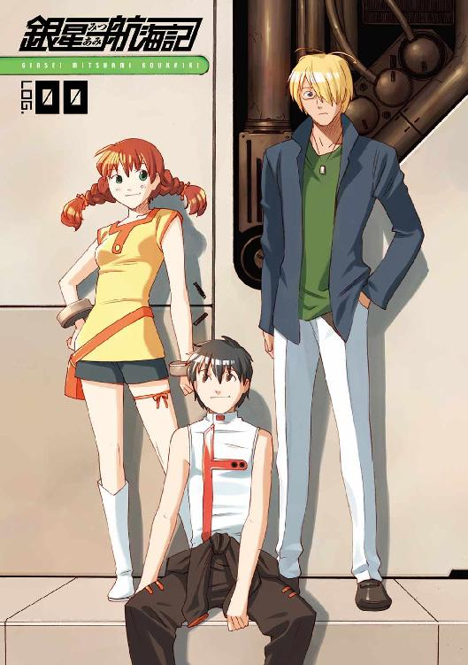
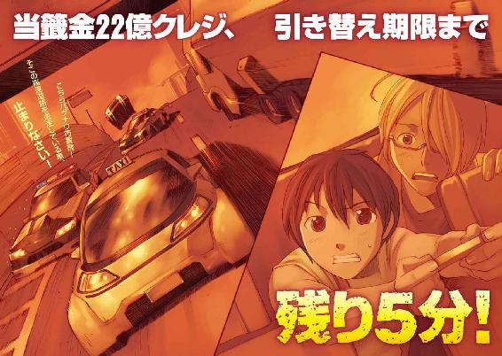
銀星みつあみ航海記
LOG.00 俺らが出帆した動機
鷹見一幸

角川スニーカー文庫
本作品の全部または一部を無断で複製、転載、配信、送信したり、ホームページ上に転載することを禁止します。また、本作品の内容を無断で改変、改ざん等を行うことも禁止します。
本作品購入時にご承諾いただいた規約により、有償・無償にかかわらず本作品を第三者に譲渡することはできません。
本作品を示すサムネイルなどのイメージ画像は、再ダウンロード時に予告なく変更される場合があります。
本作品は縦書きでレイアウトされています。
また、ご覧になるリーディングシステムにより、表示の差が認められることがあります。
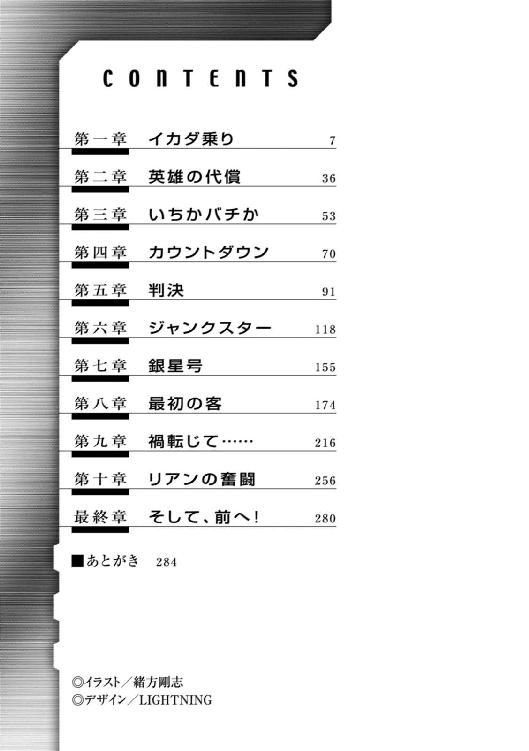
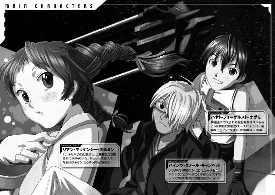
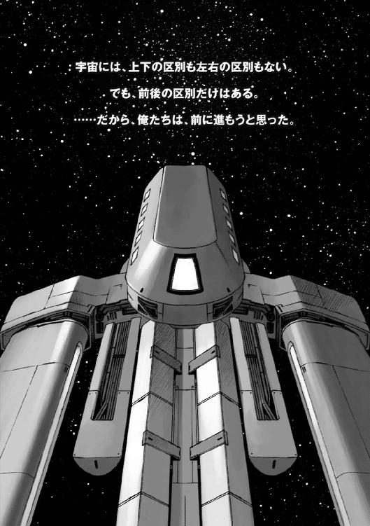
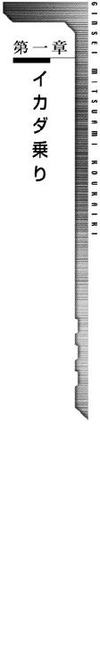
宇宙空間で見る星は、叙情的に瞬いたりはしない。
漆黒の中にばら撒かれた星々は、無表情に光り続けるただの無数の光点である。
人類が、この広大な真空の空間を星の海と称し、その空間を移動する物体に『宇宙船』の名を与え、自分たちが居住する惑星以外の天体にその一歩を印したのは、今から数千年前のこと。
原始的な化学反応推進ロケットにより、宇宙に飛び出した人類は、その後さらに千年の時間をかけて、ついに恒星間旅行を可能にする跳空間航法を開発するに至った。
跳空間航法により恒星間に横たわる何十光年という距離が短縮され、意味を持たなくなったとき、人類は爆発的とも呼べる勢いで、宇宙に生存圏を広げ始めた。
宇宙とは、人類の前に広がった大いなる海であり、そこに浮かぶ星々はすべて未知なる可能性を秘めた大陸だったのだ。
そして、さらに数百年が過ぎ。
宇宙空間は、人類にとって、取り立てて語るほどのこともない、ごく普通の世界となっていた。
その、ありふれた生活の場となった宇宙空間に、薄汚れた十二匹の甲虫が浮かんでいた。
船体後部に大きな推進剤タンクのスペースを持つずんぐりとした船体のシルエットと、コンテナに抱きつくための六本の大きなロックアームを船腹の内側に折りたたんだ減速作業船のシルエットは、昆虫、それも甲虫に実に良く似ている。
あまりにそっくりなので、甲虫という呼び名が制式名称ではなくニックネームだと知ると驚く人の方が多いくらいだ。
てんとう虫の羽根にある文様のように、コックピットの上部に二つ開いた大きな逆噴射ノズルの穴の周辺に、暗灰色の推進剤の酸化汚れを纏った、その十二隻の作業船は、一見するとのんびり浮かんでいるように見えるが、実は光速の十五パーセントという猛スピードで宇宙空間を進んでいた。
地表における背景のように、相対的に速度を見比べるものが無い宇宙空間では、物体の移動速度を目視で確認することは難しい。
等速で移動していた十二隻の中の一隻が、突然後部のノズルから推進剤を噴射して加速を開始した。
最後尾を飛んでいた指揮作業船のコックピットに座った現場監督は、運航管理モニターに映った表示を見て小さく舌打ちをした。
......こっちが指示も出さないうちから加速しやがったのは、誰かと思えばやっぱり新入りか。あせりやがって。
現場監督は、今日の朝、エンデバー星系中継ステーションの荷役デッキの待機室で会った新入りパイロットの顔を思い浮かべた。
......そういえば、あいつは小柄で童顔のくせに、あんまり自分から口をきかない、今ひとつ可愛げのないヤツだったよな。
軍の復員局から、腕利きのパイロットだという紹介状が回って来ていたから、あんまり根掘り葉掘り聞かないで採用したんだが......この分だと、あの紹介状も話半分ってところかな？
現場監督は、通信スイッチを入れるとインカムに向かって怒鳴った。
「おい！ 一番艇の新入り！ 何をあせっている。推進剤の無駄遣いだ、加速をやめろ！」
通信インカムから若い男の声が答えた。
『センサーに感があります、イカダが届きますよ』
「センサーだと？ ふざけるな！ お前の行動は命令違反だ！ なぜならこっちの画面には何も......」
監督が怒ったような口調で答えようとしたとき、コックピットに転移警報のアラームが鳴り響き、何も無かったはずの宇宙空間に、だしぬけに、いくつもの四角い巨大な白い直方体の物体が躍り出た。
中層のビルを真横に倒したほどの大きさがあるその物体は、全体を真っ白な強化セラミックコーティングパネルで覆った貨物コンテナだった。
現場監督の通信チャンネルに、他の作業船のパイロットたちの歓声にも似た叫びがいくつも飛び込んできた。
『おっしゃあ！ イカダが届いた！』
『こいつを運び込めば今日の仕事は終わりだぜ！』
『監督！ どうやら新入りのカンが当たってたらしいな！』
現場監督は、うなり声を上げた後で、インカムに向かって言った。
『うむう......まあ、命令違反はチャラだ！ 記録ＢＯＴのエミル！ 聞いているか？ 一一○○作業開始だ。ガイドラインの説明が終わるのと同時に減速プログラム作動！』
音声チャンネルに、電子人格特有の感情の抑揚の無い女性の声が流れた。
『こちらは記録係のエミルです。一一○○作業開始、了解しました。以後の会話及び航法データについてこれより記録開始します。この記録は公的な機関により保存されることとなり、私的な会話であっても、原則として公開の対象になります......』
公的記録のガイドラインの説明が終わるのと同時に、監督は作業船の推進機を稼動させるピクトレバーを引いて加速を開始した。
「行くぞ！ 第一段階加速開始！ ついてこい！」
その言葉と同時に、他の作業船も一斉に加速して、巨大な十二個のコンテナを追い始めた。
作業船の前を行く貨物コンテナの速度は、光速の五十七パーセント。秒速約十七万キロメートルという途方も無い速度で目的地であるエンデバー宇宙港に向かって宇宙空間を突進している。
なぜ、貨物コンテナが、こんなとんでもない速度で飛んでいるのか。その理由は、一言で言ってしまえば時間短縮のためである。
恒星から恒星へと移動するとき、宇宙船はその間にある何百光年という距離をタンホイザーゲートと呼ばれる人為的に作られた亜空間を使って一気に短縮する。
そして目標の座標まで来た時に亜空間を出て通常空間に転移し、反応エンジンを使って加速し、目的地まで向かうのである。
そして、この行程をさらに時間短縮する方法として、あらかじめ光速の五十七パーセントまで加速してから跳空間フィールドを形成し、タンホイザーゲートに飛び込むという方法が行われていた
この方法を取れば、亜空間から通常空間に転移した時点で加速が終わっているため、時間のロスが少なく、通常航行宇宙船の三分の二程度の時間で目的地に到着できるのである。
この高速宇宙船のイメージは、鉄道の特急列車を思い浮かべてもらえると理解しやすいかもしれない。
特急列車は途中駅を通過して一直線に目的地に向かうことで時間の短縮を図る。別料金はかかるが、時間のロスは少ない。
今、エンデバー星系に飛び出したコンテナは、この特急列車が通過駅で投げ落とした荷物のようなものである。
宇宙空間には、空気抵抗も重力も無いため、宇宙船から切り離され通常空間に転移したコンテナは、宇宙船と同じ速度でそのまま空間を突き進むのだ。
コンテナを受け入れる星系では、あらかじめその転移ポイントに減速作業船を待機させ、飛来するコンテナに作業船をドッキングさせて、減速してから宇宙港に運び込むのである。
この方法で運ばれる荷物は通常荷物の五倍から十倍という高い運賃が設定されていたが、帝国の中心部から二日から三日で品物が届くために利用するものは多く、特に富裕層では、この方法で帝都から最新の流行の品物を取り寄せることが一種のステータスとなっていた。
宇宙運送関連の人々は、飛来するコンテナを川を下ってくる材木のイカダに見立て、この貨物の受け渡し方法を『イカダ流し』と呼び、そしてコンテナに抱きついて減速させる作業船の乗組員を『イカダ乗り』と呼んでいた。
秒速約十七万キロメートルという速度で飛んでくるコンテナに作業アームで抱きつくというこの作業は、コンテナとの接触速度や角度を誤れば一瞬にして弾き飛ばされ、大惨事となる可能性のある実に危険な仕事である。
実際に過去に何度となく事故が発生しており、かなりの数のパイロットが犠牲になっていたが、帝国に流通しているすべてのコンテナに減速ユニットを取り付けるよりも、臨時雇いのパイロットを使ったほうがはるかに安上がりであることから、この荷受の方法は帝国の地方惑星ではごく普通に行われていた。
現場監督のコックピットにある作業管理モニターには各種のセンサーの数値からはじき出したコンテナの速度、そして、そのコンテナと同調する速度に加速するまでの所要時間と推進剤の予測消費量などの数値が並んでいた。
空間座標の中に浮かぶコンテナを意味する十二個の赤い光点を、作業船を意味する十二個の青い光点が追いかけて行くのが見える。
......先頭を行くのは、あの新入りの若者が乗る船だな。不慣れなヤツは、大概あせって加速して推進剤を無駄遣いしやがるんだ。
新入りの船には、それを見込んで規定量より二割余分に推進剤を積んであるんだが......さてさて、その余禄の分まで使い切っていなけりゃいいけどな。
そんなことを考えながら、新入りの若者の乗る作業船の燃料消費率をモニター上に表示した監督の目が細くなり、怪訝そうに何度も瞬きを繰り返した。
......おかしいな？ センサーが狂ってるのか？ 推進剤の消費量が一番少ないなんてそんなわけがない。
オートコントロールでこんな数字が出せるわけがない。こいつはマニュアルで一分の無駄もなく加速用のピクトレバーを操作して初めて出せる数字だ。
そんな操作方法ができるのは、軍のパイロットの中でも、究極まで推進剤を節約する長距離作戦行動ができる、技量ランクＳＳＳ、通称、甲一番、と呼ばれる腕前を持った一握りのパイロットだけだ......。
監督は、急いで管理用モニターの表示を人事データ表示に切り替えた。
そして、自分を含む十二人の作業船パイロットの名前と個人データが画面に並ぶ、その十二番目の枠に表示された、ハヤト・フォーゲルスト・ナグモという名前にすばやくカーソルを合わせキーを押した。
そこに、どこかに少年の面影を残した黒い髪の若い男の顔写真と簡単な経歴が表示された。
その経歴にすばやく目を走らせた監督が、小さく口笛を吹いた。
「ひょう、こいつはすげえ。やっぱり機動戦闘艇乗り、それも第一○九戦闘部隊の生き残りか......」
監督が、思わず口にしたその独白を、インカムが拾っていた。
『ええ？ 誰が一○九戦闘部隊の生き残りだって？』
『一○九戦闘部隊って、あの、孤立したイングローブ星系で、百二日間戦い抜いて、ローデス軍に自軍の三倍の損害を与えた、あの機動戦闘艇部隊か？』
『ウソだろ？ だって、あの部隊は搭乗員の平均余命が二週間って言われてたんだぞ』
『ああ、死神部隊って言われていたんだぜ......生き残りなんていたのか？』
そのとき、パイロットたちの音声チャンネルに、無愛想な声が割り込んだ。
『生き残りはいる......俺と、俺のナビゲータだったヤツだ......』
その言葉を聞いた他のパイロットたちが、口々に色々なことを言い始めた。
『おいおい、そんなスゴ腕パイロットが、なんでこんなところでイカダ乗りやってんだ？ お前、本当に一○九戦闘部隊の生き残りなのか？ 俺たちをびびらせようとウソついているんじゃないだろうな？』
ハヤトは、ぼそりと答えた。
『......経歴を調べれば、すぐわかる。バレるようなウソはつくだけ無駄だ』
その、不機嫌そうな答え方を聞いて、音声チャンネルの中に白けた空気が漂った。
その空気を拭い去るように、監督がきっぱりと言った。
「いや、俺が悪かった。こんなところで、個人データを口にしたのは俺の責任だ、許してくれ」
『あ......いえ......本当のことですから気にしてないです』
その、無愛想極まりない言葉の端に、どこか少年のような響きを聞きつけた一人のパイロットが突っ込んだ。
『おい、ハヤトって言ったっけ？ 歴戦の勇士の生き残りだって言う割には、口のききかた知らないようだな。お前、歳いくつだ？』
『パイロットに必要なのは腕だ！ 歳なんか関係ないだろ！』
音声チャンネルに流れた声は、唇を尖らせて文句を言う少年をイメージさせるものだった。人事記録の履歴を見ていた現場監督が、間に割って入った。
「まあ、ハヤトの言うとおりだ。ここで求められているのは、パイロットの腕だけだ。それ以外は関係ないことだな......とはいえ、よく知らない相手と仕事するのも嫌なもんだ。ハヤト。自己紹介だ。自分の経歴を簡単に話せ」
『わかりました......』
そして、一呼吸置いてからハヤトは、ぼそぼそとした口調で言った。
『ええと、俺はハイスクールの途中からそのまま志願して練習生として帝国軍に入隊した人間です......志願と言っても奨学金をもらっていましたから義務みたいなもので......除隊した時の階級は少尉でした......そんなとこです』
現場監督は、インカムに向かって笑いながら言った。
「ローデスと五年続いた戦争も停戦が発動して、やっと平和になったんだ。戦争のために使った数年間の元を取って面白おかしく楽しく暮らしたって文句は言われねえ。これが終わったら、お前さんを連れて、みんなでエンデバーステーションの中にある街に繰り出すとするか。新入り歓迎会だ」
監督の言葉を聞いたハヤトは弾んだ声で答えた。
『ホントですか？ 嬉しいなあ』
その明るい声を聞いた他のパイロットたちの中に、ほっとしたような空気が流れた。
『新人の時ってのは誰でも不安なもんだが、そんなに身構えなくてもいいじゃねえかよ』
『歓迎会のときにでも色々聞かせてくれよ』
『そういえば、新人歓迎会は監督のオゴリですか？』
現場監督は苦笑いを浮かべて言った。
「バカ言え、俺は所帯持ちで、家には食べ盛りのガキが二人いるんだ。割りカンに決まってるだろうが！」
『しけてやがんなあ、まあ所帯持ちには所帯持ちの苦労があるから仕方ねえか』
『とにかく、ぱーっとやりましょう、ぱーっと！』
パイロットたちが、軽口を叩いている最中にも作業船は加速を続け、先行するコンテナに追いつこうとしていた。
自分の乗る指揮作業船のメインモニターに、それぞれのコンテナから発信されるビーコン信号が表示され始めたのを見た現場監督は、インカムに向かって怒鳴った。
「ようし、雑談は終わりだ！ コンテナに追いついたぞ。それぞれに自分がコンタクトするコンテナを確認しろ！ 確認したら、コンタクトプログラムを起動して、コンテナのビーコンと同期しろ！」
『了解！』『了解しました！』
パイロットたちは、短く答えると、コンテナに接合するためのコンタクトプログラムを起動した。
作業船のコントロールシステムは、それぞれに自分の担当するコンテナを見分けて、作業船をその後ろにぴったりと付けた。
「よし！ 各自、指定されたコンテナに取り付け！ 減速係数と宇宙港への搬入時間は予定のとおりだ、変更はない！」
『了解！』
パイロットたちは口々に短く答えると、両手に握った推進機をコントロールするピクトレバーに精神を集中させながら、減速作業船をコンテナに近づけはじめた。
高速で移動しているコンテナは、それぞれに接触しないように、少しずつ角度を変え、さらにゆっくり回転するようなモーメントを与えられて射出されている。
後端部の四箇所についているレーザー発振装置から伸びるビームをセンサーが受信するのと同時にシンクロプログラムが作動し、作業船の動きにも回転モーメントが加わった。
減速作業船は船体の下部に折りたたまれていた六本の大型ロックアームを展帳させて、ゆっくりとコンテナに向かって前進していく。
パイロットたちは小刻みにピクトレバーを動かし、それぞれのロックアームがコンテナのロックポイントの上に来るように作業船を持っていった。
さっきまでパイロットたちの軽口で充満していた音声チャンネルを沈黙が支配していた。
その沈黙が、今行われているコンタクト作業が、この一連のイカダ乗り業務において最も危険な作業であることの証明だった。
現場監督は、自分の担当である最後尾のコンテナに作業船をぴったり寄せると、六つのロックポイントに向けて、ロックアームを伸ばした。
近づいてみると、輝くような白い強化高密度セラミックコーティングが施されているコンテナの表面全体が、磨りガラスのようになり、無数の傷跡がついているのがわかる。
何も無いはずの宇宙空間にも、星間物質と呼ばれる微細な粒子が漂っており、光速の五十七パーセントという速度で宇宙空間を移動する際にそれらの粒子と衝突して傷が生じるのだ。
コンテナのセンサーとアームセンサーがシンクロしたその瞬間、六つのロックアームががっちりとコンテナを抱え込んでロックした。
作業船の船体を通じてロックアームの先端部がコンテナに溶着するときのジリジリという振動が伝わってくる。
溶着されたロックポイントに向かって冷却剤が吹き付けられる振動音が聞こえ、やがて作業船のコックピットに六個のロックポイントすべての強度が確認されたことを示す青いセンサーランプが灯った。
......よし、コンタクト作業終了！ これで前半の山場はなんとか越えることができたな。
現場監督が、小さく安堵のため息を漏らすのと同時に、音声チャンネルに、各作業艇のパイロットたちの明るい声が飛び込んできた。
『一号艇、固着完了！』
『五号艇、同じく固着完了！』
『二号艇固着完了！』
パイロットたち全員の報告と指揮モニターを確認した監督は、インカムに向かって短く命令を発した。
「よし！ 各船、減速開始！」
そして、現場監督は両手のピクトレバーを一気に引いた。
次の瞬間、作業船はコックピットの上に突き出している減速用噴射ノズルから前方に向かって物凄い勢いで推進剤を噴射し始めた。
宇宙空間には大気の抵抗が無い。大気のある惑星の地表上で物を投げると、その物体は大気との摩擦でエネルギーを失い、惑星の重力に引かれて落下し何もしなくとも自然に停止する。しかし宇宙空間で物体の運動を止めるには、その物体の質量と慣性に相当するだけ逆方向に運動エネルギーを与えねばならないのだ。
荷物を詰め込んだ巨大なコンテナの質量と慣性は、並大抵のものではない。慣性は、その物体の重量の二乗に比例する。という慣性の法則のとおり、コンテナにかかった慣性は、作業船の推進剤の一回や二回の噴射で簡単に減衰できるものではない。
作業船とコンテナを繫いでいる六つのロックポイントにかかる力を示す応力センサーが黄色に変わり、さらに赤くなるその寸前に現場監督はピクトレバーをすばやく戻した。
噴射ノズルから船体を伝わってコックピットを揺さぶっていた振動がぴたりと止まる。
そして、ロックアームの固着ポイントの応力センサーの数値が安全圏に戻るのを待って、再び推進剤の噴射を開始した。
減速作業船と巨大なコンテナを繫いでいるのは六本のロックアームだけである。ロックアームに荷重をかけ過ぎると破損してしまう。そのためこうやって何度も噴射を繰り返し騙し騙しコンテナの速度を減じていくのである。
三回目の逆噴射を終えたとき、現場監督の顔が歪んだ。
......くそ！ おかしいぞ！ まったく減速しない！ 噴射した質量から計算すれば、もっと減速できるはずだ！
監督の作業船が抱きついたコンテナは、一次減速を終えた他のコンテナの脇をすり抜けるようにそのままの速度で前に出た。
他の作業船のパイロットは目を疑った。
......まさか、監督が減速に失敗したのか！
目の前で、監督の作業船が再び最大出力で逆噴射をかけた。
作業船のコックピットの上にあるノズルから、酸化した推進剤が、激しい勢いで噴射されているのが見える。だが、コンテナが減速する様子は無い。
......違う！ 失敗じゃない！ あのコンテナが重過ぎるんだ。
パイロットたちが、そう思ったとき、メインモニターに緊急事態を告げるサインが点灯し、それと同時に監督の切迫した声が外部通信チャンネルに飛び込んできた。
『エマージェンシーコード九○九を要請する！ こちら減速作業船ベータ二五六！ 繰り返す！ エマージェンシーコード九○九を要請する！ 射出コンテナ過積載のため、減速完了できず！ コンテナの針路上のすべての船舶及び建造物について早急なる退避を！ コンテナの実質量は予定計算値の二百パーセント！ 倍近いことが判明した！ こちらの減速用推進剤すべてを使用しても、減速は不可能！ コンテナは光速の四十二パーセント、秒速十二・六万キロの速度で針路Ａ二八八・Ｒ四二六を進行中！ このままだとエンデバーステーションへの衝突針路となる！ 対処策を至急指示されたし！』
監督の通信が流れたとたん、インカム内の雑音がすっと消えた。
このコンテナ減速業務に関する通信が最優先され、エンデバー星系内で行われる船舶間の通信が制限されたのだ。
減速させるべきコンテナが予定数の二倍の質量を持つということは、減速作業船一隻分の推進剤を使い切っても、コンテナの減速ができないということである。
減速し切れなかったコンテナは、猛スピードを保ったまま最終目的地である惑星エンデバーの衛星軌道上に浮かぶエンデバーステーションに突っ込んでいくだろう。
エンデバーステーションは、このエンデバー星系の玄関口である。
衛星軌道上から惑星地表へと軌道エレベーターのシャフトを伸ばしたその姿は、遠くから見ると、まるで惑星の表面に刺さった長い虫ピンのように見える。
その虫ピンの頭は、実は半径二キロの円盤型の巨大な建造物であり、十万人に及ぶ人々が生活している宇宙都市でもある。
ステーションの外周には、宇宙空間を飛んでくる小天体や物体から構造物を守るために防御用の力場シールドが張り巡らされているが、その力場の防御力は、あくまでも微細な破片程度からステーションを守るためのものである。
秒速十二万キロ以上の速度で、中層ビルほどの大きさの物体が突っ込んで来ることを予想して、設置されたものではない。
コンテナの大きさは中層ビルほどしかなくとも、秒速十二万キロという速度の運動エネルギーの総量は、核兵器並みとなる。
監督の脳裏に、自分が乗っているコンテナが、エンデバーステーションに突っ込んでいく光景が浮かんだ。
おそらく衝突したコンテナは半径二キロのステーションの第一層から第十二層までの構造物をすべてぶち抜き、中央部にある反応炉そのものを破壊するだろう。
......それは『大惨事』などという三文字の単語で、簡単に表現できるものではない。
破壊された反応炉は、そこにある物質すべてを吞み込み、寿命の短い小さな太陽となって衛星軌道上で燃え尽きるまで、夥しい放射線を発するに違いない。
放射線は惑星エンデバーの地表に降り注ぎ、エンデバーは死の星となるかもしれない。
それは最悪のシナリオだ。だが、それが起きないという確率より起きる確率のほうがはるかに高いのだ。
次の瞬間、船内通信チャンネルから監督のインカムに、他の作業船のパイロットからの通信が次々に飛び込んできた。
『二倍過積載ってのはホントですか！ 事前に連絡もなにもなかったんですか？』
『残り一回の噴射で方向転換ができますか？』
『俺たちに何かできることはありますか！』
監督は歯嚙みするような声で答えた。
『事前に通報があれば、このコンテナはタンデムで処理したに決まってる！ 何の連絡もありゃしねえ！ だからこんなことになっちまったんだ！ フュージリア運送のやつら、俺たち下請けのことなんざ考えてねえんだ！ 残された方法はこいつの爆砕ボルトを作動させて投棄することだけだ！』
監督の言葉が終わるのと同時に、コントロールからの指示が飛び込んできた。
『こちらエンデバーコントロール！ 荷主からの積載量の訂正報告が今届いた』
『今頃訂正が届いたって手遅れだ！ それと......早くコンテナを投棄する許可をくれ！ このままだと間に合わない！ こっちは光速の四十二パーセントって、とんでもない速度でそっちに向かって飛んでいるんだぞ！』
『それはわかっている。だが、そのコンテナの荷主の窓口からは、そのコンテナは、我がフュージリアグループのＶＩＰ私有コンテナであり、投棄は認められない、の一点張りなのだ！』
『なんだと!? ＶＩＰコンテナだかなんだか知らんが、このままだと、とんでもないことになる！ 早くしないと選択肢がどんどん無くなっていくんだ！ 早くしろ！』
コントロールと通信を交わしながらメインスクリーンに航路情報を呼び出した監督は、目を見開いた。
自分が抱え込んでいるコンテナが今の速度のまま直進すれば、宇宙港に衝突するのはたった一時間後。それを回避するには、コンテナの方向を変えるしかない。
しかし、このコンテナの向かうその先には、衛星軌道上に浮かぶ農業コロニーや鉱物採掘コロニーなどがいくつも浮かんでいるのだ。
最低でも三十度以上の角度を与えて方向を変えない限り、コンテナはこの先に浮かぶいずれかのコロニーに突っ込むことになる。だが、減速作業船の方向転換用のノズルの推力では、そんな急角度の方向転換はできない......。
そして、何の通信も無いまま五分が過ぎた。
我慢しきれなくなった監督が叫んだ。
『おい！ どうなっているんだ！ こうなりゃ許可なんて関係無しに投棄するぞ！』
『こちら、コントロール！ 許可無くコンテナを投棄すれば、刑事犯罪となる！』
『ふざけるな！ このままステーションやらコロニーのある中に突っ込めと言うのか！ ＶＩＰコンテナだかなんだか知らんが、人の生命より大事なわけ無いだろう！』
コントロールからの返答は苦渋に満ちたものだった。
『わかっている、現在説得中だ！ もう少し待ってくれ！』
『もう待てないぞ！ 投棄する！』
『頼む、もう少しだけ待ってくれ！ このエンデバー星系の資本は、全部フュージリアグループが押さえているってことはあんたも知っているだろう？ 逆らえばどんなことになるのかわからんのだ！』
『言うこと聞いていたら、もっとどんなことになるかわからんぞ！』
『状況は説明した！ しかしフュージリアグループの担当窓口の態度は変わらん！ コンテナを投棄すれば刑事訴追の用意があると脅しをかけてきた！』
『じゃあどうすればいい！ 刑事訴追しようがどうしようが、このコンテナは止められんのだ！ あと一時間もしないうちに、こいつはお前さんのいるエンデバーステーションに衝突する！』
一呼吸ほどの沈黙の後でコントロールが答えた。
『たった今、帝国軍から連絡があった......非常事態宣言を受け、これより出動するとのことだ！ 軍用タグボートが、ステーションの先に中立フィールドを展開する！』
『無理だ！ そこにたどりつく前に、どこかのコロニーに突っ込む！』
コントロールは、苦渋に満ちた声で答えた。
『止められないことが判明した時点で、巡航艦が主砲で砲撃し破壊するそうだ......』
インカムの中に沈黙が訪れた。
コンテナを破壊するということは、コンテナに取り付いている作業船もそのまま破壊されるということである。
そして、船内のギリギリのスペースまで推進剤を積んでいる減速作業船には脱出ポッドのたぐいは搭載されていない。
監督は、ゆっくりと言った。
『くそ！ フュージリアグループめ、くだらねえことで引き延ばしをかけやがって......おかげでこのざまだ。
オーケイ......わかった、このまま宇宙ステーションに突っ込んで迷惑かけるわけにはいかない。一気にぶっ飛ばされちまったほうが気が楽だからな......』
『いや......違う。砲撃して破壊するのは、そのコンテナの先にあるコロニーの方だ。その空域にある農業コロニーや鉱物採掘コロニーはすべてフュージリアグループのものだから、コンテナを守るために破壊するのもやむをえないという回答なのだ』
『なんだと!?』
監督は、衝突コース上の一番近い位置にある鉱物採掘コロニーに至るまでの時間を確認した。
......三十一分......ということは、このコンテナが到達する前に破壊するとして、残された時間はギリギリでも二十分。
「おい、コントロール！ どう考えてもコロニーにいる従業員全員が脱出できる時間は残っていないぞ！ 間違いじゃないのか？」
『間違いではない、フュージリアグループ上層部から帝国軍に依頼があり、帝国軍の司令官が命令を出した。コンテナを守るために多少の犠牲はやむをえん、ということらしい』
「ふざけるな！ あの採掘コロニーには千人を超える従業員とその家族が暮らしているんだ！ その人間の生命より、このコンテナの方が大事だと言うのか！」
『フュージリアグループは、そう決定した......もはや誰にもそれを覆すことはできない......』
コントロールが、諦観を滲ませた声で答えたそのとき、監督の作業船のメインスクリーン上のパーソナル通信を意味するアイコンが瞬いた。
チャンネルを切り替えるのと同時に若い声が飛び込んできた。
『監督！ 一号艇のハヤトです！ 三分五十五秒後に針路を三時方向へ三十二度変えることができれば、二つのコロニーの間をすり抜けて、そのままタグボートの展開した中立フィールドの前にたどり着けます！』
『なんだと？』
半信半疑で針路計算のプログラムにハヤトの指示した数値を入力した監督は、感嘆の声を上げた。
それは、本当に一瞬の隙間だった。一度角度が変わっても五秒遅れてもコンテナはその先にあるどちらかのコロニーに突っ込むだろう。だが、ハヤトの指示したコースに乗せることができれば、コンテナは無事に二つをすり抜けて帝国軍のタグボートが展開する中立フィールドの前に到達することができるのだ。
『この方法しか、コロニーとコンテナの両方を救う方法はありません！ コントロールに砲撃を中止するように言って下さい！』
監督は一瞬躊躇した後でハヤトに言った。
『いや、無理だ！ 確かにこのラインで飛べば、すり抜けは可能だ、しかし、俺の作業船の推進剤の残りは全力噴射一回分だけだ！ その推力ではとても三十二度という急角度の方向転換はできない！』
ハヤトの答えは想像を超えたものだった。
『推進剤は、針路の微調整に使って下さい！ 針路は......俺のコンテナを当てて変えます！』
『コンテナを当てるだと！』
『俺の作業船の推進剤は予定計算値より二割多く積んであります！ 加速してコンテナを接触させることができるのは俺の作業船だけです！ 俺のコンテナの積載物を確認したら壊れ物は入ってなかった！ 浅い角度で当てれば、そちらのコンテナもこちらのコンテナも致命的な損傷を受けることは無いはずです！ これから加速して監督のコンテナに当てに行きます！ コントロールへの報告と、針路の微調整をよろしくお願いします！』
監督は、一呼吸ほどの間黙ってメインスクリーンに示された針路を見つめていたが、やがて力強くうなずいて、コントロールを呼び出した。
『エンデバーコントロール！ こちらはこれより方向を変え、ステーション及びコロニーをクリアする針路を取る！ これより新針路のデータを送信する！』
監督がデータを送信するのと同時に、コントロールから興奮した答えが返ってきた。
『こちらエンデバーコントロール！ 新針路データを受け取った！ こいつはタイトすぎる！ 角度と時間のタイミングを間違えばクリアできんぞ！』
『そんなことは言われんでもわかっている！ いいからそっちは帝国軍に連絡を取れ！ こっちには時間が無いんだ！』
『エンデバーコントロール了解！ 幸運を！』
監督とコントロールとの会話が終わるのを待っていたハヤトは、両手に握った二つのピクトレバーをぐい、と前に倒した。
「行きます！」
後方推進ノズルから噴射が始まるのと同時に、ハヤトの作業船は抱え込んだコンテナごと、ぐん！ と加速を開始し、はるか前方に離れた監督のコンテナめがけてものすごいスピードで進み始めた。
同僚のパイロットたちは誰もが無言だった。
今、ハヤトがやろうとしていることは、撃ち出されたライフルの弾丸に向けて横からもう一発撃って当てて弾丸を弾き飛ばし、まったく違う場所にある標的のど真ん中に当てる。という曲芸を、その弾丸にまたがってやろうとしているのに等しいのだ。
......無理だ、できっこない！
誰もがその答えを胸に抱いたまま、無言でハヤトのコンテナが小さくなっていくのを見送った。
一分三十秒後、監督の作業船のコックピットにある後方警戒センサーがハヤトのコンテナを捕らえた。
赤い光点が見る見るうちに近づいてくるのがわかる。
『おい、速度が出すぎてるぞ！』
ハヤトの返答は落ち着いていた。
『そちらのコンテナの質量はこちらの倍です。この速度エネルギーを維持したまま接触させなければ、充分な方向変換モーメントが生じません！ 接触予定三十五秒後です！ 耐ショック防護姿勢で待機していてください！』
『あ、ああ、わかった！』
そう答えた監督がハーネスの固着と各種ギミックの固定を終えた直後、ハヤトの声が飛んだ。
『当てます！』
このとき、監督の作業船のモニターカメラの映像データや、ハヤトの作業船のモニターカメラの映像は、作業船の船団内チャンネルから、公的記録ＢＯＴであるエミルのリンクを通じて、リアルタイムで宇宙航行作業共通データチャンネルに流れていた。
そして。緊急事態宣言が行われた直後から、この共通データチャンネルへのアクセス数が跳ね上がっていた。
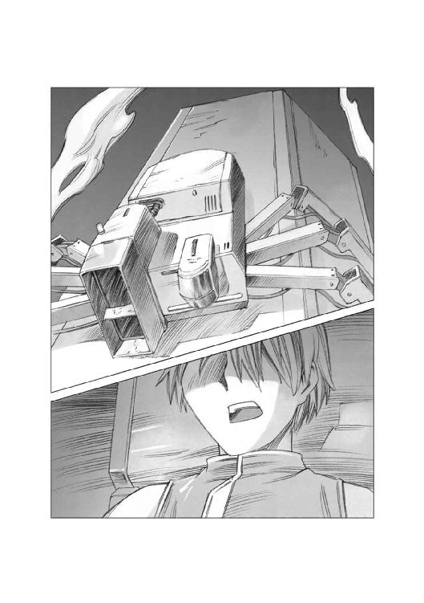
それはエンデバー星系の宇宙航行作業関係者の多くが、この事故のリアルタイムの映像に釘づけになっていることを意味していた。
前を行く監督のコンテナに向けて加速しながら突っ込んでいくハヤトの作業船のコントロールタイミングは、絶妙だった。
公式データチャンネルを見ていた誰かが、音声チャットルームの中で、搾り出すような声でつぶやいた。
『......すげえ、あいつ、目視だけで、あのクソでかいコンテナをコースに乗せてるぞ！』
『光速の四十二パーセントなんてものすごい速度で動いている物体を、目視だけでコントロールする人間なんているのかよ！』
『......じゃあ、俺たちは今、何を見ているんだ？』
誰かが、つぶやいた。
『あいつなら......やれるかもしれない』
誰かが、答えた。
『ああ、あいつは......本物だ！』
公式記録チャンネルにアクセスしている人々は、誰もが両手を握り締め、固唾を吞んでハヤトの船を見つめていた。
タイムカウンターが三分五十五秒を刻んだそのとき、ハヤトはピクトレバーに髪の毛一筋ほどの力を加え、推力の向きを変えた。
ハヤトの乗る作業船が抱え込んだコンテナは、くん、と小さく首を振ると、加速しながら監督の抱え込んでいるＶＩＰコンテナの右下に突っこんで行った。
角度はごく浅く、しかし充分な速度を保ったまま衝突したハヤトのコンテナは、あたりに表面の強化セラミックコーティングの破片を振りまきながら監督のコンテナを弾き飛ばした。
もし、宇宙空間で音が聞こえたなら、この瞬間、このあたりは物凄い衝突音と、セラミックの表面が削られる気の遠くなるようなカン高い金属音で満ちただろう。
コックピットの中で激しく揺さぶられながら、監督は自分のコンテナの針路を確認した。
......プラス修正〇・二度！
ピクトレバーをすばやく操作して予定の針路にコンテナを乗せるのと同時に、監督は叫んだ。
『針路変更確認！ やったぞ！ クリアだ！ 砲撃中止！ コンテナはそのまま進行する！』
その瞬間、通信インカムの中から、何百という数の歓喜の叫びと、祝福の言葉が入り乱れて聞こえてきた。
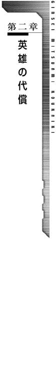
エンデバーステーションの宇宙港は、帝国の中西部辺境域の玄関口として、ハブ空港の役割を担っている。
円盤型のステーションの上部には、豪華な旅客用宇宙港の設備があり、その下にはビジネス優先の無味乾燥な質素な造りの貨物用の宇宙港設備がある。
その、貨物用宇宙港の中に、不似合いな熱気が渦巻いていた。
普段は荷役作業員がまばらに歩き回っているだけの作業船係留デッキの上に造られた見学者向けの通路に、人があふれているのだ。
彼らは共通データチャンネルにアクセスして、今回の事件の一部始終をリアルタイムで見ていた、このステーションに勤務する従業員たちだった。
荷役作業員や、整備員だけではなく、清掃作業員や運送会社の伝票整理をしていた女子職員や、作業員食堂のコックやウェイトレス、そして、本来なら勤務を放り出してこんなところに来ている従業員を叱るべき中間管理職たちの姿もあった。
やがてコンテナを無事に運び込み、溶着したアームを開放した減速作業船が、次々にデッキに帰ってくると、それを出迎えようとしていた人々の間に人の波が起きた。
「あれか？ あの作業船か？」
「いや、違う！ あっちだ！ 確か一号艇と呼ばれていたはずだ！」
「どんな人なんだろう？」
「さあ、わからないけど、死神部隊の生き残りってことは、歴戦の勇士でしょ？ 虚無感を漂わせた青年ってイメージよね！」
「私、惚れちゃうかも～！」
「あんた、カレシいるじゃん！」
運送会社の事務員の制服を着た女の子たちが、勝手なことを言い合っていると、横に立っていた初老の整備員が笑いながら言った。
「ハヤトは、ニヒルな二枚目とかそんな男とはまったく違うぜ、変な期待はしねえほうがいいな」
「おじさ......いえ、班長さんはハヤトと会ったことがあるの？」
整備員の着ている作業服の襟の階級章を見て、あわてて言い換えた事務員の女の子を見て、初老の整備員はうなずいた。
「今朝、ここから出て行くときにな。あいつの乗っていた作業船を整備したのは俺だよ......ほら、ちょうど今デッキに係留された船、あれがハヤトの乗っていた船だ」
その言葉を聞いた人々の視線が集中する中で、その作業船のハッチが開いた。
パイロット用の私物を入れるラゲッジバッグが、ぽん、と通路に投げ落とされ、その後から、黒い髪の若者がひょい、と顔を出した。
一見すると高校生くらいに見える童顔だった。
デッキの上にいた若い女の子から、黄色い悲鳴が飛んだ。
「きゃー！ カワイイ！」
「うそうそ！ 私より年下なの？」
「うわー好み！ 今のカレシなんかいらない！ あっちに乗り換えるゥ！」
通路に降りたハヤトを待ち構えていたのは、同じイカダ乗りのパイロットたちだった。
「よう！ 新入り！ よくやった！」
「俺たちのチームは、これで他のイカダ乗りから一目置かれるぜ！」
「飲みに行こうぜ！ 飲みによ！ 俺がおごる！......金ないけど」
同僚のパイロットたちは口々にそう言うと、ハヤトの肩をバンバンと叩き、首を抱え込み、髪の毛に手を突っ込んでもみくちゃにした。
その手荒い歓迎の中に、パイロットたちの厚い信頼を感じ取ったハヤトは、軍にいた頃の仲間を思い浮かべていた。
......あいつらも、初陣から生きて還った俺とハインツを、こんな風に歓迎してくれたっけ。
そして、ハヤトは自分に言い聞かせた。
この人たちは仲間だ......大切な仲間だ。
戦争は終わった......だから、もう仲間が死ぬことはないんだ。
もみくちゃにされながら、通路を歩き始めたハヤトは、デッキの上にある見学通路に何十人という人々が出迎えているのに気がついて目を丸くした。
デッキにいた人々が、透明な硬化テクタイトスクリーンの向こうで、笑いながら手を振るのを見た同僚のパイロットが、ハヤトに言った。
「見ろ、ギャラリーが手を振ってるぜ」
「ええ、そうですね」
「そうですね、じゃねえ！ こういうときは手を振り返すのが英雄の義務だぜ」
「そういうものなんですか？」
「ああ、そういうものだ」
ハヤトは照れたように笑って、手を振り返した。
その、いかにも純朴そうな仕草を見た人々の間に、小さな笑い声が広がった。
エアロックのドアが開くのと同時に、ハヤトの耳に歓声と口笛と拍手と叫び声がごっちゃになった音が飛び込んできた。
「ありがとう！」
「すげえな！ やったじゃん！」
「あんたはヒーローだ！」
「彼女にしてぇ！」
絶句したまま立ち尽くしたハヤトを見て、横に立っていた同僚のパイロットが笑いながら言った。
「一躍ヒーローだな、ハヤト。今なら彼女作りたい放題だぞ」
「あ、いや、そんなこと言われても......」
ハヤトが面食らったように、そう答えたとき、出迎えの人々の後ろから声がした。
「これは何の騒ぎかね？ この貨物用デッキの管理責任者は誰だ！ 後で私のところに理由書を提出したまえ！」
高圧的な言い方に、不満の声を上げながらエアロックの前に集まった人々が振り返ると、そこに、制服を着た保安要員を連れた、いかにも高そうな仕立てのダークスーツを着た三十代前半の男が立っていた。
ざわめく人々を、軽蔑するような目で見回して男は言った。
「勤務時間でありながら、持ち場を離れ、こんなところに来ているとは、まったくあきれ果てた連中だ。こういったレベルの低い連中のおかげで、我々フュージリアグループの生産性が低下しているのだな」
そして、男はハヤトを指差して言った。
「君がこの荷役作業船第一号のパイロット、ハヤト・フォーゲルスト・ナグモ、だな。直ちに港湾長のところに出頭しろ！ 現場監督はもうすでに港湾長のところにいる。大至急だ！」
「わかりました、港湾長のところに向かいます」
そう言って、ハヤトは思わず敬礼をしてしまった。
その敬礼を見て、ダークスーツの男は馬鹿にしたような薄笑いを唇の端に浮かべた。
「......ふん、軍人上がりか。戦争はもう三ヶ月も前に終わったんだ。いつまでも戦争ごっこ気分でいるからこんな不祥事を起こすのだ......まあいい、早く出頭しろ」
男は言いたいことだけを言うと、くるりと背を向けて保安要員と共に帰って行った。
「誰だあいつ。いけ好かねえヤツだな」
「ずいぶん偉そうな口利いてたけど、偉いさんか誰かなのか？」
「さあな、大方フュージリアグループの上層部の連中だろう」
同僚のパイロットの言葉を聞いていたハヤトが、つぶやいた。
「そうですね......きっと貴族ですよ、あいつ」
「わかるのか？」
「ええ、無謀な作戦を立てて押し付けてくる参謀たちと同じ匂いがしました......」
ステーションの中央部にあるオフィスブロックの最上階にある港湾長オフィスの控え室のソファには、帝国軍のパイロットジャンパーを着込んだ三十代後半の無精ひげを生やした金髪の男と、同じデザインのジャンパーを着込んだハヤトが座っていた。
ハヤトは、少し不安そうな目で金髪の三十男に話しかけた。
「監督......港湾長って、この宇宙港の最高責任者ですよね」
「ああ、そうだ。航空宇宙管理局のトップクラスの官僚だ。軍隊で言えば、実戦部隊の最高責任者......階級で言えば大佐ってところだな」
不安そうなハヤトを見て、監督は笑ってみせた。
「まあ、そんなに緊張するな。俺たちは怒られるようなことをしたわけじゃない、その逆だ。堂々と胸を張っていりゃいい。港湾長じきじきの呼び出しってことは、うまくすれば報奨金が出るかもしれないぞ」
「報奨金ですか？」
「そりゃそうだ。考えてもみろ。お前の機転でコロニーもコンテナも無事だったんだ。当初の方針で行けば今頃、鉱物採掘コロニーは千二百人の従業員と、その家族もろとも宇宙の塵になっていたところだぞ。お前は無駄な犠牲を出すことなく事態を収拾した功労者なんだからな」
ハヤトは笑った。
「報奨金はうれしいな。戦争が終わった後ずっと無職で、やっと見つけた仕事がこのイカダ乗りだったんですよ」
「家には帰らんのか？」
ハヤトは怪訝な顔をする監督から視線を外した。
「帰りたくとも帰る星がありません......俺の家は、シレン星系にあったんです......」
監督は目を見開いた。
「シレン星系って......あそこか！ 半年前にローデスの地殻破壊弾攻撃を受けた......」
ハヤトは黙ってうなずいた。
「......そうか、知らなかったとはいえ悪いことを聞いた」
監督が、そう言って小さく頭を下げたとき、控え室のドアを開けて秘書の女性がやってきた。
「お待たせしました、港湾長がお呼びです、執務室にお入り下さい」
くるぶしまで埋まるような毛足の長い高級なじゅうたんの上に、惜しげもなく置かれた大きなマホガニーのデスクの向こうに立っていた、髪に白いものが混じる初老の男が、ゆっくりと言った。
「君たちは──クビだ」
一瞬の空白の後で、監督とハヤトは同時に叫んだ。
「なぜですか！」
「どうしてですか！」
港湾長は、顔に苦渋の色を浮かべて答えた。
「君たちの貨物取り扱いについて重大な不手際があったということで、荷主であるフュージリアグループ総務部から厳重な抗議が来ているのだ。
特にＶＩＰコンテナについて、内容物の損傷により、計画していたプロジェクトが台無しになったとして、このコンテナに関わった者を今後一切荷役関係者として雇用しないように、という指示が出ている」
「なぜだ！ 俺たちは、誰一人犠牲を出しちゃいない！ そのために最善の方法を取ったんだぞ！」
嚙み付いた監督を見て、港湾長はうなずいてみせた。
「確かに、君たちの取った処置により、鉱物採掘コロニーは破壊されずに済んだ。一人の犠牲者も出てはいない。しかし、この件により、フュージリアグループは莫大な経済的損失を負う事となったのだ......」
「莫大な経済的損失だと？ あのコンテナには、一体何が積んであったんだ？」
港湾長は静かに答えた。
「豆腐だ」
執務室を沈黙が包んだ。
最初に口を開いたのは、ハヤトだった。
「あの......豆腐って、もしかしてあれですか？ こう、白くて四角くて柔らかい......」
「そうだ、その豆腐だ」
当然のようにうなずいた港湾長を見て、ハヤトは怒鳴った。
「じょうだんじゃねえ！ たかが豆腐の方が鉱物採掘コロニーで働いている人間や、コンテナの減速船に乗っている人間より大切だって言うのか！」
港湾長は、黙ったまま、目の前にある汎用端末のキーを叩いた。
ハヤトと監督の目の前にある半透明の透過スクリーンに、ネットニュースの映像が映った。それは、帝国行政府の復興局の幹部が、このエンデバー星系を視察に訪れているという内容のニュースだった。
「このニュースは見たかね？」
「これが何だっていうんだ！」
港湾長は、監督とハヤトを見据えてゆっくりと話しはじめた。
「ローデスと正式に停戦協定を結んだ帝国では、今まで軍事費に回されていた膨大な予算を戦時下で消耗した各種の民生用のインフラの復興に振り向けることになった。
復興局の幹部は、その予算をどこに使うべきか、その調査のために各星系を巡視しているのだ......」
港湾長は、そこで言葉を切ると、ニュースに映っていた復興局の幹部と、そしてそれを迎えるエンデバー星系の代理官を指差して言った。
「正式に予算が決まればその額は膨大なものになる。フュージリアグループは、この復興予算に目をつけた。このエンデバー星系とその周辺の星系における復興用物資の輸送の一切を独占できれば莫大な金が転がり込む。
しかし、何の理由も無く独占契約を結ぶわけにはいかない。そこには理由が必要になる。あのコンテナに入っていた豆腐は、その小道具だったのだ。
自分たちの輸送部門がいかに優秀であるか、その証明のために、復興局の役人を接待する料理に、遠く離れたナンゼン星系の名店に注文した新鮮な特製の豆腐を出す。役人はそれに驚き、納得し、復興物資の輸送一切をフュージリアグループに任せる、という筋書きだ。
ところが君たちはその豆腐をめちゃくちゃにしてしまった......というわけだ」
黙って話を聞いていたハヤトが吐き捨てるように言った。
「ふざけるな！ 茶番劇に使われる豆腐がそんなに大切だっていうのか！ 何千人の人の生命よりも！」
「君の言うとおり、これは茶番劇以外のなにものでもない。しかし、この茶番劇によって何千億という金が動くというのも事実だ。その経済的利益がすべてに優先する。それがフュージリアグループの上層部の価値観なのだ......」
監督が自嘲するように笑った。
「ははは、こいつは傑作だ。人の生命を必死になって救ったご褒美が、クビだとはな。世の中ってのは理不尽なものと相場は決まっているが、これほどまでに理不尽だと、もう笑うしかないな......」
ハヤトは叫んだ。
「俺には笑えません！ こんな理不尽なことが許されるわけがないじゃないですか！ 世間の人々が、こんなことを認めるわけがない！ フュージリアグループが何をやろうとしたのか、その真相がマスコミやネットに流れたら、きっと大騒ぎになるはずだ！」
港湾長は、少し驚いたような顔でハヤトを見た後、自分の手元にある履歴書のデータに目を落とし、納得したように小さくうなずいた。
「......そうか、君はこのエンデバー星系の出身ではないのだな」
「ええ、俺は半年前にローデスの地殻破壊弾で消滅した、惑星シレンの出身です。このエンデバー星系にやってきたのは、復員局の指示です」
「他の星系の出身者である君は知らなかったのだろうが、この星系は、フュージリアグループのオーナーであるエルキュール侯爵家の所領だ。この星系のすべての産業......マスコミもネット通信も、すべてのものがフュージリアグループの支配下にある。この星系ではフュージリアグループの不利益になることは許されない。従って、君たちの解雇は絶対命令と言ってもいいだろう。いかに私といえどもこの決定を覆すことはできんのだ」
監督は仕方ない、という風に肩をすくめてハヤトに言った。
「下手に逆らって、まわりの人に迷惑かけるわけにはいかん。収まりはつかんだろうが、お前さんも、ここは一つあきらめてくれんか？」
ハヤトは、唇を嚙んだまま、しばらく黙って下を向いて考え込んでいたが、やがて顔を上げて港湾長に言った。
「今回のコンテナに入った豆腐をダメにしたのは俺です。監督に責任はありません。俺は解雇されても構いませんけど、監督は解雇するべきじゃありません！ この人はベテランで腕利きのイカダ乗りです」
「ハヤト！ お前何を言い出すんだ！」
驚く監督に向かってハヤトは首を振った。
「俺は新入りです。俺がいなくなっても何も問題はありませんけど、監督がいなくなったら絶対に荷役業務に支障が出ます。違いますか？ 港湾長」
いきなり話を振られた港湾長は、慌ててうなずいた。
「う、うむ、確かに君の言うとおりだ。彼のようなベテランは、そう代わりが見つかるものではないからな」
「......というわけで、クビになるのは俺だけで、監督は勘弁してもらえるように、上層部に掛け合ってくれませんか？」
「そうはいくかよ！ 俺だけ残るなんてそんな真似ができるわけねえだろう？」
慌てたように言った監督に向かってハヤトは笑ってみせた。
「損害担当艦は俺です。戦果を拡大するよりも、まず損害を少なくせよ......ってヤツですよ」
二時間後。
エンデバー宇宙港から地表へと降りる軌道エレベーターが降下を始めた。
このエレベーターは衛星軌道にある宇宙港と地表を結ぶ長大なものであり、地表から見るとそれは地表から天空のかなたに消えていく一本の巨大な柱のように見える。
衛星軌道上にある宇宙港は、惑星エンデバーの自転と同じ速度で軌道上を動いており、それを地表から見れば、まったく動いていないように見える。
俗に静止衛星と呼ばれるものと同じであり、この衛星から地表にエレベーターシャフトを降ろして地上と繫いだものが、いわゆる軌道エレベーターである。
シャフトの中には、リニアモーターのレールが取り付けられており、その上をいくつものキャビンが連なって高速で行き来するさまは、エレベーターというより、垂直に走る巨大なリニアモーターカーと考えた方がわかりやすいだろう。
エレベーターのキャビンは全部で十三層に分かれており、先端部の展望室がある階がファーストクラスの客室となっていた。
その客室の中には、ゆったりとした高級そうなソファシートが並んでおり、小綺麗な制服姿の若い女性のアテンダントが、乗客にドリンクや軽食のサービスを行っていた。
乗客のほとんどは、見るからに高そうな服を身に纏った貴族階級の男女だった。しかし、その中に一人、軍用のパイロットジャンパーを着込んだ不似合いな若い男がいた。
それは、たった一日でイカダ乗りの仕事をクビになったハヤトだった。
......港湾長からもらった切符を出したら、いきなりファーストクラスに案内されちまったけど......いいのかな？ 何かの間違いじゃないのか？
ハヤトは不安そうにあたりを見回しながら、港湾長の言葉を思い出していた。
監督の留任と、ハヤトの解雇を告げた後で、港湾長は表情をゆるめて言った。
『......以上の言葉は、フュージリアグループの一員としての言葉だ。そして、これから先はこのエンデバーステーション十二万人の命を預かる総責任者のシン・ミクナッツ個人の言葉として聞いてもらいたい。
ハヤト・ナグモ君、君の行為に対し私は心から礼を言わせてもらう。フュージリアグループ上層部からの圧力によって、君に対しこのような仕打ちをせねばならないのは断腸の思いだ。フュージリアグループの労務管理部門責任者は、冷酷でなおかつ執念深い。君を雇用することはできないが、私の権限が及ぶことに関しては最大限の便宜を図らせてもらうつもりだ......』
......んでもって、この軌道エレベーターの切符と、ポケットマネーから退職手当てという名目で給料一ヶ月分をもらったんだけど......。
軌道エレベーターの展望窓には、惑星エンデバーの地表が大きく映し出されていた。
......あそこに降りたら、また、職探しか。
戦争が終わって、動員されていた人たちがどんどん帰ってきているから、どこも人手が余ってるんだよなあ......アパートの家賃、どうしよう。
ハヤトが小さくため息をついたとき、アテンダントの一人が近づいて、そっと話しかけた。
「ハヤトさま、何かご心配なことでも？」
どこかのファッション雑誌のグラビアにでも載っていそうな美人のアテンダントに話しかけられたハヤトは慌てて首を振った。
「あ、いや、ファーストクラスなんて乗るの生まれて初めてだから......いいのかな？ こんな席に座ってて」
アテンダントは、にっこり微笑んだ。
「ご心配いりません。このエレベーターの運賃は、すべて無料になっております。これはエンデバーステーションに勤めるすべての者からの、せめてものお礼の印です。あなたは英雄と呼ぶにふさわしい行いをなさいました。私たちはそれを知っています。ですから、どうか、そんなに恐縮なさらずに、もっと胸を張って堂々となさってください」
ハヤトは照れたように頭を搔いて答えた。
「堂々としろって言われても......堂々としたことなんかないから、どうやっていいかわからないや」
その、少年のような表情を見て、アテンダントはもう一度微笑んだ。
「ご自分の部屋のようにご自由におくつろぎ下さい、ということです。何かお飲みになりますか？」
「え？ あ、いいの？ じゃあオレンジジュースを......」
「かしこまりました、今、お持ちいたします」
アテンダントは、そう言うと小さく一礼して、ギャレーの方に戻って行った。
高価そうな香水の匂いを残して去っていくアテンダントの後ろ姿を見送った後で、ハヤトは自分の足元にある軍用の圧縮ラゲッジバッグに視線を落とした。
......一週間泊り込みの予定で、着替えとか全部持ってきて......そのまま持って帰るハメになるとはね。こうなりゃ、当分ハインツの稼ぎを頼りにするしかねえか。
あいつに偉そうな顔されるのは激しく気に食わないけど、背に腹は代えられない。
顔を上げたハヤトの目の前にある展望窓の向こうに、惑星エンデバーの青い大洋とそして茶色い大陸が大きく広がって見えていた。
惑星エンデバー第二の都市バグナウの中心部から少し外れたところにある裏路地から、さらに一本路地を入ったところに、ちょっとした広さを持つ空き地がある。
もともとは軍需工場の古い倉庫があった場所だが、老朽化して取り壊された後、ずっと空き地として放置されていた場所である。
しかし、今、その空き地は、軍用の食料品や衣料という軍事物資を売る露店が並ぶ青空市場になっていた。
余剰となった物資を軍が正式に払い下げをした品もあれば、隠匿していた品物を横流ししたような出所の怪しい品物もある。
それは、戦争という、莫大な浪費を伴うイベントが終わったことの証明であった。
この青空市場に集まる人々の表情には、戦争が終わったことに対する安堵と、そしてこれから始まるであろう平和な時代に向けた期待と不安がごっちゃになった、一種のやけくそじみた祭りのような明るさがあった。
一軒の露店の店先に置かれた中古のミュージックデバイスのスピーカーから流れる若い女の子の歌うアップテンポな流行歌が、この青空市場に漂う祭りのような空気を一層際立たせている。
「うわん」と響くような喧騒に包まれた青空市場の中を通りぬけたハヤトは、裏路地を一本右に曲がった。
軍需工場に勤める従業員向けに建てられた二階建て、三階建ての集合住宅が建ち並ぶその裏路地に入ると、青空市場の喧騒が噓のように静かに感じられる。
そのどまんなかを突っ切るように走るリニア鉄道の高架の側道に出たハヤトは、そこを左に曲がった。
そしてその側道に面した二階建てアパートの前にやってきたハヤトは、ポケットからカードキーを取り出して、そこに掛かっている表札を見て肩をすくめた。
......シャトー・ミスリルか。この安アパートのどこが「シャトー」なんだろう。
不動産屋のオヤジは、リニア鉄道の近くだから、磁気が効いて肩こりが治る、なんて馬鹿なことを言いやがったけど、それって磁気シールドが効いてないってことだよな。
共用玄関のロックを外してエントランスに入ったハヤトは、管理パネルの表示を見て怪訝な顔になった。
ハヤトの部屋の室内の電灯や、各種のアメニティコントロール表示がオンになっているのだ。
......おかしいな？ この時間なら、ハインツのヤツは仕事に出ているはずだ。
あいつは几帳面だから、スイッチを切らずに出かけるようなことはしないはずだが......。
ハヤトは、脳裏に一人の男の顔を思い浮かべた。
背が高く金髪を伸ばした一見インテリ風のその男の名前はハインツ・クノール・キャンベル。
ナビゲーターとしてハヤトの操縦する機動戦闘艇に乗り込み、共に生き延びてきた戦友であり、ハヤトの人生において、最も口論をした相手でもある。なお、その回数は現在更新中だ。
ハヤトは自分の部屋の前に立つと、少し警戒しながらカードキーでドアを開けた。そして部屋の中の気配を窺おうとしたとき。
部屋の奥から聞き覚えのある声がした。
「よう、ハヤト！ お帰り」
ハヤトは、ほっとしたように小さく息を吐くと、大きくドアを開けて室内に入った。
狭いダイニングキッチンに置かれた椅子の上に提げていた軍用のラゲッジバッグを投げ出すように置いて、そのままパイロットジャンパーを脱ぎながら奥のリビングに向かう。
リビングにあるデスクトップ型の汎用端末の前の椅子の上では、長い金髪を後ろで無造作にまとめた若い男が笑っていた。
「よう、早かったな。今度の仕事は住み込みで一週間くらい帰ってこれないって話だったのに、どうしたんだ？ クビにでもなったのか？」
「当たり。冷奴をマーボー豆腐にしたらクビになった」
「なんだそりゃ？」
怪訝な顔をするハインツにハヤトは聞き返した。
「それより、ハインツよ、お前、こんな時間に何やってるんだ？ 例の会計事務所の仕事はどうなった？ 今日は休日じゃないだろう？」
ハインツと呼ばれた金髪の男は、屈託の無い微笑を浮かべて答えた。
「お前と一緒だ。俺もクビになっちまった。いやあ俺たちって気が合うよなあ」
「笑ってる場合か！ 二人して無職になってどうするんだ！ このアパートの家賃だって払わなくちゃならないんだ！ もう二ヶ月溜めてるんだぞ！」
ハインツは澄ました表情で答えた。
「なあに、なんとかなるだろう、お前の口座に結構な額が振り込まれているじゃないか」
ハヤトの顔色が変わった。
「人の銀行口座を勝手にハッキングして覗くんじゃねえ！」
「水臭いこと言うなよ。俺とお前は同じ死線の下をくぐって来た仲じゃないか、一蓮托生の運命共同体だろう？」
「じゃあ、お前の口座を見せてみろ！」
「......他人のプライバシーを覗きたがるなんて、最低な男だなお前」
「自分のことは棚にあげやがって！」
怒るハヤトに向かって、ハインツはしれっと答えた。
「うむ、俺は心が広い人間だからな」
「意味わかんねえこと言って話を逸らすな！ 心が広いのと、自分のことを棚にあげるその性格とどんな関係があるんだ！」
ハインツは、にやっと笑って答えた。
「俺の心の中には、自分のことを棚にあげる、その棚を、何百何千と並べるだけの広さがあるのさ......」
そしてハインツは自分の前にある情報端末を指差して答えた。
「ハッキングというのは、もっと高度なワザのことを言うんだ。このエンデバー星系の銀行口座のセキュリティなんざ、スカスカのスポンジみたいなものさ。もぐりこめる穴が多すぎて困るくらいだ」
ハヤトは、ハインツをにらみつけた。
「それだけの腕を持ってて、どうして会計事務所をクビになったんだよ？」
「いやね、扱ってた経理台帳に細工してあった裏帳簿が実にシロウト臭い細工でね。気を利かせて、もっといい方法がありますよ、って教えてやったら、顧客のヤツおたつきやがって、会計事務所にクレームつけてきやがった。おかげでクビってわけだ......まったく料簡の狭いヤツばかりだよ」
ハインツの言葉を聞いたハヤトは苦笑いした。
「......そりゃあ当然だ。極秘事項を簡単に暴露されれば誰だって驚く。ましてやアルバイトで雇った人間にそれをやられたら、驚くなんてものじゃなくてパニックになる。そういうときは黙ってりゃいいんだ」
「だってよ、どう考えても、もっとマシなやり方があるのに、それを黙っているってのは、俺のポリシーに反するんだ」
「そういうのを、小さな親切大きなお世話って言うんだ！ せっかく見つけた就職先をたった一日でクビになりやがって、どうするつもりだ？......って、まあ俺も他人のことは言えないけどよ」
ハインツは笑いながら言った。
「広い心を持てば、いくらでも好き勝手に他人のことを言えるぞ」
「持ちたくねえよ、そんな心！
......で？ お前は何をやってるんだ？ 新しい就職口を探してるのか？」
ハヤトの言葉を聞いたハインツは真面目な表情になって首を振った。
「いや、発想を変えることにした。今まで俺が真面目にコツコツ働こうと思って就職した先は全部一日二日でクビになった。これはつまり俺は真面目に働いてはいけないという神様の啓示だと思うんだ。だから今度は一攫千金を狙って生きてみようかと......」
「おい！ ハインツ！ 俺は、いくら生活が苦しくても、犯罪に手を染めるのだけは許さないぞ！」
「相変わらずの正義漢だな、お前も......安心しろよ、犯罪なんかじゃない、これだよ」
真剣な目でにらみつけたハヤトを見て、ハインツは、笑いながらキーボードの脇に積み上げられたカードのようなものを一枚取り上げた。
「......それ、何だ？」
「宝くじだよ。ほら、軍にいたときに半分強制的に買わされた戦費調達宝くじさ。俺とお前の連名や、連隊全員で買ったヤツが山ほどあるからさ、こいつが当たっていれば、一攫千金、アパートの家賃も生活費の悩みも一発解消、わしは大金持ちじゃ、うはうはー、な生活が待ってるんだぜ」
ハヤトはため息をついた。
「そんなもの、当たるわけ無いじゃないか」
「この世にやまない雨はないように、百パーセント当たらない宝くじはない。宝くじにはすべて当たりくじがある。それが自分の所に来るかどうかは運だがな」
「人間、宝くじにすがるようになったら、もうダメだって、何かの本で読んだことがあるような気がする......」
ハインツは嫌な顔をして唇を尖らせた。
「別に宝くじにすがってるわけじゃない！ 末等でも当たっていれば、塵も積もればなんとやらで、晩飯代くらいにはなるかもしれないだろう？ そりゃまあ、あわよくば......って思いもあるけど、このまま期限切れにするのももったいないじゃないか」
「確かに無駄にするよりは、いいのかもしれないけど......で？ いまのとこ戦果はあるのか？」
ハインツは目の前のモニターに映った表示を読み上げた。
「今までのところ、当籤したものは、タワシが三つにティッシュペーパーが四箱、現金が百クレジット......というところかな」
「タワシにティッシュ？ これは帝国中央銀行の主催している財務省の宝くじだぞ、町内会の福引じゃないんだ、なんでそんなものが当たるんだ？」
「戦争中は経済統制が行われていて、こういった地方星系では日用品ですら手軽に買うことができなかったらしいからな、そういった需要が結構あったらしいぞ」
「へえ......戦場にいた俺たちにはわからなかったけど、普通の人たちの暮らしも大変だったんだな」
ハインツはうなずいた。
「今回の戦争は双方の惑星を破壊するところまで行った大消耗戦だったからな。ここで休戦しなかったら帝国もローデスも、国家として成り立たないくらい疲弊したかもしれない......本当の痛みわけだったわけだ」
ハヤトはハインツの手元に積みあがっている宝くじのカードを見て聞いた。
「......で？ 宝くじはあとどれくらい残ってるんだ？」
「ざっと四百枚かな？ 一○九連隊の親睦会費で買ったヤツが結構あるんだ」
「俺たちが受け取っていいのか？ あれは当たったら、親睦会でぱーっと使おうってことで買った宝くじだろう？」
ハインツは、キーボードを操作して何か書類のようなものをモニターに呼び出した。
「......こいつは一○九連隊の親睦会の会則だ。全員の名前で宝くじを購入し、当籤した場合は、そのとき生存している隊員に権利を譲渡する。複数の場合は頭割りとし、端数は親睦会の会費に繰り込む......一○九機動戦闘艇連隊百二十二人の中で、生き残ったのは、俺とお前の二人だけだ。そして、この会則に従って、この宝くじが当籤すれば、その権利は俺とお前のものになるんだ」
「そうか......」
ハヤトは、悲しそうな目で宝くじの山を見て、ぽつりと付け足した。
「これは、あいつらの形見なんだな。あの日、あのとき、あそこで生きていた仲間の......あいつらがあそこにいたんだという......その証なんだ」
ハインツがうなずいた。
「ああ、そうだ。だからこそ無駄にしちゃいけない。期限切れにして、ただのゴミにしちゃいけないと俺は思うんだ」
「そうか、がんばってくれ。俺はシャワー浴びて一眠りする......何かいいものが当たったら起こしてくれ」
「わかった、当たったら起こしにいく、ゆっくり寝てろ」
「頼んだぞ」
ハヤトはハインツの肩を、ぽん、と叩くと、シャワールームに向かった。
ベッドに入っていたハヤトがハインツに揺り起こされたのは、それから二時間半ほど過ぎた頃だった。
ちょうど睡眠が深くなり始めたその時に起こされたハヤトは、不機嫌そうに言った。
「なんだよ、何かあったのか？」
ハインツは、真剣な目でうなずいた。
「当たった......」
「あたった......って......」
ハヤトは目を見開くと、がばっとベッドの上に身を起こした。
「まさか......」
ハインツはにっこり笑って言った。
「そうだ、四等だ！」
「四等？」
「ソーラーパワーアシスト自転車が当たった。コンビニに買い物に行くのが楽になるぞ」
ハヤトは無言で毛布をつかむとそれをかぶったままベッドに倒れこんだ。
「うれしくないのか？ ティッシュなんかよりよっぽどいいものだぞ？」
「ああ、うれしいよ。でもな、今は寝させてもらえる方がよっぽどうれしいんだ！」
毛布の中から不満そうに答えたハヤトに向かって、ハインツは残念そうに言った。
「そうか......最後に買った一本が一等に当たってるって表示が出ているから確認してもらおうと思ったんだけど、そんなに眠いなら仕方ないな」
ハヤトは、再びがばっとベッドから身体を起こした。
「おい！ 今、何と言った？」
「え？ ああ、照会画面に一等の当籤番号と同じだって表示が出てるんだ。何かの間違いじゃないかと思うんだが......」
ハヤトはハインツの襟首をつかんで聞いた。
「その宝くじ、一等の賞金はいくらだ？」
「えーと一等が五億で、今まで十一本出てるけど、持ち越しでキャリーオーバーが発生しているから全部で......」
「説明はいい！ とにかく賞金はいくらになるんだ？」
ハインツはさらりと答えた。
「二十二億クレジット」
「にじゅうにおくぅ？」
ハヤトは、裏返った声で叫ぶのと同時にベッドから飛び降りた。
パンツとＴシャツ姿のままリビングに駆け込むと、そこに置かれているデスクトップ型の汎用端末のモニタースクリーンを覗き込む。
そこには、燦然と輝く『一等当籤』の文字があった。
「おい！ ハインツ！ これは間違いないのか？」
「宝くじはカード式でスロットに差し込んでデータを送るようになっているから、まず間違いないと思うんだが、データ読み取りのミスということもあるから、そこに表示されている番号と、この宝くじに印字されている番号を読み合わせて確認しようと思ったんだ。一人で確認するより二人の方が確実だろう？」
ハインツは汎用端末の前にある椅子を引いてそれに座ると、スロットに差し込んであった宝くじを引き抜いて、ハヤトに差し出した。
「俺がモニターの数字を読み上げるから、お前はその宝くじに印字されている数字を読み上げてくれ」
ハヤトは生唾をごくんと飲み込んだ後でうなずいた。
「あ、ああ、わかった」
「よし、じゃあ読み上げる。まず最初のアルファベットはＮＥだ」
「よし、ＮＥ。間違いない」
「組の数字は三二三八」
「よし、三二三八」
「八四七九」
「八四七九」
「末尾三桁が一○二」
「末尾三桁が一○二」
ハヤトとハインツは互いの顔を見合わせた。
「......もしかして......合ってるよな？」
「ああ、合ってるような気がする」
ハインツはモニターに向き直った。
「もう一度最初から確認してみよう。こういうときには、念には念を入れたほうがいい。いいか読み上げるぞ、ＮＥの三二三八組」
「ＮＥの三二三八組」
「よし、同じだ、次が八四七九で末尾三桁が一○二」
「うん、八四七九で末尾三桁が......えーと、手が震えてよく読めねえぞちくしょう！ えっと一○二」
二人は、もう一度顔を見合わせると震えるような小声でつぶやいた。
「合ってるよな......」
「うん、合ってる......」
「じゃあ......もしかして、こいつは......」
ハヤトの手が、がたがたと震えはじめた。
やがてその震えは全身に広がって行った。
「当たったのか？」
「当たったんだ！」
「当たったんだよな？」
「ああ、当たったんだ！」
「いくらって言ったっけ？ おい、こいつはいくらになるんだっけ？」
「一等五億、キャリーオーバー分上乗せで二十二億！」
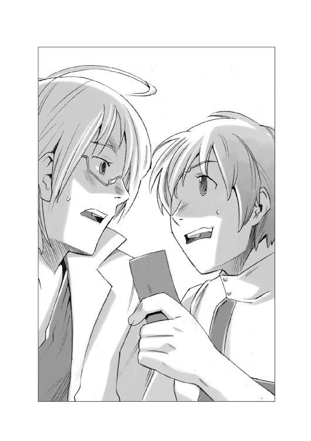
ハヤトは、手に持っていた宝くじを机の上に投げ出すように置くと、叫ぶように言った。
「ダメだ！ 怖くて持ってられねえ！」
そして、大きく深呼吸をしてから、自分の中に湧き上がってきた恐怖にも似た感情を吹き飛ばすように両手のこぶしを握って大声で叫んだ。
「うぉおおお！ ちくしょー！ ざまあみろ！ 俺たちは大金持ちだ！ 何だって買えるんだぞ！ もう閉店間際のスーパーで半額のシールが貼られた惣菜を買わなくてもいいんだ！ なあ、そうだよな、ハインツ！」
ハインツは笑いながらうなずいた。
「ああ、買える買える、スーパーごと買えるぞ！」
ハヤトは自分の髪の毛を両手でぐしゃぐしゃとかき回して言った。
「え？ あ、ああそうか、そうだよな、くそ！ わけわかんなくなってきた！ そんな大金、想像もできねえよ！ この目で見ることができれば納得できるかもしれないけど、無理だ！」
「すぐに拝めるさ、この当たりくじを帝国中央銀行の窓口に持っていけばいいだけのことだ......えーと手続きは、まず期限内に各星系に置かれた本店か支店に持参すること。受付は営業時間内。時間外の受付はしません。本人確認が必要です......」
モニターを見ながら、宝くじの換金手続きを読み上げていたハインツの言葉が急に途切れた。
「どうした？」
喉の奥に何か引っかかったような声でハインツが聞いた。
「おい、ハヤト......今日は何日だ？」
「え？ 今日？ 五月十五日だけど、それがどうかしたか？」
ゆっくり振り返ったハインツが、青ざめた顔で言った。
「引き換えの期限は......今日だ」
「なんだって！ おい、今何時だ！」
ハヤトとハインツは、汎用端末のモニターの隅っこにある経度標準時間の表示を見て同時に時間を読み上げた。
「......午後四時十二分」
「ハインツ！ 中央銀行の営業時間はいつまでだ？」
「確か......午後五時だ」
ハヤトとハインツは顔を見合わせた後でもう一度同時に叫んだ。
「間に合わねええええええ！」
どばいぃぃん！
音高くアパートのドアが開くのと同時に、転がり出すようにハヤトとハインツが飛び出してきた。
明るい日の光を見上げて、顔をしかめたハインツは、耳のところにあるスイッチを押してシェードスクリーンを目の前に広げると、玄関を振り返った。
ドアを出たところで、慌ててズボンのベルトを締めようとしているハヤトを見たハインツは小さく舌打ちをすると、怒鳴った。
「急げ！ 何やってんだ！ もたもたするな！」
「そんなこと言ったって、パンツ一丁で寝ていたんだから仕方ないだろうが！ まさかパンツ一丁で表通りまで走れって言うのかよ！」
「ああそうだ、二十二億の前に、そんなことは些細なことだ！ 急げ！ タクシーを拾うぞ！」
二人は、アパートの前の裏通りを真っ直ぐに南に向かって走り出した。
ドリンクのオートベンダーが置かれている小さな四つ角を右に曲がり、そのまま突き当たりに見える大通りに面したコンビニエンスストアの看板めがけて必死に走りながら、ハヤトが言った。
「表通りに出ても、タクシーが拾えなかったらどうする？」
全力疾走しながらハインツが、ぶんぶん、と音がするくらいの勢いで首を振った。
「いや、拾える！ 俺たちはツイているんだ！ 信じろ！」
そして、二人は表通りに飛び出して、通りの左右を見回した。
目の前の交差点に並ぶ信号待ちの車の列の中に、黄色いオートタクシーがあるのを見つけたのはハヤトだった。
「おい！ タクシーだ！」
「だから言っただろう、俺たちはツイているって！」
ハインツは勝ち誇ったように叫ぶと、そのままタクシーに向かって突進した。
十分後。
ハヤトとハインツの乗ったタクシーは、渋滞につかまって、時速十七キロくらいのスピードでゆっくりと進んでいた。
ハヤトは、半分あきらめたような声で言った。
「......やっぱりツイてないんだ、俺たちは」
「そんなことはない！ おい！ 運転手！ さっきから何度も言っただろう！ 俺たちは急いでいるんだ！ なんとかならないのか！」
ハインツは、運転席に座っているテクノドールと呼ばれるアンドロイドの運転手に食って掛かった。
しかし運転手は涼しい口調で答えるだけだった。
『お客さん、無理言わないで下さいよ、前の車も後の車もまったく同じ速度で動いてるでしょう？ この道路は今、都市総合交通管制システムのコントロールを受けているんですよ。いわばベルトコンベアーに載っているのと同じなんです。勝手に動かせないんですってば』
「隣の下り線はスピード出して走っているじゃないか！」
『そりゃあそうですよ、あっちは交通量が少ないから、フリー走行が可能なんですよ。こっちと違って交通管制プログラムが働いてないんです』
ハインツはしばらく黙ったまま下り線をじっと見つめていたが、やがて何かを決心したようにうなずくと、懐から三十センチくらいの長さのＴ字型の杖のような物と、そして手のひらサイズの汎用端末を取り出して運転手に話しかけた。
「運転手さん。ちょっと悪いけど......」
『はい、なんでしょう？』
運転手が愛想良く答えるのと、ハインツがその襟足にある外部端子のプラグキャップに、Ｔ字型の杖を突き立てるのは同時だった。
車内にジジッ！ という電流が流れる音がして、アンドロイドの皮膚に使われているソリュームシリコンが焦げる臭いが漂った。
『うわ！ なにをするんですか、お客様！』
「安心してくれ、君の人格や、機能には何もしない。ただ、この車のコントロール権をもらって、都市総合交通管制システムから抜けるだけのことさ」
『都市総合交通管制システムから抜けるって、そんな無茶な......って、うわ、本当に抜けた！ お客様！ 一体どうやったらそんなことができるんですか！』
ハインツは、運転手の襟足に突き立てたＴ字の小さな杖の握りの端から細いワイヤを引き出して手元の汎用端末に繫ぎながら答えた。
「俺の家は代々コンピュータ技術者でね、汎用端末の端子のプロテクトを外して、優先コードに割り込んで管理権を使うことのできるバリエーションコントロールプラグが代々伝わってるのさ、聞いたことがあるだろう？ 魔導師の杖ってアイテム」
『ま、魔導師の杖？ いや、そんな、まさか。そんなものはどのデータベースにも無いって公式に......』
「そう、公式には存在しないことになっているってわけさ......公式にはね。さあ運転は俺たちに任せてしばらく眠っていてもらう」
アンドロイドの運転手の首が、かくんと落ちたのを確認したハインツは、横で目を丸くしているハヤトの膝の上に、手のひらサイズの携帯汎用端末を、ぽん、と投げて言った。
「よっしゃ、これでこの車は、その端末で、自由に走らせることができるぞ。＋キーがアクセル、キーがブレーキ、矢印キーの左右がハンドルだ」
「それはいいけど、これで何をしろって......」
ハインツは、手を伸ばしていきなり右の矢印キーと＋キーを同時に押した。
オートタクシーは、ぐうん、と加速するとそのまま右にある中央分離帯をがりがりと乗り越えて下り車線に飛びこんだ。
「うわあ！」
「こっちなら自由に走れる、さあ行け！ アステロイドベルトで小惑星の間をすり抜けて空中戦するのに比べたら楽なもんだろう？」
その言葉が終わらないうちに、下り車線を逆走するタクシーの真正面に大型の貨物車がヒステリックなクラクションを鳴らしながらぐんぐん迫ってきた。
「うわっと！」
ハヤトが矢印キーでタクシーを揺らし、その貨物車の脇をギリギリですり抜けた。
風圧で激しく揺れる車体がオートバランサーで水平になるより早く、向こうから、今度は二台の乗用車がぴったり並んで迫ってきていた。
乗用車を運転している若い女が何かを叫んでいるのだろう、目を見開き、口を大きく開けた顔がぐんぐん迫ってくる。
「おっとっと！ とわ！ この！」
ハヤトはその二台の車の動きを見切って路側帯に逃げ、そこで停止してやりすごした。
二台の乗用車が鳴らす激しいクラクションの音が、ドップラー効果を起こして急激にトーンを下げて遠ざかっていく。
「ふう、なんとか生き延びた」
冷や汗をぬぐって、大きく息を吐いたハヤトを見て、ハインツが怪訝な顔になった。
「どうした？ ずいぶんと余裕が無いな。アステロイドベルトよりもすいてるし、速度も遅いのに......」
ハヤトは、あたりに鳴り響くクラクションに負けないように大声で言い返した。
「あっちは三次元に動けたけど、こっちは左右にしか動けないんだ！ オマケにこんな端末で運転しているんだぞ！」
「いささかハンデがあるのは仕方ない、それよりも急げ！ もう時間が無い！ ここであきらめるつもりか？」
「ちっくしょぉお！ 一攫千金も楽じゃねえってことかよ！」
ハヤトは、大きく息を吸うと、下腹に力を込めてテンキーの脇にある＋キーをぐい、と押し込んだ。
黄色いオートタクシーは、停まっていた路側帯から弾かれるように飛び出すと、そのまま対向車線に乗り入れ、猛スピードで対向車線を逆走し始めた。
この、とんでもない違反行為は、即座に交通監視局のモニターによって捉えられた。
メインコントロールルームで、見事なテクニックで対向車線を逆走していくタクシーを見た監視オペレーターは、一瞬自分が見ている光景を疑った。
『あんなことができるわけがない』というそのオペレーターの自我は、見ている映像を脳内で合理化しようとして、脳内の記憶からよく似た光景を引っ張り出してきた。
そのイメージは、産卵のために激流をさかのぼっていく魚の記録映像だった。
「......あ、鮭だ」
「え？」
隣のブースに座っている同僚が怪訝な顔をして振り返ったのを見て、オペレーターは我に返った。
「あ、いや、なんでもない。違反車両現認！ 中央環状路下り車線に逆走車あり！ 各パトロールは至急現場に向かえ！」
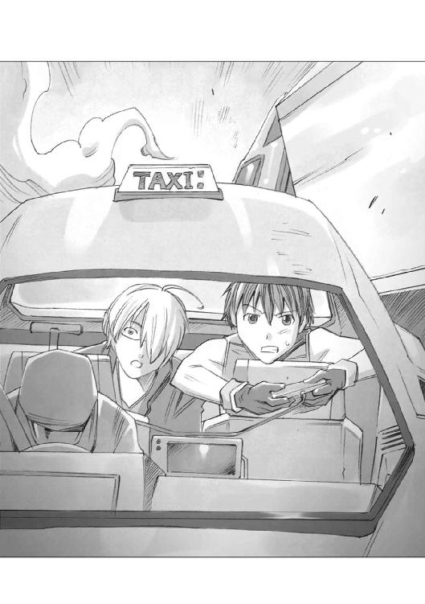
交通管制センターの連絡を受けたバグナウ市警察は、ハイウェイを警ら中のハイウェイパトロールカーたちに、直ちに現場に急行し逆走タクシーを確保するように指示を出した。
パトロールカーの勤務員たちは、モニター画面に映る映像とそのサブウィンドウに映るＧＰＳ映像から、ハヤトたちが乗る逆走タクシーの位置をつかむと、コンソールにある緊急走行ボタンを押した。
バグナウ中央高速道路で巡回中だった十五台のハイウェイパトロールカーは、一斉に緊急サイレンを鳴らし、赤と青の閃光灯を点滅させて逆走タクシーの追跡を開始した。
バグナウ市警察本部の交通機動隊現場指揮官であるイトモ警部は、一回り大きなミニバンサイズの指揮用車の後部座席に設けられた総合指揮端末の前に座って、低軌道衛星から映し出される逆走タクシーの映像を見ていた。
猛スピードで流れてくる車をすり抜けて走っていくタクシーを見て、イトモ警部は、思わず感嘆のため息をもらした。
「ううむ、すごいドライビングテクニックだ......それにしても、あれを運転しているヤツはオートタクシーのシステムをどうやってハックしたんだ？ 犯人の顔はわかるか？」
情報処理オペレーターの女性型テクノドールがリンク先を確認して答えた。
『タクシー会社のコントロールモニター回線は切断されておりますが、切断される寸前の車内映像と、ロードサイドカメラが走行中の車内を撮影した映像が取れました。現在人定事項を照会するために、個人情報公開に関する電子令状を請求中です。許諾が取れ次第照会を開始します......被疑者映像......出ます』
コントロールモニターのサブウィンドウに、タクシーに乗っているハヤトとハインツの映像と、後部座席から身を乗り出して、小さな汎用端末を操るハヤトの映像が並んで表示された。
「何だありゃ？ あの黒髪の若僧が持っている、ゲームコントローラーみたいなものは何なんだ？」
怪訝な顔をするイトモ警部にテクノドールが答えた。
『携帯用の汎用端末だと思われます......被疑者は、何らかの方法でオートタクシーのコントロールをドライバーから奪い、都市総合交通管制システムのリンクを抜け、あの汎用携帯端末でタクシーをコントロールしているものと思われます』
「携帯で車を運転して、高速道路を逆走しているのか！」
目を見開いたイトモ警部は内心で舌を巻いていた。
......めちゃくちゃな状態で運転していながら、いまだに接触事故すら起こさないってのは、普通じゃない。確かに危険性は高いが、良く訓練されたサーカスのアクロバットを見ているような気分だ。
......こいつは、下手に追い掛け回すより、距離を置いて追尾して、どこかでハイウェイを外れたところを押さえた方が、かえって事故にならないかもしれないな。
イトモ警部は、インカムを通じて、急行中の各パトカーに向かって指示を出した。
「現地指揮官から各車！」
通信司令室のオペレーターが裁量通話でその呼びかけを拾った。
『現地指揮官どうぞ』
イトモ警部はその指示に従って各車に向けてインカムを使って呼びかけた。
「逆走車は、現在四号下り線を中央環状線に向かって逆走中なるも、事故発生の報告は無し！各車は危険性を考慮し、距離をとって追尾、対向して向かっている車両は無理な停止を求める等、他車の事故を誘発する恐れのある行動は控え、状況を一報されたい！」
『了解！』
十五台のパトカーは、それぞれに答えると、逆走を続けるハヤトたちの乗ったタクシーの周辺を少し距離を置いて包囲するようにして追尾し始めた。
そのとき、イトモ警部に隊内系通信チャンネルで通信が入った。
通信の相手は、バグナウ市警察本部の本部長だった。
本部長は、通信が繫がるなりわめいた。
『何をやっている！ あの暴走車両をさっさと捕まえろ！ 苦情の電話が殺到しているんだぞ！』
「そうは申されましても、非常に危険な状況でして......下手に非常停止措置を取りますと、かえって事故を誘発する恐れがあると判断しました。逆走車が事故を起こすのではなく追尾するこちら側と、一般市民とがです。一般市民の運転する地上車には、運転者よりも事故回避プログラムが優先されますが、パトカーは運転者の操作が優先されます。ミスを犯す可能性は人間の方が大きいのです！」
市警本部長は納得しなかった。
『では、あの暴走車を野放しにするつもりか！ 市民から苦情を受けるのはわしなのだぞ！』
「市民は苦情を言うのが仕事ですよ。なぜなら理由や、状況を知らないんですから！ 目の前に見えることだけで文句を言うんです！ 苦情の内容を聞いて、どう対処するか、それが大事なんです！ 目の前のことだけ処理すればそれでいいってわけにはいかないんです！」
『我々は市民のために動いているのだ！ 市民の言うことを聞くのは当然だ！ あの暴走車両を今すぐ止めろ！』
「そんなことをしたら大事故になります！ この今までの状況を見て、お分かりになりませんか？」
市警本部長は、怒り心頭に発するという顔で言い放った。
『貴様は、平民上がりの分際で、エルキュール侯爵家につながるこの私のやることにいちいちさからう男だったが......いかに度量の大きなこの私でももはやかんべんならん！ わかった！ やる気がないのなら、貴様の指揮権を剝奪し私が代行する！ オペレーター！ たった今からこの事件に関してはわしの直轄事案とする！ 上位権限者命令だ！ いいな！』
テクノドールのオペレーターは、無感情な声で答えた。
『地方公務員法第二十条第三項、警察法第十一条第一項、職務執行法第七条、バグナウ市条例第十二条、非常時における警察官の指揮に関する規則の規定により、本件を非常事案とみなし、上位権限者に捜査権及び指揮権を移行します。市警本部長は以後、バグナウ市警察本部の警察官に対し、直接指揮命令を加えることが可能です』
イトモ警部は、隊内通信系のモニターに映る市警本部長を見据えて言った。
「どうなっても知りませんよ、私は制止しました。その事実は記録しておいてください」
『貴様の指示は受けん！ さっさとコンソールのアクティブ回路を切って、黙ってそこから立ち去れ！ 貴様は休職だ！』
イトモ警部は無言のまま隊内系の接続を切った。そして個人の携帯端末を取り上げると、道路管理局を呼び出した。
「ああ、俺だけど......権限剝奪されたんで、これは一介の市民からの連絡だってことにしておいてくれ......レッカー車と救急車の手配をやっておいたほうがいいぞ、市警本部長はあの逆走タクシーを強制力をもって止めろと命令を出すらしい」
端末の中に映った道路管理局の課長は目を見開いた。
『そんなことをやれば、大事故になるぞ！ 一般車両同士は衝突しないが、パトカー同士は衝突する可能性が大だ！』
「ああ、説明したんだけどな......まあ迷惑をかけると思うが、頼むよ」
イトモはそう言うと、携帯端末を切った。
直接指揮権を発動した市警本部長は、ハイウェイパトロールの全車だけではなく、一般のシティパトロールのパトカーにも、ハイウェイに乗って、暴走車を追尾し、停止させるように指示を出した。
バグナウ市内に配置されていた四十台のうちの半分の二十台のパトカーが一斉にサイレンを鳴らし、ハイウェイに殺到した。
ハヤトとハインツの二人を乗せたオートタクシーは、ヒステリックなクラクションと、そしてパトロールカーのサイレンの音が入り混じった、とんでもない騒音を後に引きずりながらバグナウの街の中心部を通るハイウェイを、猛スピードで市街地の中心部へと突き進み始めた。
「なんか、さっきから追っかけて来ているパトカーの台数が増えていないか？」
バックモニターを見上げたハヤトに、ハインツが叫んだ。
「いいから後ろなんか気にするな！ 前をしっかり見て運転しろ！ そろそろ左から三号線が合流だぞ！」
「あ、ああ、わかった！」
ハヤトはコントローラーを動かし、前方から来る車をひょいひょい避けながら、タクシーを支線からもう一つの支線に入れた。
ハヤトの後方を追いかけていた三台のパトカーは、その後ろを追いかける形で、合流車線に入った。
次の瞬間左から合流する形で突っ込んできた二台の別のパトカーと、その三台は激しく衝突した。
シティパトロール用のパトカーとハイウェイパトロール用のパトカーとは通信チャンネルが違い、互いの位置を表示するトランスポンダーの周波数も違うため、両方とも相手の位置に気がついていなかったのである。
警察無線に緊急通報が飛び交った。
『至急至急！ 逃走車両は、巧みに包囲追尾をかいくぐり、追尾車両同士を衝突させて、逃走を継続中！ 現在十二号分岐点で五台のＰＣが大破停止中！ 他の追尾対向車両は特段の留意をせよ！』
「なんだと？ 五台のパトカーが大破だと？ おのれ、ただでさえ予算が少ないというのに！」
市警本部長は、無線をつかむと通信に割り込んだ。
『諸君！ 私は市警本部長である！ あの車両は五台ものパトカーを破壊して逃走した！ だが！ 怯むな！ 市民を守るために戦え！ あの凶悪犯を逃がしてはならない！』
本当のことを言えば、ハヤトたちは何もしてない。パトカー同士が勝手にぶつかって壊れただけのことである。しかし、この無線を聞いた他のパトカー乗務員は、ハヤトたちが故意に破壊したと受け取った。
......仲間の仇を取る！
敵愾心に燃えた他のパトカーは、さらに追尾の速度を上げた。
やがて、ハヤトの操るタクシーは、バグナウ市の中心部に続く中央環状線へと入って来た。
中央環状線の合流点には、ハイウェイパトロールの十二台のパトカーが、車線を塞ぐ形で、停止し、ハヤトの車を待ち受けていた。
そこに、二十台近いシティパトロールのパトカーを引き連れたハヤトのタクシーが突っ込んできた。
ハヤトの目は、並んだ十二台のパトカーの隙間の中に一箇所だけ他よりも若干広い隙間があり、そしてその手前に中央分離帯のエンドがあるのを見切っていた。
......あそこに当てれば！
ハヤトは携帯端末のボタンをぐい、と押した。
タクシーは中央分離帯のエンドに突っ込んでいくと、そこに左前部を当てて、その場でふわっと右に傾いた。
「今だ！ いっけぇええ！」
ハヤトの声と共に、タクシーは車体を斜めに傾かせたままわずかに広いパトカーの隙間に突っ込んで行き、そして、見事にそこをすり抜けた。
「うわ！」
「なんてヤツだ！」
ハイウェイパトロールの隊員が、すり抜けていったタクシーを見送ったとき、同僚が叫んだ。
「うわ！ 馬鹿！ 来るな！」
「え？」
あわてて振り返った隊員が見たものは。
閃光灯を輝かせて、猛スピードで突っ込んでくる、シティパトロールのパトカーの群れだった。
ハイウェイに衝撃音と、物が破壊され金属がひしゃげるなんとも言いようの無い大音響が続けざまに響いた。
音が収まると、そこに三十台のパトカーが積みあがった小さなピラミッドが出来上がっていた。
その光景を見ていた市警本部長はその場にへたりこんだ。
「......三十台のパトカーが一瞬にして全滅だと？ あいつは一体何者だ？ 化け物か？」
タクシーの中では自分たちを追いかけてきたパトカーが姿を消したのに気がついた、ハヤトが首を傾げていた。
「どうしたんだろう？ あきらめたのかな？」
「さあな、まあとにかく急げ！ あと七分を切った！」
やがて、高架のハイウェイが高層ビルが建ち並ぶ中にさしかかったとき、ハインツが叫んだ。
「見えたぞ！ 中央銀行だ！」
正面に、青いミラーコーティングされた窓で囲まれた円柱のような高層ビルが建っていた。
汎用端末のキーで必死にタクシーを操りながらハヤトが聞いた。
「今、何時だ！」
「四時......五十五分だ！ 何とか行けるか？」
ハヤトは首を振った。
「だめだ、ランプウェイまで回っていたら絶対に間に合わない！ いいか、しっかりつかまっていろ！」
「どうするつもりだ？」
「中央銀行は正面だ！ このまま突っ込む！」
そう言うと、ハヤトは手に持っていた汎用端末の＋キーを力いっぱい押した。
その頃、帝国中央銀行エンデバー星系本店の正面玄関の奥にある受付ロビーには、閉業時間を告げる蛍の光の曲が流れ始めていた。
一人の初老に差し掛かった男が、感慨深げに客の姿もほとんど無いロビーを見回していた。彼は、この帝国中央銀行エンデバー星系本店の出納係長だった。
......今日も無事に仕事が終わった。
仕事というものは、なんと言っても休まず遅れず争わず、だ。
この銀行に勤めて三十三年。何一つトラブルに巻き込まれること無く生きて来られたことを感謝すべきだな。
職場には、私のことを万年係長と馬鹿にする者もいるが、なに、構うものか。波風立てずに穏便に穏便にと生きることが一番大事なのだ。
出納係長が、満足げに小さくため息をついたとき。
どんがらがっしゃーん！
大音響と共に三十三年間ぶんのトラブルが明かり取りの天窓をぶち破って降ってきた。帝国中央銀行の受付ロビーに、悲鳴とガラスの割れる破壊音とそしてけたたましい警報装置の音が響き渡った。
天井に這わせた配管が破壊されたのだろう、ロビーの中にスプリンクラーの白い消火液の泡が雪のように降り注ぎ始めた。
事務室の真ん中にひっくり返った黄色いタクシーのドアをけり破って車内から出て来たのは、長い金髪を持ちサングラスを掛けた背の高い男と、童顔の黒髪の男の二人組だった。
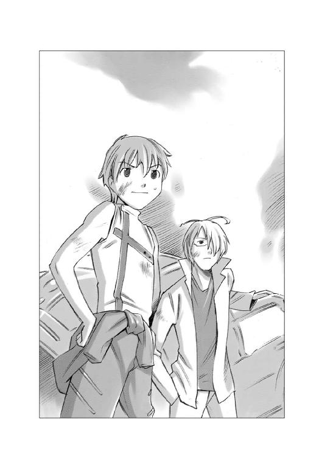
金髪の男は、あたりを見回した後で、目の前の机にある受付端末に目をつけた。
そして机の上で気絶している出納係長の身体を押しやると、呆然としている銀行の女子職員の目の前で、どこか優雅にも見える手つきで胸ポケットからカードのようなものを取り出し、机の上の受付端末のスリットに差し込み、認証パッドに右手の人差し指を押し付けた。
受付端末が、小さく「ぽーん」と受付完了を意味する電子音を立てたのと、ロビーになだれ込んできたガードマンと警察の制服を着た数十名の混合部隊がショックガンを構えるのはほぼ同時だった。
警察官の一人が叫んだ。
「手を上げろ！ お前らは何者だ！」
長い金髪の若い男は、悠然と振り向くと、胸を張って言い放った。
「高額預金者様だ！」
気がつくと、ハヤトの目の前に無数の赤い光点が瞬いていた。
『......この赤いのは......何だ？』
ハヤトの心の中にいた、もう一人のハヤトが答えた。
『あれは機動戦闘艇の警告灯の光に決まっているじゃないか、何を寝ぼけているんだ？』
『......機動戦闘艇？ だって、戦争はもう終わったはずだ......』
『終わってなんかいるもんか！ 見ろ！ コックピットの外を！』
激しい衝撃と共にハヤトの視界の右半分が閃光で白く埋め尽くされ、熱気が襲い掛かってきた。
その白い輝きは、至近ビームの有害な電磁波と熱を反射するために、透明なキャノピーの中に挟み込まれた減衰用液晶が白く変色したものだった。
しかし、ハヤトがそれを理解するより早く、ビームの余波を受けた機動戦闘艇の機体は、バットがかすったボールのようにあらぬ方向にはじき飛ばされ、完全にコントロール不能の状態に陥った。
「うわああああ！」
「わめくな！ 今なんとかする！ つかまってろ！」
後部のナビゲーター席に座ったハインツの悲鳴に向かって怒鳴り返したハヤトは、すばやく操縦スティックのトリムタブを動かしながら、残り少ないブースト用固体燃料を燃焼室に叩き込んでカウンター噴射をかけた。
「この！ くっそおおおお！ 言うことを聞きやがれ！」
暴れまわる機体のコントロールを、やっとのことで取り戻したハヤトは、肩で息をしながら後部座席のハインツに聞いた。
「機体のコントロールを取り戻した！ 追撃してきた敵機はどうなった？」
「引き返していく！ 今の対艦ビームの一撃が最後だったみたいだな、このまま戦場を離脱するぞ！」
「わかった！」
ハヤトは大きく息を吐いて肩の力を抜いた。
気がつくと、操縦用のスティックを握った手袋が、じっとりと湿っていた。
......パイロットスーツの手袋は汗を吸収する生体素材で作られている。俺は、その素材でさえ吸収しきれないほどの汗をかいていたんだな。
ハヤトの脳裏に、ほんの三十秒前の記憶がよみがえった。
母艦から飛び出すのと同時にハヤトたちは待ち構えていた敵のど真ん中に飛び込んでいた。視界とモニターを埋め尽くすほどのローデス軍の機動戦闘艇の群れから発射される猛烈な防御砲火のビームの網の中で、仲間たちは次々に光の球体に変じていった。
どこをどうやって飛び、そして戦ったのか、それすら覚えてはいなかった。
覚えているのは回避運動の最中に鳴り続ける後方警戒センサーの警告音と、視界の中を飛び回るビームの閃光だけだった。
何発食らったのかわからなかった、何発撃ったのかもわからなかった。わかっていることは、自分が生き延びたということだけだった。
同じ戦闘隊の仲間はどうなったんだろう？ この作戦は失敗したんだろうか？
ハヤトは頭の片隅でそんなことを思いながら目の前のバイザーディスプレイに投映されている警告メッセージを読んだ。
『機体制御装置機能低下......主推進剤タンク破損......補助動力装置機能停止......生命維持装置機能低下』
......ひでえな、気密が保たれていることが奇跡だ。
ハヤトが、絶望的なため息をつこうとしたそのとき、後ろのナビゲーター席に座っているハインツの声がインカムに響いた。
「いやあ、ものすごい警告メッセージの数だな、まるでクリスマスツリーだ。おい、ハヤト。お前、このメッセージの意味全部わかるか？」
「わかるわけないじゃないか、俺は、このボロボロになった機体を操縦するだけで精一杯なんだ！ 情報処理はお前の役目だろうが！」
「確かに......いやね、この情報をお前も読み取れたら話が早いと思ったんだ」
その、いつもの無責任な口調の奥にある真剣さをハヤトは嗅ぎ取った。
「どういう意味だ？」
「このメッセージが告げることを総括的に、つまり一言で表すとこうなるんだ......」
ハインツはそこで言葉を切ってから、ゆっくりと言った。
「あ・き・ら・め・ろ」
ハヤトは一瞬、息を吞んだ後で叫んだ。
「あきらめてたまるか！ 馬鹿野郎！ なんとかしろ！ せっかく生き延びたんだぞ！」
「あきらめちまった方が楽なんだがな......機体はボロボロ、こっちのレーダーを見る限り、周囲に味方は一機も残っていない。トランスポンダーの反応を見ると、どうやら母艦も沈んじまったようだ......」
「......マジかよ......全員死んじまったって？......母艦もって......俺たち、どこに帰ればいいんだよ......？」
「帰るところなんかあるもんか、この桃星空域の八割以上がローデスの支配下だ......どこに行っても敵ばかりだ」
「ふざけんなぁぁぁっ！」
ハヤトは思わず本気で怒鳴った。
「他人事みたいなこと言ってんじゃねぇええ！ こんなところで死んでたまるか！ なんでここであきらめなきゃならないんだ、この馬鹿野郎！ 俺は本気で戦って本気で生き延びたんだ！ お前も本気を出せ！ なんとかして生きて還る方法を見つけ出せ！ それがお前の仕事だろうが！」
ハインツはしばらく無言だった。
そして、一分ほど過ぎた頃、ハインツが小さくため息をついたあとで、ぽつりと答えた。
「......お前の言うとおりかもしれないな」
「何がだよ」
「生きて還る方法さ......そいつをなんとかして探し出すのが俺の仕事だってことよ......」
「なんとかなるのか？」
ハインツは、半分やけくそじみた明るさに満ちた声で言った。
「ああ、考えてみろ、今までどんなときだって、俺たちは、なんとかなってきたんだ......お前は俺の言うとおりに飛べばいい、いつもと同じだ。針路と速度を指示するから俺の言うとおりに飛んでくれ」
ハヤトは、大きく息を吸って、下腹に力を入れながら答えた。
「よし、わかった！ 命預けた！」
......俺は、あのときハインツを信じることに決めた。でも、口でそう言っておきながら、その実、心の中は不安で一杯だった。
......本当に俺たちは生きて還れるのかな？
ハヤトの心の声にもう一人のハヤトが答えた。
『ああ、お前たちは助かる。このあと四日に及ぶ漂流の後、偶然味方の哨戒艇に発見されるのさ......』
『......なんでお前にそんなことがわかるんだ？』
『そりゃそうさ、だって、これは全部お前の記憶の中の出来事じゃないか......』
『......え？ それって......』
自問自答の繰り返しが、ハヤトの意識をゆっくりと覚醒に導き始めた。
そうか......これは......夢か。
俺は夢を見ていたんだ。
......俺たちの初陣だった、あのバーヤ会戦で、帝国軍は黒歴史となるほどの惨敗を喫した。帝国上層部はその事実を隠匿するために、生き残った兵士をかき集めて、そのまま最前線に再投入した。
......俺たちが配属された一○九戦闘部隊というのは、そういう部隊だった。
ハヤトは、目を閉じたまま、その戦闘部隊で過ごした五年の歳月を思った。
俺たちには、帰省も休暇も許されなかった。生き残った兵士の口から、帝国軍敗北の事実が漏れることを恐れた帝国軍は、俺たちが戦場という名前の石臼の中で、すり潰されることを望んだんだ。
......生き延びてやる、なんとしてでも......それが、俺とハインツの合言葉だった。
ハヤトが、毛布の中で、五年間の戦争の記憶を反芻していたそのとき。
寝ている部屋のドアを誰かがノックする音が鼓膜に届いた。
目を開けたハヤトの視界に飛び込んできたのは、まばゆいほどに光り輝く結晶体だった。
......え？ あ、あれ？
目をこすって、もう一度目を見開いたハヤトは、その結晶体は、自分が見上げている天井から下がっているシャンデリアだということに気がついた。
なんで、こんなものが俺の頭の上にあるんだ？
ハヤトが、あわてて上半身を起こしたとき、再びドアをノックする音と共にハインツの声がした。
「おい、ハヤト！ いつまで寝ているんだ！ 起きろ！ 今日は裁判所に出頭する日だぞ！」
......え？ 裁判所？
その言葉を聞いたとたん、ハヤトの意識が完全に覚醒した。
......そうだ、ここは一流ホテルのスペシャルルームとやらだ。
帝国中央銀行の連中は、最初、俺たちを犯罪者のように扱いやがった。でも、俺たちが本当に総額二十二億クレジットという途方もない宝くじを当てたんだという事を知ると、急に手のひらを返しやがった。
警察に連れて行かれて取調べを受けたのだが、銀行が手を回したのだろう、その日のうちに俺たちは釈放された。そして、俺たちは、そのままこの部屋に連れてこられた。
アパートではセキュリティ上の問題があるから、ここに住むように、と言われて一週間。
この一週間は何が何だかわからないドタバタ騒ぎの連続だった。
管財人の選出だとか、一時所得に関する届出だとか、そういった手続きも大変だったが、ネットニュースを始めとする各種マスコミで報道されたとたん、俺たちのところに、わけのわからないメールと来客が殺到した。
生き別れの兄弟、腹違いの妹に弟、聞いたこともない「自称」親戚。
借りた覚えもない金融会社から借金返済を求める督促状。買った覚えもない車や洋服の請求書。身に覚えのない子供の養育費の請求。すごい発明があるから投資しませんか？ 主人がオオアリクイに殺されて生活に困っています......。
そういった、およそ人間が思いつくであろう、ありとあらゆる理由をつけた金を無心するメールと来客の大波のほとんどは、銀行が紹介してくれた弁護士と管財人が食い止めてくれていたが、俺たち二人は、このホテルから一歩も出ることができなかったのだ。
......やっと外出できると思うと、たとえそこが裁判所でも、ちょっと嬉しい気分だな。
ハヤトがそんなことを考えていると、再びドアの向こうでハインツの声がした。
「法廷での打ち合わせをやっておきたいからな、入るぞ、いいか？」
「ああ、いいぞ、ドアロックはしてない」
寝室に入ってきたハインツは、床に敷かれたマットの上に立っているハヤトを見て目を丸くした。
「......お前、床に寝ていたのか？ ダブルサイズのベッドが二つもあるベッドルームなのに意味ないじゃないか」
ハヤトは不満げに唇を尖らせて答えた。
「だって、軟らかすぎて眠れないんだよ、このベッド。底なし沼で溺れる夢とか、巨大なアリ地獄の巣に落ちるとか、そんな悪夢ばかり見るんだ」
「......お互いセレブな環境とは無縁な人生を送って来たからなあ、まあ無理も無いか」
ハインツはそう言って小さく肩をすくめてから言葉を続けた。
「それはそうと、今日はいよいよこのホテルの外に出なくちゃならん。マスコミと野次馬に追いかけられるのは覚悟しておいた方がいい」
ハインツは持っていた汎用端末を開いてキーを押した。
ぽーん！ という柔らかい電子音と共にベッドルームの壁面に組み込まれた汎用マルチスクリーンが作動し、そこにネットニュースチャンネルの画面が映し出された。
スクリーンに映し出されたのは、ダークグレイの御影石のような建材で建てられた大きな鳥が翼を広げたようなデザインの横幅の広い中層ビルの周囲を、何百人もの人々が取り巻いている映像だった。
やがてカメラが切り替わり、群衆の最前線にいた薄水色のスーツを着たレポーターらしき女性を映し出した。
「えー私は今、バグナウ地方裁判所の前に来ています。ここエンデバー星系では、裁判の一部始終はネットの中にある裁判傍聴用の専用のチャンネルで公開されておりまして、納税者番号を入力すれば、誰でもそのチャンネルにリンクして、裁判を傍聴することができるため、よほど世間から注目を浴びた大事件でなければニュースでライブ中継は行われませんし、このように裁判を傍聴しようとする人はおりません。
つまり、今回のラッキーボーイ事件は、世間の注目を浴びるに足りる大事件ということになるのでしょう」
ニュースレポーターは、そこで言葉を区切ると、右手で裁判所の建物を示した。
「この事件は、無一文同然の二人の元兵士が、一夜にして巨額の当籤金を手に入れた。というシンデレラストーリーに端を発し、タイムリミットに間に合わせるために高速道路を逆走して都市機能を大混乱に陥れ、その二人が逮捕され起訴される、というドラマチックな展開が続いている事件でして、本日ここでその判決が言い渡されます。有罪か無罪か、果たして陪審員の方々はどのような評決を下すのでしょうか、注目の裁判が今、始まろうとしています！」
ハヤトは、小さく舌打ちをすると、スクリーンに向けて手を振った。
室内をモニターしていた電子人格が、その身振りを否定と判断したのだろう、スクリーンの中身が、どこかの美しい砂浜の環境映像に切り替わった。
「......ったく！ どいつもこいつも面白おかしく取り上げやがって！ 無責任にもほどがある！」
怒るハヤトをなだめるようにハインツが言った。
「まあ、そう怒るな。野次馬ってのは無責任に決まってる。責任感あふれる野次馬なんかいるもんか」
「でもよ、公認ブックメーカーチャンネルじゃあ、俺たちが有罪となるか無罪となるか面白がって賭け金を募集する番組作って流していやがるし、芸能チャンネルは俺たちが、何を食って何を飲んだ、ってことまで事細かに追いかけ回すし、これじゃあまるで犯罪者じゃないか！」
そう言った後でハヤトは、自分の言葉に気がついたようにしゅんとなった。
「......あ、いや。実際のところ犯罪者なんだけどな」
ハインツは、ちょっと真面目な顔になって言った。
「正確に言えば被告人だな。俺たち二人が宝くじの当籤金払い戻し期限切れのタイムリミットに間に合わせるためにやってのけた一連の犯罪......タクシー運転手に対する電子人格人権擁護法及び道路交通法違反、中央銀行に対する器物損壊、騒乱防止法及び市条例違反、などなど十数項目に及ぶ法令違反に関して俺たちは訴えられているわけだからな」
「......最悪の場合俺たちは刑務所送りってわけか？」
不安そうに聞いたハヤトに向かって、ハインツは首を振って見せた。
「いや、罪状だけ見ていると俺たちは極悪人のように見える......実際のところ銀行の建物を派手にぶっ壊したのは事実だ。でも、俺たちはお前の神業の運転のおかげで、道路上では一件も事故を起こしていない。大騒ぎの原因は、俺たちを追いかけようとして物損事故を起こした市警察のパトカーたちにあるわけで、その件については市警察本部長が認めて謝罪している。
怪我人も死人もひとりも出していないから、世の中の連中は喜び勇んで無責任なお祭り騒ぎをやれるんだ」
「本当か？ 安心していたら裁判所からそのまま刑務所に直行っていうんじゃ目も当てられないぞ」
今ひとつ不安をぬぐいきれないハヤトを見て、ハインツは二歳年上の余裕を見せてうなずいた。
「安心しろ。俺たちは、どんな絶体絶命のときにも何とか切り抜けてきたじゃないか、今度だって切り抜けられる！ 弁護士の先生がリビングで待っている。早く着替えろ」
「あ、ああ、わかった、すぐに着替える！」
ハヤトはそう言うと、あわててクローゼットの前に立って扉をあけた。
その扉の奥には壁面が鏡張りになった八メートル四方もありそうな巨大な空間があった。
「ええと、やっぱり裁判所に行くなら、それなりの格好をしなくちゃまずいよな......」
どこかのトレーニングスタジオと間違いそうな、がらんとしたクローゼットの隅っこの方に、ちょこんと下がっているシャツとズボンの中から、フォーマルデザインのスーツを取り出すハヤトを見て、ハインツはにやっと笑った。
「この部屋に泊まるような大金持ちは、このクローゼットを目の玉が飛び出すような高い服で埋め尽くさなくちゃいけないみたいだぜ」
白いワイシャツを広げながら、ハヤトは首を振った。
「そんなこと言われてもなあ、俺は服とかにあんまり興味ないしなあ......それに、なんでだろう？ 大金持ちになったって実感が、さっぱり湧かないや」
「そりゃあそうさ。金を使う機会が無かったんだから実感も湧かないさ。弁護士の先生からも裁判で陪審員の心証が悪くなるから馬鹿な使い方はするなって言われているしな。
実際、二十二億の当籤金は弁償金と慰謝料と弁護士費用以外には使ってない......」
ハインツはそこで言葉を切ると、ハヤトの前に回ってその顔をのぞきこんでにやっと笑った。
「......だけどよ、安心しろよ、裁判が終わったら金は自由に使える......何でも買えるし何でもやれるぞ！ 女の子にも当然モテモテだ。一生食うに困らないどころか、一生遊んで暮らせるんだぜ？ しかも、すげえ贅沢三昧の暮らしだぜ？」
ハヤトは締め慣れないネクタイと格闘しながら答えた。
「そりゃあ贅沢はしてみたいよ、払い下げの保存戦闘食料パックや、閉店間際のスーパーで半額になったコロッケなんかより美味いもの食いたいし、女の子とだって遊びたいし、カッコイイ車とか乗れたら面白いんだろうな......でも......そんな風に金を使って遊んでも、俺はそんなに楽しくないような気がするんだ」
ハインツは怪訝な顔になった。
「なんでだ？ 好きなもの買って美味いもの食って、カッコイイ車にきれいな女の子乗っけて、働かないで毎日遊びまくる......ってのは、全世界の男の共通の夢だと思うぞ」
「そりゃそうだ。俺だってやってみたいさ......でもな、そうやってバカ騒ぎやって楽しんでいても、俺は心のどっかで、このバカ騒ぎを、あの一○九戦闘部隊の連中と一緒にやりたかったな......って考えていると思うんだ」
ハヤトはネクタイを結んでいた手を止めると、クローゼットの壁面の鏡に映った自分の顔を見つめて、ぽつりと言った。
「......生きて還れなかった連中の分も楽しめばいい、それが死んでいった連中への供養だ。って考えればいいのかもしれない。でも、俺がそんな風に割り切って考えられるようになるには、もっと時間が必要な気がする......だって、考えてみれば、あれからまだ三ヶ月ちょっとしか経っていないんだ。戦場の兵士が一夜明けたら停戦だ、って言われていきなり平和な民間人にされて、また一夜明けたら、今度は大金持ち......はっきり言ってついていけないよ......」
ハインツは小さくうなずいた後で、ハヤトの肩をぽん、と叩いてクローゼットを出ながら言った。
「お前の言いたいことはよくわかった。まあ、金の使い道とかそういったことは、裁判が終わってからおいおい考えるとしようぜ。とにかく早いところ着替えてリビングに来い。先に行ってるぜ」
「あ、ハインツ、ちょっと見てくれよ。ネクタイ、これでいいかな？」
そう言って呼び止めたハヤトのネクタイはひん曲がっていた。
ハインツは肩をすくめて、やれやれ、という顔をしながら、ハヤトに近づくとそのネクタイの曲がりを直した。
「まあ、こんなところかな......」
「ありがとう、助かった」
見るからに純朴そうな笑いを浮かべるハヤトを見て、ハインツはもう一度、やれやれ、という風に肩をすくめた。
何十社というマスコミと、何百人という野次馬がとりまくバグナウ地方裁判所の第一小法廷はそんな外側の喧騒とは無縁の厳粛な空気と静けさに包まれていた。
弁護士と検察官双方の最終弁論が終わり、有罪か無罪か、その評決を行うために別室に入った陪審員たちが、再び法廷に戻って来たのだ。
傍聴人と証人、被告そして弁護人と検察官が見守る中で、法衣を着た裁判官が、ゆっくりと儀式めいた口調で十二人の陪審員に向かって聞いた。
「では、協議の結果をご報告願います......」
陪審員席に座っている十二人の中から、一人の初老の女性が立ち上がった。
それは、モラルに厳しいことで知られる社会評論家だった。
無軌道な行いをする若者や怠惰に流れる若者たちを叱る彼女の舌鋒は常に鋭く、陪審員の中に彼女がいることが知られたとたん、ブックメーカーの賭け金が一方に雪崩を打って流れたほどである。
白髪のその気の強そうな老婦人は、毅然とした態度で被告人席に立つハヤトとハインツをにらみつけた。
ハヤトは思わずひょいと首をすくめた。
......うわ、怖い婆さんだ。こりゃあ、もしかしたらダメかもしんない。
背筋を冷たい汗が下りて行くのがわかる。
老婦人は、そんなハヤトの想いなど気にも留めない様子で裁判官の方に視線を投げ、評決に関する意見書を読み上げ始めた。
「被告人ハヤト・フォーゲルスト・ナグモ。及び被告人ハインツ・クノール・キャンベルの両名は、自分の利益を優先するあまり、平然と法を破り私有財産を破壊しました......それは犯罪に問われてしかるべき行為であり、それは悪として糾弾するべきことです！
先ほど、弁護士の方は我々に向かって、彼らを罪人として罵り、彼らに向かって石を投げることができるのは、二十二億の大金が自分の手の中から消えてしまうと知った時......自分をその立場に置いた時、法を遵守することによって、その大金が消えるに任せることに従容と従うことのできる人間だけであり、この世にそんな人間はいない。つまり彼らの為したる行為は人間として当然のことであり、悪意はあったにせよ、それは反社会的な、いわゆる犯罪とは一線を画すべきものであると主張いたしました。
弁護人の主張は一見理があるように思えますが、ここは法廷でありすべては法によって裁かれるべきことであります。そしていついかなる場合でも、人には法を守ることが求められるわけであります！ 自己の利益を法益より優先することは決して許されるわけがないのであります！」
老婦人はそこで息を継ぐと、じろりと法廷の中を見回した。
ハヤトは絶望的な小さなため息をついて天井を仰いだ。
......そんな持って回った言い方しなくてもいいよ、婆さん。そんな生殺しみたいな言い方しないで、すぱっと言ってくれよ......有罪！ って......覚悟はできているからさ。
刑務所ってどんなところなんだろう？ 軍隊の懲罰に重営倉とか言うのがあるけど、あんなところなのかな......。
ハヤトの意識はすでに刑務所に飛んでいた。
そんなハヤトの感慨とは無縁に老婦人の演説は続いた。
「......しかし、残念なことに人間は、いまだその法に応えることができるほどに成熟しておりません。
彼らは罪を犯しました、しかし、彼らは誰一人傷つけてはおりません。破壊した物については損害をすべて弁済し、多額の慰謝料を払い示談が成立していることは、すでに弁護士の方の説明により明らかにされております。
私たち陪審員は、それらの補償行為と、彼らがローデスとの五年に及ぶ戦いの中で銀星勲章を四回も受章した歴戦の勇士でもあることを勘案し、本件審理のうち懲役を含む刑事罰に関する案件について無罪を宣告するものであります！」
傍聴席がどよめいた。
そのどよめきを聞いてハヤトは我に返った。
「え？ あれ？ どうしたんだ？」
きょろきょろあたりを見回すハヤトを見てハインツが笑いながら言った。
「どうしたもこうしたもあるか！ 刑法犯については無罪だ！ 俺たちは罰金を納めるだけで無罪放免だ！」
「うそ！」
「ウソついてどうする！」
驚き騒ぐハヤトとそして傍聴席の傍聴人を見て、裁判長は顔を上げて傍聴席を見回して言った。
「静粛に！ では、陪審員の評決に基づき、本件について判決を言い渡す。被告人二名は前に」
ハヤトとハインツが、ギクシャクとした足取りで前に出た。
裁判長は二人を見下ろすと、静かに言った。
「電子人格人権擁護法、及び騒乱防止法については無罪、併合する道路交通法違反については罰金百二十万クレジットとする」
ハヤトとハインツは互いの顔を見合わせた後で裁判長に向かって一礼した。
裁判長は小さくうなずいた後で微笑んだ。
「最後に、一言だけ君たちに言わせて欲しい......これは本件裁判とは関係の無い私の個人的な言葉だ......自由に使える大金を持つということは素晴らしいことであるのと同時に、さまざまな問題も背負い込むことになる。君たちはまだ若い、できることなら建設的な何かにその金を使い、道を誤らぬようにして欲しいものだ......いいね？」
ハヤトは、事態が良く飲み込めないまま、頭を下げた。
「はい......わかりました。もうしません」
「バカ！ 何を言っているんだ！」
ハインツがあわててハヤトの袖を引っ張った。
「え？ だって、道路交通法は有罪なんだろう？」
驚くハヤトを見て、裁判長は小さく声を上げて笑った。
「はは、確かにまたこんなことをやってもらっては困るな......もし次に宝くじに当たったときは、もう少し余裕を持って引き換えに行くことだ......ではこれにて閉廷とする！」
裁判所の前で待ち構えていたマスコミや野次馬を搔き分けて、やっとのことで迎えの車に乗り込んだハヤトとハインツは、そのまま一直線にホテルへと戻り、これまた待ち構えていたマスコミのカメラから逃れるために地下駐車場に入って、そこからダイレクトに最上階のスペシャルルームに戻った。
「ひでえなあ、まるで珍獣並みの扱いだ」
フォーマルスーツの上着を脱いでリビングのソファに身を投げたハヤトが、そうつぶやいたのを聞きつけたハインツが、笑いながら答えた。
「いや、珍獣並みじゃない、俺たちは珍獣なのさ。ラッキーボーイ、もしくはニワカナリキンという名前の......世間の連中は、この二匹の珍獣が、どんなことをやってくれるか興味津々なんだ......」
ハインツはリビングのワインセラーの中からシャンパンを、そしてサイドボードの中からグラスを二個取り出すと、ソファの前にあるサイドテーブルにそれを置いた。
「まあ、とにかく、こいつで乾杯だ。罰金刑で済んだことを喜ぼうぜ」
身を起こしたハヤトは、そのシャンパンを見て聞いた。
「俺はシャンパンの銘柄なんかわかんないけど......それ、一本いくらぐらいするんだ？」
ハインツは無造作にシャンパンのキャップを覆っている錫箔を引き裂き、栓を押さえている針金を解きながら答えた。
「さあ？ 値段なんか知らん。もう気にすることも無い。今日からは値段じゃなくて味だけを気にすればいい生活が待ってるんだ。口に合わなけりゃ捨てちまえばいいんだ」
「それはそうなんだけどな......」
「どうしたんだ？ 浮かない顔をして。刑務所に行かずに罰金だけで終わったんだ、もっと喜べよ」
ハヤトは、ソファに座り直し、白いフォーマルシャツの襟元を緩めてから大きくため息をついた。
「うん......裁判の件は確かに嬉しいけど......これから先のことを考えたら、どうにも気分が重いな。毎日あんな風にマスコミとか野次馬に追いかけられるのかと思うと、買い物にも行けやしない......」
「なに、気にするな。マスコミなんてのは、目新しいものしか追いかけない。別の事件が起きれば、そっちに行っちまうさ。昔は人のウワサも七十五日って言ったらしいけど、今はせいぜい二週間だな」
ハインツはそう言いながらサイドテーブルの上に置いた二つのシャンパングラスの中に白金色の泡立つ液体を注ぎ入れた。
「とりあえず乾杯だ、グラスを持て」
ハヤトは目の前に置かれたグラスを見て、そして背筋を伸ばすと、そのまま視線をハインツに移して真剣な目で言った。
「乾杯する前に、俺の考えを聞いてくれ......裁判が終わったとき、裁判長が言ったよな、この金を建設的なことに使って欲しいって。
俺はあの後ずっと考えていたんだ。これからどうすればいいのか、それを......」
そのハヤトの目を見たハインツは、小さく肩をすくめると、手に持ったグラスをテーブルに置いた。
「言ってみろ......もしかしたら、お前は俺と同じことを考えているのかもしれない......」
ハヤトは小さくうなずくと、ゆっくりと話しはじめた。
「このまま、ここにいて贅沢な暮らしを続けることはできる。でも、俺は晒し者にされるのはもうごめんだ。ここは、俺がいるべき場所じゃない。俺は宇宙に出たいんだ！」
「マスコミは宇宙にだって追いかけてくるぞ。それに宇宙に出て何をするつもりだ？ また雇われパイロットになってイカダ乗りに戻るとでも言うのか？」
ハヤトは両手を広げた。
「ああ、別にそれだっていい！ そっちの方が、ここで他人の目を意識して生きていくよりよっぽどいい！ こんな金、手に入れるんじゃなかったって思うよ」
ハヤトは暗い顔でサイドテーブルの上に置かれたシャンパングラスを見つめてつぶやいた。
「俺は宇宙に出たい。そりゃあ宇宙にだって悪人はいるし野次馬根性むき出しのマスコミも来るだろう。だけど......なんて言うのかな、あそこで暮らしている人は、地表に住んでいる人ほど無責任じゃないし傲慢じゃない。宇宙空間は呼吸する空気でさえ誰かの力が必要だ。宇宙での暮らしには緊張感がある......なあ、ハインツ。宇宙に戻らないか？」
顎の下に手を当ててハヤトの言葉を聞いていたハインツが、小さくうなずいた。
「ふむ......やっぱりお前の考えていたことは俺と同じだな。実を言うと、俺もこの金を遊びに使っちまうのは愚の骨頂だと思っていたんだ。まとまった金ってのは資本だ。そして資本は投資してこそ意味がある。では、何に投資すべきか......答えは一つ、俺とお前だ」
ハヤトは目を丸くした。
「俺に投資ってどういうことだ？ まさか俺に巨額の保険金を掛けるつもりじゃないだろうな？」
「ああ、そうか、その手があったか......」
「おい！」
「......ってのは冗談だ、安心しろ」
「目が笑ってなかったぞ」
不満げに唇を尖らせるハヤトをなだめるような笑いを浮かべてハインツが言った。
「まあ聞け。お前の機動戦闘艇パイロットの腕前と俺のナビゲーションの腕、この二つは他の誰にもひけは取らない。この帝国中を探したって、俺たちに勝てるヤツはいない。そうだろう？ だとしたら投資すべきは俺たちのこの才能を生かす仕事で、投下した資本の回収が見込める仕事ってことになるわけだ」
「もったいぶってないで、さっさと教えろ、前振りが長いのはお前の悪いクセだぞ」
ハインツは、ハヤトの目を正面から見て、ゆっくりと言った。
「宇宙船を買わないか？ 俺たちの船を」
「船？ イカダ乗りの作業船か？」
驚いたように目を見開いたハヤトに、ハインツは首を振って見せた。
「いや違う、もっと大きな......恒星間航行のできる宇宙船さ、そいつを買うんだ。ローデスと五年続いた戦争が終わって、戦時経済統制が撤廃され、このマガザン帝国の経済は戦災復興のために動き始めた。経済が動く時、一番必要とされるのは物流だ。製品を作る工場に原料を運ぶのも、そして出来上がった製品を市場に運ぶのも宇宙船が無けりゃ話にならない。
これから先のことを考えたら運送業を始めるのが一番いい」
「自己所有の宇宙船を持っている個人営業の運送業か！ すげえな！」
ハヤトは目を輝かせた後で、ふっと不安げに眉をひそめた。
「......でも、宇宙船っていくらぐらいするんだ？ 俺たちに買えるのか？」
「新造船はとても手が出ないが、中古船なら、なんとかギリギリで手が出せるはずだ......お前には言わなかったけど、実を言うと俺は宝くじに当たったときからずっと考えていたんだ。この金で宇宙船を買って宇宙に出よう！ ってな......」
「じゃあ、なんでお前は、カジノでバカ騒ぎしようぜとか、何でも好きなものが買えるんだぞ、とか無駄遣いをそそのかすようなことをずっと言っていたんだ？」
怪訝そうな顔をするハヤトを、ハインツは面白がるような目で見て言った。
「もし、お前がこの金を使って面白おかしく遊んで暮らしたい、って言い出しても俺にはそれに文句は言えないからさ。半分はお前の金なんだからな......一割の税金払って、諸費用払って、残った十八億あればなんとか船に手が届くかもしれないけど、この金を二人で折半しちまったら、絶対に船は買えない......だからさ」
ハヤトは、ちょっと考え込んだあとで、ハインツをにらみつけた。
「お前、俺のことを試してたのか！」
「まあね、だって船を買ったからって、運送業がうまく行くという保証は無いからな。大赤字出して倒産したら投資した金は無意味だ。そんなギャンブルみたいなものに金を使うより、今、手元にあるこの金を自由に使いたい放題使った方がいい、って考えもある。
こいつは、どっちが正しいとか間違ってるとか、そういったことじゃない、選択肢なんだ。十億という大金は、人の価値観を変える。お前が俺と同じ選択肢を選んでくれるかどうか不安だったのさ......怒ってるのか？」
「ああ、腹が立つさ、当たり前だ！ お前、もっとパイロットを信頼しろよな！ 俺はお前の選んだ選択肢を正解だと信じてきた、だから今日まで生き延びて来られたんだ！ いまさら宗旨替えをする気は無い！」
「悪かった、謝る......」
そう言って小さく頭を下げたあと、ハインツは、目の前のテーブルに置かれたシャンパングラスを手に取った。
「......と、いうわけで改めて乾杯しないか？ すっかりぬるくなっちまったし、気も抜けちまったけど、シャンパンはシャンパンだ」
「ああ、いいよ」
ハヤトは自分の前にあったもう一つのグラスを手に取った。
二人は目を合わせると、グラスを掲げて同時に言った。
「新しい人生に！」
シャンパンは、甘酸っぱく、そしてかすかな苦味を残して二人の喉を下りて行った。
二人が乗った定期便の宇宙船が、ベルナルト星系のジャンプステーションに到着したのは、それから三日ほど過ぎた日の昼下がりだった。
タンホイザーゲートを抜けて通常空間に出た宇宙船の窓から外を見ていたハヤトの目に飛び込んできたのは、惑星シャイダをぐるりと取り巻く衛星軌道上の大きなリングだった。
「へえ、水、酸素型の惑星で小惑星帯の円環を持ってるってのは珍しいな」
ビジネスシートに備え付けの汎用端末のモニター画面を覗き込んでいたハインツが、顔を上げて言った。
「よく見てみろ、あれは小惑星帯なんかじゃない。全部宇宙船やスペースコロニーの廃品だ」
ハインツの言うとおりだった、惑星の衛星軌道上をぐるりと取り巻いている輪を良く見るとその中に宇宙船らしいシルエットがいくつも見て取れた。
「あれ、全部宇宙船なのか！」
「ああ、そうだ。正確には、元・宇宙船だがな......古くなったり壊れたりして廃棄解体された宇宙船の残骸さ。このシャイダには宇宙船や宇宙空間建造物の解体専門業者が二百社以上あるんだ。だから別名ジャンクスターとも呼ばれているのさ」
「......確か、惑星シャイダって百年くらい前の帝星だったよな。なんで帝国の中心だった惑星なのに今はゴミ処理場みたいになっているんだ？」
不思議そうな顔をするハヤトを見たハインツは、目の前のモニターを指差した。
「興味があるなら、この惑星の詳しい歴史を呼び出そうか？」
「あ、いや、そこまでしなくてもいいや、なんとなく疑問に思っただけだから」
「じゃあ、俺が簡単に説明してやるよ。一言で言うならマガザン帝国の歴史は、皇帝の歴史であるのと同時に遷都の歴史でもあるんだな。
皇帝が代替わりすることにより国家の組織が刷新されるように、帝国は古くなった帝星を古着のように脱ぎ捨てて遷都を繰り返してきたんだ。
帝星には皇帝の住まう王宮や中央官庁、そしてそれに付随する国家機関が置かれ、そこに勤める役人とその家族、そしてそれらの人口を養うためのさまざまなインフラが整備されている。その時代の最先端の技術を惜しげもなく投入して帝星は造られるわけだ」
「そりゃあ、まあそうだろうな、帝国の中心になるわけだから」
「でもな、最新式の設備と華やかで豪華なそれらの都市機能も、年月が過ぎるに従って老朽化していくわけだ。当初はそれを更新したり修繕して使っていても、やがてそれらのインフラを維持するためのコストが膨らむようになり、ついにはすべてを新しいものにしたほうが安上がりになる。そして皇帝が三代から四代ほど代替わりした頃になると、新皇帝が遷都を言い出すのさ」
ハヤトは、ぽんと手を叩いた。
「そうか、皇帝にとって帝星ってのは車みたいなものなんだ」
「車？ どういう意味だ？」
怪訝な顔をするハインツを見て、ハヤトは笑いながら答えた。
「新しい皇帝にとって、古い帝星ってのは、祖父から父へそして自分へと三代四代にわたって使い込まれた、ガタガタの古い車みたいなものだってことさ。故障続きの状態で使い続けるよりも、どうせなら新車に乗ったほうがいいに決まっているもんな」
「ああ、そういうことか、まあそのとおりだな。俺たちが古くなった車や冷蔵庫を買い換えるみたいに帝国皇帝は惑星を取り替えるってことだな......」
ハインツはそこで言葉を切ると、宇宙船の窓の外に浮かぶ青い惑星に視線を移した。
「遷都が決定すると、すべての施設が新しい帝星に造られて、古い帝星は一気に人口が減り、巨大な廃墟が後に残る。すると、そういった廃墟を解体してリサイクルする業者が古い帝星に集まってくるようになる......このジャンクスターは、そういった解体業者が集まって自然発生的に生まれた惑星なのさ」
ハヤトは、宇宙船の窓から見えるジャンクスターがさっきよりずいぶん大きくなっていることに気がついた。
リング状に惑星を取り巻く帯の中に浮かぶ宇宙船の姿もさっきよりはっきり見えている。
しかし、よく見るとその宇宙船はすべて輪切りになっていたり、推進機の部分を取り外された船体だけの無残な姿を晒しているものばかりだった。
「おい、ハインツ、俺たちは宇宙船を買いに来たんだよな......昔は宇宙船だったものを買いに来たんじゃないよな？」
「何だよ、情けない声出しやがって......宇宙船を買いに来たに決まってるだろうが」
「だってよ、見たところ、あそこに浮かんでる中に、まともな宇宙船は一隻も無いぜ、スクラップばっかりだ」
「あそこに浮かんでるのは、部品取り用のスクラップさ。ちゃんと飛べる宇宙船はドックの中に係留されているそうだから安心しろ」
ハインツが笑いながら答えたとき、宇宙船の客室の中に惑星シャイダの衛星軌道ベースステーション到着を告げるアナウンスが流れ始めた。
惑星シャイダのベースステーションの中にあるインフォメーションセンターの中で、中古船の販売情報をチェックしていたハヤトが、ため息をついた。
「宇宙船ってのは意外と高いものなんだなあ、これは、と思うヤツはみんな五十億七十億って値段だし、手が届きそうな値段の船は旧式すぎて使い物になりそうにないし......」
中古船情報のデータをさらっと見ただけで、後は個人用端末を覗き込んでいたハインツが顔も上げずに答えた。
「まあな、戦争が終わって、船舶需要が増えると見込んでるから中古船相場はみんな強気の値段をつけているみたいだな」
ハヤトが画面に並んだ中古宇宙船の一覧表の中の一つを指差して言った。
「ハインツ、こいつはどうだ？ この一番安いＳＤ級の貨物船は二十億だぞ」
「無理だ、二十億じゃ手が出ない。俺たちの持ち金は知っているだろう？」
「そこは、こう、現金決済で支払うからって言えばさ、ポンと二億ぐらいまけてくれるんじゃないの？」
愛用の個人用端末を操作していたハインツが、顔を上げてあきれたように首を振った。
「バカ、いきなり二億もまけてくれるわけない......それにそいつはＮフィールド発生装置がついていないから、そのままじゃ使えない。仕事に使うには、ちゃんと運輸局の審査を通さなくちゃならないんだ。そのための整備費用とか手続き費用とか保険だって必要だ。運送業をやるには会社の運転資金だって必要なんだぞ」
ハヤトはしばらく考え込んでいたが、やがて、何かを思いついたように顔を輝かせた。
「そうだ！ ローンを組むってのはどう？ 十八億の頭金があればさあ、結構な額を借りることが出来るんじゃない？」
ハインツは、もう一度小さく首を振った。
「それは俺も考えた。確かにこういった何十億もする船を買うときってのは、ローンを組むのが普通だ。でも、ローン会社は借り手を審査して担保とか信用とかを見てからじゃないと金を貸してはくれない......お前、俺たちに担保とか信用があると思うか？」
ハヤトの顔が一瞬にして曇った。
「そうか......俺たちには、担保も実績も信用も何も無いんだよな」
「ああ、俺たちにあるのは、この十八億の現金だけだ。だから、あくまでもこの範囲内ですべてをまかなわなくちゃならないってことだ。そう考えると買える船はギリギリで十六億か十七億ってところだな。だからよほど交渉を上手くやらなくちゃダメだ。最初から手の内を見せるわけにはいかない。こういったものはスーパーマーケットで売っているニンジンみたいに定価があるわけじゃない。駆け引き次第でいくらでも値が変わるんだ」
ハインツの言葉を聞いたハヤトはインフォメーションセンターの端末を指差して不安そうに言った。
「でもよハインツ。そんな値段で買える中古船は一隻もないじゃないか。小型の自家用船は買えるけど、仕事に使えるような大きくて頑丈な船は高くて手が出ない......やっぱり船を買って自分たちで運送会社やる、なんてのは、俺たちには無理だったんじゃないかな？」
ハインツは何も答えずに自分の汎用端末をジャケットのポケットにしまうとインフォメーションセンターの椅子から立ち上がった。
「どうした？ あきらめたのか？」
「いや、ここでは参考までに中古船の相場を調べただけさ、俺の本当の目的は違うところにあるんだ......再生船業者さ」
ハヤトは目を丸くした。
「再生船って......ニコイチ船かよ！」
再生船とは文字通り、一度廃船となった宇宙船を再生した船のことである。
前半分を破損した船と後半分を破損した船の使える部分を無理やり繫ぎ合わせて造られたような、いわばガラクタ同然の船であり、二隻の船で一隻を造ることから二個で一個つまりニコイチ船という蔑称で呼ばれている。
ハインツはうなずいた。
「ああそうだ、そのニコイチ船だ。でも運輸局の検査に通って、ちゃんと航行している再生船はいくらでもあるんだ。工作がしっかりしていて、バランスよく造られていれば、下手な中古船よりよっぽど使える船だってあるって話だ。そういった船を探し出せばいいんだ」
「探し出せばいいって......お前、心当たりでもあるのか？」
怪訝そうなハヤトの問いかけに、ハインツは、にやっと笑ってみせた。
「なんのために俺がずっと個人用の汎用端末にしがみついていたんだと思う？」
その店は、シャイダを取り巻く廃棄物リングの中に浮かぶ巨大な円筒形の建艦用のドックの中にあった。
インフォメーションセンターでレンタルした連絡艇に乗って、ドックの内部に入ったハヤトとハインツの二人の目に飛び込んできたのは、ドックの中に詰め込まれた、さまざまな種類の大小の宇宙船の姿だった。
その中に、新型の帝国軍のフリゲート艦が混じっているのを見たハヤトが驚きの声を上げた。
「見ろよ、Ｆｅ級のフリゲート艦があるぜ、なんであんな新型艦がこんなところに置いてあるんだ？」
ハインツはそのフリゲート艦を値踏みするような目で見て言った。
「ここからは見えない場所に大穴でも開いているんじゃないか？ あいつは一度沈んでサルベージされた船だ。このリムジン商会は帝国軍の指定業者でね、ああいった軍艦の廃艦も扱っているんだ」
やがて、連絡艇が回りこんでいくと、ハインツの言ったとおり、フリゲート艦の反対側に大穴が開いているのが見えた。
ハヤトは感心したようにつぶやいた。
「本当だ、あれはきっと光子魚雷の直撃痕だな......それにしてもすごいな。ここに置いてある船は全部大破沈没した船ばっかりだ。フリゲートの隣のＤＺ級揚陸輸送艦は後部が消し飛んでいるし、その奥に停泊している客船も大穴が開いて......」
そこまで言ったとき、ハヤトの目が輝いた。
「すげえ！ あの客船はストラーサランって名前の豪華客船だ！ 帝国軍が徴用して兵員輸送船に使ってたんだけど二年ほど前に桃星回廊の入り口でローデスのＮボートの光子魚雷の攻撃を受けて沈んだはずだ......あんな船までサルベージしてきたのか！ 沈んだポイントは敵の警戒ラインのすぐ近くなんだぞ！」
興奮するハヤトを見て、ハインツがあきれたように言った。
「本当にお前って、宇宙船マニアだよなあ......お前がいれば品物の目利きは大丈夫だな」
「ああ、値段とかはよくわかんないけど、スペックや程度の見極めなら任せとけ！」
ハヤトは自慢げに鼻の横をこすると、連絡艇の針路をドックのエアロックから伸びるレーザービーコンに合わせた。
リムジン商会の事務室を訪れた二人は、そのまま事務室の片隅を間仕切りで区切って作られた応接コーナーに通された。
殺風景な事務室の設備に不似合いな豪華なソファに座ったハヤトは、そのソファの足の部分に床に取り付けるためのＬ字型のステーがついているのに気がついた。
......そうか、きっとこのソファは、どこかの豪華客船のファーストクラスのシートだったんだ。
それに気がついたハヤトが、あらためて事務室を見回すと、あちらこちらに廃船の部品らしいものが使われているのに気がついた。
事務用の椅子が、重力サポート付きのパイロットシートだったり、間仕切りがキャビンの内部隔壁を切り取ったものだったり。一見乱雑に見えるが、事務所全体が、使えそうなものは無駄なく使うという価値観にあふれていた。
やがて、若い女性型テクノドールが、ティーカップの載ったお盆を持ってやってきて、済まなそうに頭を下げた。
『お待たせして申し訳ございません、社長はまもなく参ります、しばらくお待ちくださいませ』
その口調を聞いたとき、ハヤトはこのベルナルト星系に来る時に乗った客船のアテンダントを思い出した。
......もしかしたら、この女性型テクノドールも、そういった場所で使われていたのかもしれない。
きっとこの会社は、見た目とか世間体とかそういった部分じゃなくて、使えるか使えないかを最優先に考える会社なんだな。
ハヤトたちが、大手旅客船会社のマークが入ったティーカップの香茶を飲み終えた頃、どたどたという作業靴の足音とともに、油の染みがついた黄色い船内作業服を着込んだ白髪交じりの初老の男がやってきた。
男は、ソファに座った二人を見て頭を下げて言った。
「いやあ、お待たせして申し訳ない、サルベージしてきた駆逐艦を裏手のドックに係留するのに手間取りまして......私がこのリムジン商会の社長、ポポイ・リムジンです」
ハヤトとハインツはあわてて立ち上がって、頭を下げた。
「こちらこそ、お忙しいところをお邪魔して申し訳ありません」
リムジン社長は、ハヤトたちの向かいに座ると、興味深そうに二人の顔を見て言った。
「......で？ 帝国のマスコミを賑わせている、ウワサのラッキーボーイのお二人さんが、こんな場末の解体屋に何の御用ですかな？」
「御存じでしたか......」
まいったな、というハインツを見て、リムジン社長は微笑んだ。
「アポイントメントを戴いた時に、すぐにわかりましたよ。あなた方が、例の宝くじを当てたお二人だということは。いやあ、実際にお会いしてみるとマスコミで報道されているイメージと違いますな」
「マスコミ連中は、きっと、私たちが無駄遣いしたり先物取引で大損とかして、一刻も早く無一文になることを望んでいるんですよ。世の中は公平であるべきだ、というわけです」
皮肉な顔で肩をすくめたハインツを見て、社長は面白そうに笑った。
「なるほど、あんたらは歳の割には、しっかりしておるようだな。宝くじで転がり込んだ金を無駄遣いする気は無い、というわけだ」
ハインツは社長の顔に浮かぶ、わずかな表情の揺らぎも見逃さないように見据えて、ゆっくりと切り出した。
「ええ、私たちは、この金を元手にして投資したいと思うんですよ。銀行の管財人の方や、色々な方とも話をしていたんですが、戦争が終わって、帝国は今戦災復興に向けて動き出しました。戦時経済の統制が外れ、これからは一気に物流が増えると思うのです......そして、物流を支えているのは宇宙船です。宇宙船で運送業を始めれば、それはこれから大きな利益を産むと思うんです......違いますか？」
社長は、腕組みをしてとぼけたように小さく首をひねった。
「ふむ、あんたの言うとおり、これから宇宙船の需要は増えていくだろうし、運送業をやれば儲かるかもしれん......でも、それと私のような解体業者と何の関係があるというのかな？」
その社長のポーカーフェイスに負けないくらいのポーカーフェイスでハインツも答えた。
「確か......この会社は宇宙船専門の業者ですよね......戦争で沈んだ軍艦とか輸送船とかをサルベージして、再生可能な部品を取り外して売るのがお仕事だったはずです」
「ええ、まあ、うちは零細企業ですが、サルベージ......つまり放棄された残骸を曳航してくる腕前だけは一流だと自負しております。帝国軍出入り業者として指定も受けているわけですが。うちで扱っているのはドックの中をごらんになったとおり解体用の廃船だけですが......」
ハインツは、その言葉に切り返すように突っ込んだ。
「サルベージの腕前だけでなく、その廃船を手直しして、再利用できるようにする腕前の方も一流とお聞きしたのですが......」
社長は、にやっと笑うと胸の前で組んでいた腕を解いた。
「知っておるのなら話は早い。確かにうちでは再生船も扱っておる......再生船というのは安かろう悪かろうの代名詞のように言われておるが、それは組み立て業者の腕次第だな......」
ハインツは相槌を打って見せた。
「それはそうでしょうね、再生船ってのは別名通りのニコイチ船で、寄せ集めですから、組み立て方が悪ければ不具合が頻発するでしょうしね。
ですから、私たちは、その腕のいい再生船組み立て業者の評判を聞き集めて、こちらにお邪魔したわけです。こちらでしたら、安くて良い物が手に入るという話でしたのでね」
「ほう、そうかね、そんな評判が流れているとは知らなかった」
嬉しそうに目を細めた社長を見て、ハインツはすかさずカマをかけた。
「ええ、評判ですよ、ここなら二十億くらいで、新品同様の船が手に入るって......」
その言葉を聞いた社長の顔つきが変わった。
「おや？ それはどっか別の会社の話だろう。うちの船は高いぞ......そうだな、最低でも四十億はするはずだ」
ハインツは肩をすくめて見せた。
「いやあ、社長。その値段はいくらなんでも無茶ですよ。再生船で四十億は無いでしょう......だって元になった船にかかった費用は、サルベージする代金だけじゃないですか」
話題をすばやく値切り交渉に持っていったハインツを見て、ハヤトは内心舌を巻いていた。
......すげえなこいつ。親子ほども歳の離れた社長相手に、堂々とやりあってやがる。
これなら本当に安く買えるかもしれない。
しかし、そんなハヤトの思惑と違い、社長は値切られるのに慣れているのだろう、ハインツに向かって、手慣れた口調で説明を始めた。
「確かにお前さんの言うとおりサルベージしてくるのは、タダ同然の残骸だ。だがな、それを再生する際に発生する人件費や技術料というものを考えておらんだろう？ いわば手間賃だ。再生船の代金というのは要するにその手間賃の代金だ。人件費を考えれば四十億は最低ラインだよ、別にふっかけているわけでもなんでもない」
その冷静な社長の顔を見たハインツは心の中で舌打ちをした。
......くそ、やっぱり一筋縄じゃいかないや。ここは一つこの社長を怒らせてみるか。
相手を怒らせておいて、その後で自分の非を認めて謝罪することにより、こちらの印象を良く見せるという交渉術の基本だが、やってみる価値はある。
ハインツは意識して不遜な口調に切り替えた。
「技術料に人件費ですか......それは困りましたねえ。そいつは明確な基準も何もない、いわばそちら側の言い値ですから......適当にでっちあげたガラクタ同然の船でも、こっちは文句を言えません。ましてや再生船には保証期間はありません。買ったその日に壊れても文句の言い様がないんですから、そんな船に四十億だなんて、とてもとても......」
社長は両手を広げると、憤慨したように言った。
「お前さんたちが、どんな風に考えて、うちに来たのか知らんが、うちで組み立てた船は確かに外見はひどいもんだ。でもな、宇宙船としての性能はピカ一だ。自慢じゃないがそんじょそこらの中古船より性能は上だぞ......だが、その代わりに安くはないんだ。
再生船なんてのは、どうせポンコツのゴミみたいな船だろうから安く買い叩いてやろう、なんて根性ならお断りだ！」
ハインツの意図など露知らぬハヤトは、その社長の剣幕を見て慌てた。
......やばい、やばいよハインツ！ なんで社長さんを怒らせるようなことを言うんだよ。
どうすればいいんだろう？
......この人は、自分の言葉と腕に自信を持っている人だ。この会社の船は確かに見た目は悪いかもしれない、でも、使えるんだ。
宇宙船に必要なのは信頼性だ......この人なら信じられるに違いない。
ハヤトは、何かを言おうとしたハインツを制して、すばやく身を乗り出した。
「すみません！ 本当のことを言います！ 俺たちは戦争中、機動戦闘艇に乗っていました。俺はパイロットでこいつはナビゲーターをやってました。そんな俺たちにできることは、宇宙を飛ぶことだけなんです！ だから、自分の船を持って運送業を始めようと思いました。
そのためには船が必要なんです。お願いです船を安く売ってください！
当籤金は二十二億ですけど、色々支払っちゃって、今、俺たちの手元にある金は十八億クレジットだけです。お願いします！ この金額で買える恒星間航行が可能な貨物宇宙船を売ってください！」
ハヤトの言葉を聞いたハインツは目を剝いた。
「ハヤト！ お前！ なにを......」
そのハインツの言葉を制してハヤトは言った。
「いいんだ、ハインツ！ ダメでもともとじゃないか。最初から手札は十八億しかないんだ。駆け引きなんかしたくない。最初から裏も表もない、本音の取引をしなくちゃだめなんだ。
だって、信頼できない取引なんかで信頼できる品物が手に入るわけないじゃないか！」
ハヤトの言葉を聞いた社長は、目を見開くと肩の力を抜いて、大きく息を吐くとつぶやくように言った。
「なんとまあ、あっさりというか、馬鹿正直というか......」
ハインツはハヤトの顔を見て何か言いたそうな顔をしたが、やがて社長と同じように大きく息を吐いて肩の力を抜いた。
「......まあな、お前の言うとおりかもしれない。いくらポーカーフェイスで駆け引きしたって、こっちの手持ちの金が増えるわけじゃないからな......」
そして、ハインツは社長に向き直ると、素直に頭を下げた。
「はっきり言ってこいつの言うとおりです。色々駆け引きして、値引きしてもらおうとかそんなことを考えていたんですけど、そんな姑息なことを考えても通用しませんよね。申し訳ありませんでした」
社長は、黙ったままハインツとハヤトの顔を見ていたが、やがて静かに微笑んだ。
「ふむ......やっぱりマスコミが伝えていたイメージなんてものは信用できんな。お前さんたちはごく普通の若者だな。正直で一本気なところのある、普通の若者だよ......」
そして、社長は小さく首をひねってからハインツに聞いた。
「手持ちの金は十八億か......それで全額かね？」
「はい、噓偽りなく、本当にそれだけです」
社長は難しい顔になった。
「......ということはだ。実際に船を手に入れて、それで会社を興して運送業を始めることを考えれば、会社の運営用の資金も必要だということだ。つまり、その十八億全部を船の代金に充てるわけにはいかんということだな......そうだろう？」
「はい、実際に会社を興したら、色々な出費がかさむと思います。推進剤も最初は現金でなければ入れてもらえないでしょう。そういった運転資金を考えると、十七億程度の船がやっとだと思います......十七億で買える船はありませんか？」
身を乗り出したハインツから身体を引きながら社長が答えた。
「まあまあ、そうあせるな。何十億もする品物の取引なんだぞ。いきなり聞かれても、マーケットでニンジン売るみたいに、よし売った！ と返事できるわけがないだろう」
「ダメですか？」
すがるような目で見るハヤトとハインツを前にして、社長は考え込んだ。
「うーん、その値段となるとはっきり言って厳しい。うちだって慈善事業やボランティアで会社をやっておるわけじゃない。従業員に給料を支払って女房子供を食わせていかにゃならんのだ......」
そこまで言ったとき、社長が何かを思いついたように目を見開いた。
「そう言えば......女房子供で思い出したが、その値段で折り合う船が一隻あることはあるな......」
「どんな船ですか？」
「戦争中に沈んだフィッシュボーンタイプのＮ級の中型コンテナ輸送船を再生した船だが......ただ、その船はちょいと問題があってな......」
ハヤトが心配そうに聞いた。
「問題と言うと......もしかして幽霊が出るとか？」
社長は笑わなかった。それどころか真剣な顔でうなずいた。
「うむ、幽霊もだが、問題はその船は、売り物ではないというところだな......まあ、どんな船か、一度見てもらった方がいいだろう。ドックの裏手にある気密ハンガーに一緒に来なさい」
社長は謎の言葉を残してソファから立ち上がった。
ドックの裏手にある気密ハンガーの一番奥にその船はあった。
戦時用輸送船の標準色であるダークグレイ一色に塗られた、旧型のＮ級コンテナ貨物船。
正面から見ると十文字型をしているブリッジの後方から一本の長いパイプのような船体が伸び、そのパイプからは等間隔にコンテナを係留する細いビームが何本も飛び出している。
そしてパイプの一番後方にヒレのような大きなパネルがついたジェネレーターが繫がっている様は、まるで巨大な魚の骨格標本のようだ。
ハンガーデッキに立ってその貨物船を見上げていたハインツが感心したようにつぶやいた。
「フィッシュボーンタイプという呼び名は噓じゃないな、本当に頭と尻尾のついた魚の骨みたいな形をしているんだな」
ハンガーの下にある作業通路を目を輝かせて走り回り、貨物船全体を見ていたハヤトが、息を切らせて帰ってくると、わが意を得たりとばかりに解説を始めた。
「こいつは実に程度がいいぞ！ 再生船じゃあないんだ！」
「再生船じゃない？ だってさっき社長さんが......」
怪訝な顔をするハインツを制してハヤトは解説を続けた。
「普通の再生船ってのが違うタイプの宇宙船を二隻合成して造るものだとしたら、こいつはその概念には入らないってことさ。こいつは全部同じタイプの宇宙船の部品で組み立てられているんだ。つまり同型艦の純正部品だけを集めて造ったシロモノさ。
聞いた話だと、このＮタイプ貨物船の原型は百年くらい前に造られた戦闘艦で、こいつはそれを改造して大量生産された貨物船だったらしい。使い勝手がいいので、いろんな場所で使われていた船なんだ。この五年続いた戦争でも一番良く使われて、一番たくさん沈んだ輸送船じゃないかな？」
ハヤトの説明を聞いていた社長が感心したように首をひねった。
「いやあ、すごいな、お前さんはよく知っているな......いかにもこの船はそうやって組み立てられた船だが......さっき事務所で言ったとおり、これは売り物ではないのだ。
こいつはうちの会社に入社してきた新入社員に、解体と組み立ての技術を教え込む実習用の教材として造らせたものなんだ......同じタイプの船の部品を使って一隻組み立てる方が、異なるタイプの船を組み合わせて一隻造るより簡単だからな」
「見習のための教材ってことか......大丈夫なのか？」
心配そうに貨物船を見上げて言ったハインツに、ハヤトは笑って見せた。
「実物で組み上げる実物大模型みたいなものかもしれない。でも、全部実物なら、その船は模型じゃなくて実物だと思うよ」
ハヤトの言葉を聞いた社長が面白そうに笑った。
「お前さんはうちの息子と話が合いそうだな」
「息子さんと？」
振り向いたハヤトに向かって社長はうなずいた。
「うむ、実を言うとこの船を組み立てたのは、見習社員とそして私の末の息子なんだ......まあ、ここは部品には困らんし、空いている時なら工作機械やパワーマニピュレーターも自由に使えるからな。従業員の練習にもなるし私としても息子が家業に興味を持ってくれるのなら文句を言う筋合いもない......これなら君たちの言い値で売っても良いと思っているのだがな」
「あの......その息子さんっておいくつなんですか？」
ハインツがそう聞いたとき、頭上から少年のような声が聞こえた。
「僕の船を売るって？ そりゃあどういう意味だよ父さん！」
見上げると、貨物船のブリッジのデッキに黄色い作業服を着た十五歳くらいの金髪巻き毛の少年が立ってこちらを見下ろしていた。
社長は、その少年を見上げて言った。
「サイラス！ 降りてきて、こちらの方に挨拶しなさい！ この船を欲しがっている人たちだ」
サイラスと呼ばれた少年は、不満そうな目つきで父親をにらむと、腰につけてある低重力用移動バーニアを操作して、デッキからふわっと飛び立ち、そのままゆっくりと自由落下の状態でハヤトたちの前に降りてきた。
鼻筋にソバカスを散らした見るからに生意気そうなその少年は、不満げな表情のままハヤトとハインツを見上げて拗ねたような口調で言った。
「この船は僕のものだ！ 売る気は無いよ」
「サイラス！」
少年は叱ろうとした社長に向き直った。
「だって......これは僕が造ったんだよ！ そりゃあ確かにこの船は、もともと父さんの会社でサルベージしてきた船だよ、使ってる部品も何もかも全部父さんの会社のものさ。だから父さんが売ると決めたなら、文句は言えないのかもしれないよ。でもさ、組み立てたのは僕なんだ！ 毎日毎日学校から帰ってきて、会社の人と一緒に僕が少しずつ組み上げたんだ！」
社長はなだめるような口調で言った。
「サイラス、お前の言っていることはよくわかる。だがな、お前はまだ子供だ。中学生じゃないか。うちの社員に可愛がられて、色々仕込まれているものの、お前には商売のことはわからんだろう？
こちらのお二人は、この若さでありながらチャンスをつかんで自分の腕を信じて運送業を始めようとしているんだ。お父さんは、こういった人の手助けをしてやりたいんだ。でもな、うちで扱っている他の船はすべて予算をオーバーしてしまう。原価割れだ。
唯一、コストがかかっていないのが、お前が作っていたこの貨物船だけなんだ。
こいつはうちの会社が仕事で作った船じゃない。いわば教材であり帳簿に入れてない計算外の船だ。この船なら安く譲ることが出来るんだよ」
サイラスは、梃でも動くもんか！ という意志を込めた半分涙を溜めた目で父親をにらみつけて言った。
「やだ！ ぜーったい売らないからね！ 他人の手に渡すぐらいなら、僕はこの船の動力経路にあるキングストン弁引っこ抜いて飛べなくしてやる！」
その気まずい雰囲気をほぐすように、ハヤトがサイラスに話しかけた。
「えーと、俺の名前はナグモって言うんだ......君が着ているその作業服のマーク......骸骨の下にスパナの交差したヤツに見覚えがあるんだけど......えーとそれはあれだね、帝国軍第一整備兵連隊の第二小隊のマークじゃなかったかな？ 違ったかな？」
サイラスは警戒するような目でハヤトを見ると、無愛想に答えた。
「そうだよ、この服は兄さんのお下がりさ......兄さんは第二小隊の班長なんだ......言っておくけど僕は別に帝国軍に憧れているわけじゃないからね」
「そうか......やっぱり俺の記憶は正しかったんだな」
ハヤトは小さくうなずいたあとで、目の前にあるコンテナ貨物船を見上げて聞いた。
「この旧型Ｎ級コンテナ貨物船は君が組み立てたの？ 一人で？」
「ああ、船舶用反応炉とか制御装置とかそういった基幹部分は会社の人とか、兄さんとかに手伝ってもらったけど、それ以外の艤装部分は、ほとんど僕がやった......と言っても作業ロボットに工程を入力して動かしたって意味だけどね」
「ふーん、すごいね......」
ハヤトは船首部分を指差した。
「標準塗装された外装のパネルがあちこち色が違うのは、違う船の部品を持ってきて組み合わせたからなの？」
目の前のナグモと名乗った若者が、自分が組み立てた船のことに興味を持っており、その知識もどうやら中途半端なものではないということに気づいたのだろう、サイラスの表情が少し緩み始めた。
「ああそうさ、最初に運び込まれた時は、あそこに大きな穴がいくつも開いていた。きっとローデスの浮遊機雷にやられたんだろうね。内部を修理したあと同型艦の外装パネルを見つけてきて張りなおしたのさ。焦げた跡とか酸化変色した跡とか結構残ってるけどね。見た目は悪いけど船体強度とか推進機とか中身は問題ないよ、Ｎフィールド発生装置も完動品さ」
そのとき、今まで黙ってサイラスの言葉を聞いていたハインツが口をはさんだ。
「この船は、全部で何隻ぶんの部品を寄せ集めたんだ？」
サイラスはちょっと考え込んだあとで答えた。
「んーと、百二十隻分くらいかな？ Ｎ級貨物船は生産された時期によって前期型と後期型に分かれるけど、部品に互換性があるから全部一緒に使っているんだ」
「うへ、ニコイチ船じゃなくて百二十個一船か！」
そのハインツの言葉に、どこか馬鹿にしたような響きがあったのをサイラスは聞き逃さなかった。
「この船は再生船じゃない！ ニコイチ船ってのはＳ級輸送船の後部にＦ級の推進機をくっつけたような、無理やりに造った船のことだ！ こいつは違うんだ、こいつには旧型Ｎ級コンテナ貨物船の部品しか使ってない！ 丸々一隻ネジ一本に至るまで純正部品なんだぞ！」
ハヤトが、なだめるような口調であわてて言った。
「あ、いや、それはよくわかるよ。素人目に見ても接合部がきれいに成形されているものね。でさ、一つ聞きたいんだけど、俺の読んだ本には、こいつの原型は百年くらい前の帝国軍の救国型戦闘艦で、竜骨にその名残があるって話だけど、どうなの？」
サイラスは驚いたように目を見開いた。
それは、よほど宇宙船に詳しい、それも歴史的なことに興味がなければ知りえない情報だった。
サイラスの心の中にあった警戒心が完全に解けた。なぜなら、それを知っているということはつまり、この若い男は自分と同じ価値観を持ち、同じ物をこの船に見ているという証明だったからだ。
つまり......今、この瞬間に、マニアがマニアに出会ったということである。
サイラスは嬉しそうに微笑んだ。
「うん、そうだよ、確かに船体接合部の竜骨の組み方は、古い帝国軍の戦闘艦と同じだった......よく知ってるね」
ハヤトも同じようににっこり笑った。
「俺はね、帝国軍のパイロットだったんだよ。軍に入って駆逐艦とかフリゲート艦の操艦パイロットになる訓練を受けていたんだけど、適性が機動戦闘艇に向いているってことで、途中からそっちに回されちゃってね......でも、本当はこういった大きな船を動かすことが夢だったのさ。ネット配信の『月刊宇宙船技術』とか『宇宙船の友』とかをずっと購読していたんだぜ」
サイラスの目に宿る光は完全に憧れへと変わっていた。
「へえ、兄ちゃん、機動戦闘艇乗りだったの？」
「ああ、そうだよ、一○九戦闘部隊って部隊にいたんだ。俺はパイロットで、こっちの人がナビゲーターで、一緒の戦闘艇に乗っていたんだ。ノイン・グラットラインⅢ型って機体さ」
そのハヤトの言葉を聞いたサイラスは目を輝かせた。
「知ってる！ 旧型機だけど信頼性抜群だったんで、終戦まで使われた名機だよね！ それに一○九戦闘部隊って言えばローデスの包囲下にあったイングローブ星系で最後まで戦い続けた部隊だよね、銀星勲章も貰ってるんでしょう？」
ハヤトはうなずいた。
「ああ、都合四回くらい貰っているかな？ こっちのお兄さんと合わせれば八個だ」
「すげえ！」
サイラスの目が点になり、頰が紅潮した。
「兄ちゃんたち、大英雄じゃんか！」
「大英雄ってのは大げさだな」
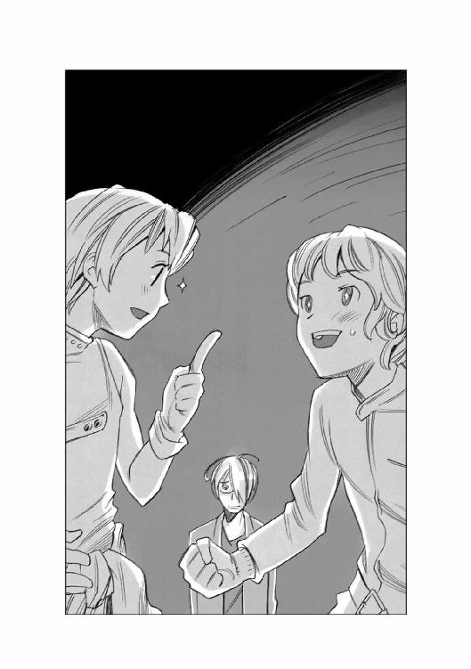
ハヤトが照れたように答えると、すぐに横からハインツが口を挟んだ。
「そうそう、大英雄ってのは戦争が終わってもいくらでも仕事がある貴族様を言うんだ。俺たちみたいに船を買って仕事を探さないと食っていけない人間は、英雄でも何でもない、ただの平民さ」
ハインツの言葉を聞いたサイラスはそのまま考え込んだ。
そして、かっきり一分ほど黙り込んで考えたあと、顔を上げた。
「......兄ちゃんは、この船の価値をわかってくれるよね。こいつがただの再生船じゃないってことも、こいつがどんな歴史を潜り抜けてきた船かも......何も知らない、ただの安物としか見ないような人には死んでも渡すもんかって思ってたけど、兄ちゃんたちなら譲ってあげてもいいや」
ハヤトとハインツは目を輝かせた。
「本当かい？」
「ありがとう！ 大切にするよ！」
喜びの声を上げたハヤトとハインツを見て、サイラスは、にやっと笑った。
「......でもね、一つだけ条件があるんだ。僕をこの船の機関長に雇ってくれない？」
「君をかい？ だって君はまだ......」
「そうだよ、君は中学生だってお父さんが言っていたじゃないか！」
驚く二人を見てサイラスは笑った。
「今すぐって話じゃないよ、僕はまだ中学生だからね。この後整備専門学校に進んでそこを卒業して国家試験に受かったら、の話さ。それが僕の条件だ」
ハインツは困ったような目で社長を見た。
「どうしましょう？」
社長も同じように困った顔で首をひねった。
「うーん。親としては反対したい気もするんだが、私も中学校から専門学校に進んで資格を取ってすぐに働きに出た人間でね。若いうちは他人のところで苦労を積んだ方がいい、というのが私の持論だからなあ......常日頃他人に説教していながら自分の息子は特別扱いするわけにはいかんし......」
ハヤトがサイラスの顔を覗き込んで聞いた。
「この船は君が組み立てた......ということは、この世で一番この船のことがわかる人間だということだよな」
サイラスは自慢げに胸を張った。
「当然じゃないか！ 僕の右に出るヤツがいるもんか！」
「そうか......わかった」
そう言ってうなずいたあとでハヤトは社長に向き直った。
「俺たちを信じてくれませんか？ 始めた運送会社が半年保つかどうかわかりません。満足な給料が出せないかもしれません。でも、やれるところまでやってみたいんです」
社長はしばらく無言のままだったが、やがて大きく息を吐いて右手を差し出した。
「サイラスは末っ子でね......甘ったれに育ててしまったから、色々迷惑をかけるかもしれんが......その節はよろしく頼む」
ハヤトはその右手を握った。
大きくて無骨な、職人の手だった。
そして、その手のぬくもりが、ハヤトの記憶の中にある父親の顔を呼び覚ました。
......息子を送り出す父親って、みんな同じような顔になるのかもしれないな。
ハヤトは心の奥でそんなことを考えながら力強くその手を握り返した。
リムジン商会の事務所に戻ってきたハヤトたちと社長は、さっそく気密ハンガーの中にあったＮ級コンテナ貨物船の譲渡に関係する書類などの作成に取り掛かった。
「この船は、船舶運航関係要員六人、積荷管理要員六人の計十二人の乗組員で運航するという設計になっているが......君たちのほかに誰かを雇う予定はあるのかね？」
そう聞いた社長に、ハインツは肩をすくめて首を振ってみせた。
「いえ、人を雇う余裕はとても......こちらのサイラス君を機関士として雇うだけで精一杯ですよ」
社長の隣に座っていたサイラスは目を見開いて首を振った。
「僕は給料なんかいらないよ！ あの船に乗れるだけで満足さ！」
ハインツは笑いながら言った。
「俺たちは君を乗客や便乗人として扱うつもりはない。君を機関士として乗せるつもりだ。だから君には機関士としての責任がある。そして、果たした責任に応じて給料を払うのは当然のことだ。胸を張って給料を受け取ってくれ......あんまり多くは出せないだろうけど......」
「はい、わかりました！ 責任を果たします」
サイラスは目を輝かせてうなずいた。
その顔は、自分が一人前の人間として扱われたことへの喜びと、誇りに満ちていた。
......こいつも、こういった顔をするようになったのか......わしも歳を取るわけだ。
サイラスの顔を見ていた社長は、小さくため息をつくと、ハインツに向き直った。
「......ということは、お前さんたち二人であの船を動かさねばならんということだな？」
「ええ、そういうことになりますね......でも、船舶管理用の電子人格が搭載されていれば、運航関係の乗組員の代行ができるはずですけど......もしかして電子人格が搭載されていないんでしょうか？ 新規購入するとなると、もうちょっとまけてもらわないと......」
社長は慌てて首を振った。
「あ、いや、すでにインストール済みだ。確か汎用のＤクラス電子人格だと思ったぞ......」
ハインツは考え込んだ。
「Ｄクラスですか......確か船舶管理用電子人格のクラスによって、代行できる乗組員の数が決まっているんですよね？ 最低のＦクラスだと一人分の代行しか出来ないとか、そんな風に......」
「うむ、そういうことになっているな......ちょっと待ちたまえ、今、規則を調べる」
社長はそう言うと、机の脇にある端末を操作して、データを呼び出した。
そして、机の上に浮かび上がったホログラムの画面を見て、うなずいた。
「改正船舶管理規則では、規定以上の機能を持つ船舶管理用電子人格を搭載してあれば、船舶運航に関する乗務員は二名いればいい、ということになっているな......そして、その規定というのは......ああ、良かった。Ｄクラスだ。あの船はあのままでも、君たち二人で航行できるということだな」
ハインツが、ほっとしたように言った。
「ああ、良かったそれは有難いですね。もし新規に船舶管理用の電子人格を買うとなればまた結構な出費になりますからね」
そのとき、今まで黙ってやり取りを聞いていたハヤトがぽつりといった。
「でもよ......俺たち二人だけで動かすとなると、操縦系の機器の位置を変えてもらう必要があるんじゃないのか？」
「あ、そうか、六人分の席のある広いブリッジの、操縦士席と航法士席だけにちょこんと座って操縦するのは嫌だよな。電子人格が代行しているとはいえ、通信とか機関出力とか自分の目で確認したいときもあるよな」
机の上のマニュアルを開いていたハヤトが、ブリッジの配置図を指差して言った。
「このブリッジ正面の操縦士席の隣に航法士席を持ってきて、関連機器の集中表示モニターの取り付け角度を変えて、この二つの席から見えるようにして、中央の三次元立体モニターのところに電子人格の表示スクリーンを設置できませんか？ そうすれば、俺たち二人で、この船の全体を管理できます」
社長は腕組みしたまましばらく考え込んでいたが、やがて、大きくうなずいた。
「うん、それは面白いな......お前さん、船の改造に関して結構造詣が深いと思っておったが......いや、なかなかだ」
そして社長はソファから立ち上がるとハヤトを招いた。
「奥にある設計室に来てくれ、細かな打ち合わせをやろう」
「はい、わかりました！」
ハヤトは嬉しそうににっこり笑うと立ち上がった。
いそいそと、社長の後をついていくハヤトを見送ってハインツがぼやいた。
「......あいつ、このままここに再就職する！ とか言い出さなきゃいいけどな」
ハインツの言葉を聞いていたサイラスが笑いながら言った。
「ハヤトさんは、船も好きだけど、操縦することの方が好きみたいだから......大丈夫ですよ、きっと」
「ならいいけどな」
そう言って肩をすくめるハインツを見て、サイラスがとっておきの秘密を打ち明けるように言った。
「......さっき、父さんがあの船にはＤクラス船舶管理用電子人格が搭載されているって言ったけど......実はあれ、ウソなんだ」
ハインツは目を丸くした。
「え？ じゃあまずいことになるじゃないか！」
サイラスは、にやっと笑って首を振った。
「違うんだ、ハインツさん。あの船の電子人格は......ＨＱレベルなんだよ、本当は......僕だけが知っている秘密なんだけどね」
「ＨＱレベルだって？」
ハインツは眉をひそめた。
ＨＱレベルの船舶管理電子人格というのは最高級の情緒反応を持った電子人格である。
感情の動き、思考、判断力と洞察力に長けた、いわゆるプロフェッショナルな電子人格であり、外宇宙探検船や、帝国の皇帝座乗船などの特別な船にしか搭載されていないのだ。
帝国の法律は電子人格に一切の権利を認めていないが、唯一この種の電子人格が、船舶を運航する際に、船の中においてのみ権限を与えることを認めている。
いわば、人類の歴史において最も人類に近い存在として作られた電子人格である。
「だって......あれは、今までこの帝国で十個も生産されていない、最高級の電子人格だぞ。開発費用だけでＳ級戦艦二十二隻分かかった、って言うんでその後の開発がストップしているってシロモノだ。そんなものがあんなボロ船に搭載されているわけないじゃないか！ もし本当なら大騒ぎだ！ 親父さんが放っておくわけがない、帝星のど真ん中に、リムジン商会の本店ビルが、どーんと建つくらいの金になるんだぞ！」
サイラスは不満そうに唇を尖らせて言った。
「......確かにまだ作動させたことはないけど......今インストールされているＤランク船舶管理用電子人格の下に、もっとすごいレベルの人格が隠れているんだ......ちらっと見たけど、あれは絶対にＨＱレベルだと思うんだけどなあ......」
「あの船は古いし、いろんな船の部品を組み合わせているんだろう？ もしかしたら前の人格が消えなくて、残っていたのかもしれないぜ......まあいいよ、俺はそっちのプロだから、色々調べてみるさ。とりあえずＤランクが搭載されていればあの船は飛ばせるんだし」
「うん......それはそうなんだけどさ......」
サイラスは、何か言いたげだったが、仕方ないな、という風にうなずいて見せた。
エンデバー星系の宇宙港の外周泊地に、ハヤトとハインツがリムジン商会で買い付けたＮ級コンテナ貨物船が回航されてきたのは、それから一週間ほど過ぎた頃だった。
泊地に備え付けられている係留ビームの先端部にある電磁コネクターに貨物船の船首部分がコンタクトすると、港湾作業員たちが近づいて、港から供給されるエネルギーチューブやエアパイプなどを繫ぎ始めた。
そして最後にブリッジのハッチと宇宙港のエアロックがフレキシブルパイプで作られた通路で連結される作業が終わると、宇宙港の管理事務所の停泊船舶一覧の中に、一つ船の名前が増えた。
その一覧表を見上げた管理事務所の所長が、係留に関する手続きに来ていたハヤトとハインツの方に視線を移して微笑んだ。
「へえ、お前さんたちが手に入れたあの船の名前は『銀星号』と言うのか。いい名前だな、戦争で貰った勲章から名前をつけたのかい？」
ハヤトは笑いながら首を振った。
「ありがとう、みんなそう思ってるみたいだけどね、違うんだ。あの船は、もともとそういう名前だったのさ。偶然だよ」
「へえ、偶然にしちゃあ出来すぎた話だな。でもまあ、お前さんたちが乗るなら、ふさわしい名前かもしれん......これから船に行くのか？」
「ああ、今日からあの船が俺たちの家だからな。今日から晴れて自家用宇宙船のオーナーってわけさ」
内心の嬉しさを隠せないように白い歯を見せて笑うハヤトを見て、ハインツが肩をすくめた。
「運輸局の審査に通って、航行許可証と業務耐久証明がもらえて初めて自力航行可能な宇宙船になるんだ。今の状態じゃあ宇宙船の形をした係留物にすぎないんだぞ」
「うるさいなあ、いいじゃないか、喜んだって、人間素直が一番だぜ」
唇を尖らせるハヤトを見てハインツはもう一度肩をすくめた。
「お前は船のことだけ考えてりゃ幸せかもしれないけどな、俺はこれから運輸局とか港湾局とか検査局とかに出す書類と格闘しなきゃならんのだ。喜んでなんかいられるもんか」
管理事務所の所長は、人の良さそうな微笑を浮かべて言った。
「運輸局の認可手続きとかで、わからないことがあったら、いつでも聞いてくれ、力になるぜ」
「ありがとう、マジに助かる」
ほっとしたような表情を浮かべたハインツを見て、所長は、もう一度微笑んだ。
「このエンデバー宇宙港で働いている人間は、みんなお前さんたちの味方だ、気にすんな」
銀星号のブリッジの中には、かすかに機械油の匂いが漂っていた。
ハヤトの横に立ってブリッジを見回していたハインツが、つぶやいた。
「リムジン商会の匂いがするな......」
「ああ、船内の空気はそのままだからな、いわば缶詰みたいなものさ。でも今の船内の空気は宇宙港から供給されているから、そのうち消えるだろう......」
ハヤトはそう言うと、ブリッジの中を指差して言葉を付け足した。
「このモザイク模様の計器パネルもそのうち慣れるさ」
その言葉のとおり、この銀星号のブリッジは微妙にモザイク模様を描いていた。
パネルの下地は帝国軍の標準船内色であるライトグリーンに統一されているが、計器や、コンソールの盤ごとに微妙に色調が違うのである。
ハインツがぼやくようにつぶやいた。
「あのサイラスって子が全部で百二十隻分の部品を使っているって言った時、まさかと思ったけど、あの後で、このブリッジに足を踏み入れたときに実感した。間違いない、こいつは百二十個一の船だって......」
「でもよ、おかげで船の名前を決める時に助かったじゃないか」
「そりゃそうだ、元の船名が百二十個もあれば一つぐらいは気に入るのもある......銀星号って名前を聞いたときに、これだ！ って思ったのは事実だ。でもな......」
ハインツはそこで言葉を切ると、コンソールに歩み寄って情報端末のキーを叩いた。
待機モードだったメインスクリーンが、一呼吸ほどのタイムラグの後でサブウィンドウを表示する。
ハインツはそこに表示された銀星号の項目を読み上げた。
「銀星号......帝国軍第百二十八輸送部隊第二艦隊所属Ｎ級コンテナ貨物船......処女航海でローデス軍の砲撃を受け大破するも、積荷とともに回収され修復される。
その後も十数回の大破沈没、回収修復を繰り返す。最終経歴は二年前の五月、ルカワサキ星系のバカン港沖合いにある六連灯台近くの空域でローデスの仕掛けたステルス性浮遊機雷によって大破沈没。老朽化により修復は見送られ艦籍抹消......何べん読んでもため息が出る経歴だよな。十数回の沈没と回収修復ってのはハンパじゃない」
「それだけの手間をかける価値がある船だったってことさ。俺は不死鳥みたいで縁起がいいと思うけどなあ」
「......まあ、お前が気にしないのなら俺は別に構わん......さて、俺は届け出の書類を作りに地表に降りるとするか。お前がやることはわかっているな？」
「ああ、船舶検査の係員が来る前に、この焦げ跡とつぎはぎだらけの外見を再塗装して見栄えを良くするんだろ？」
「そうだ、宇宙船の外見的要素なんてのは、よほど船体がねじれていたり、破損してない限り意味はないんだが、検査官の検査項目の中に目視確認する部分が含まれている以上、おろそかにはできない。それに......実際今のままの外見じゃ、仕事を始めても客が逃げちまう。頼んだぞ」
ハヤトは、どん、と自分の胸を叩いて言った。
「任しとけ！ ちゃんと簡易気密ドックと塗装マシンをレンタルしておいた。お前が帰ってくるときには新品同様に仕上がっているさ！」
ハインツを送り出したあと、ハヤトはブリッジのシートに座って通信画面を開いた。
呼び出しのサインが数回瞬き、やがて通信スクリーンに作業服を着た中年の男が現れた。
『よう、ラッキーボーイ。何の用だね？』
「そのラッキーボーイってのはやめてくれよ、もうボーイって呼ばれる歳でもないし......」
ハヤトが眉をひそめると、スクリーンの中の中年男は笑った。
『見た目から言えば充分ボーイだけどな、お前さんは......んで、連絡してきたってことはあれだな、その船の再塗装の件』
「そうなんだ、頼んでおいた物は揃ってるかい？」
中年男は困ったような顔をした。
『その件だが......塗料の手配がつかなくてな、船体を覆う簡易気密ドックとか塗装用のマシンとかは揃ったんだが、そのＮ級貨物船用の指定塗料がどうにも手に入らんのだ』
「なんだよそれ、気密ドックや塗装マシンがあったって肝心の塗料がなくちゃ意味ないじゃん！」
『お前さんの言うとおりだ。こっちも八方手を尽くして探したんだが、軍用輸送船の専用外殻塗料ってのは特別な配合らしくて品が少ないんだ......届くのに一週間かかるって言われちまった』
「一週間？ それじゃあ間に合わないよ。書類を出して三日後か四日後に検査に来るんだってハインツが言っていた......書類を出すのが明日としても、一週間じゃ無理だな......」
ハヤトは考え込んだ。
......どうしよう？ どうすればいい？ 輸送船の外殻を塗る塗料ってのは確かに特別な物なのかもしれない。軍用船の塗料には敵の索敵波を吸収したり遠距離ビームを跳ね返したりする効果を出すために色々な物質が配合されている。
......でも、待てよ。そうか、別に軍用の塗料になんかこだわらなくてもいい！ 戦争は終わったんだ。この銀星号はもう戦場に行く必要は無い。だから、ごく普通の民間用の塗料でも構わないんだ！
ハヤトは顔を上げた。
「軍用の指定塗料は無理でも普通の塗料なら手に入る？」
スクリーンの中にいた中年男はびっくりしたように目を見開いた。
『え？ ああ、普通の塗料ならストックはいくらでもある。でも、どんぴしゃ同じ色の塗料ってわけにはいかないぞ』
「確かにあの色そのままってのはないかもしれないけど、白い塗料と黒い塗料を混ぜ合わせれば戦時標準色の灰色に近い色は出せると思うんだ。黒と白の塗料を用意してくれない？ 大至急で！」
スクリーンの中の中年男は、画面の脇にあるリストを見ているのだろう、視線を微妙にずらしながら答えた。
『ああ、うーんと、そうだな、黒と白なら取り寄せなくとも手元にあるぞ、お前さんの船を全塗装する分くらいある』
「本当？ よかった！」
しかし、喜ぶハヤトとは裏腹に中年男の顔が曇った。
『あ、いや、ダメだ、良く見たらこいつは水性塗料だ。値段は安いがステーションとかの内壁用の塗料だな、宇宙船の外殻塗装には不向きだな』
その言葉の中にあった「安い」という単語にハヤトの意識が動いた。
「安いって......どれくらい安くなるの？」
『水性塗料は普通の塗料の半額以下だ。塗るのも簡単だし、機材のメンテナンスも楽だ。でも耐久性とかを考えるとお薦めしないなあ』
ハヤトは再び考え込んだ。
......きっと、水性塗料というのは湿気とかがある場所に使うには耐久性が足りないってことなんだろうな。でも、待てよ。
宇宙空間には雨は降らないよな、人がべたべた触るわけもないし、およそ湿気とかそういったものには無縁の場所のはずだ。だったら、別に水性塗料だって構わない。それに......なんと言っても安いってのが魅力だ！
ハヤトは小さくうなずくと、スクリーンに映る中年男に向かって言った。
「その水性塗料と資材をまとめて、大至急四十五番泊地に届けてくれない？」
中年男は、不承不承にうなずくと、念を押すように言った。
『こっちは商売だから、言われれば届けるが......責任は持たんぞ。いいか？』
「ああ、構わない。自分で言ったことの責任は自分で取るよ」
ハヤトはそう言い切ると通信を切った。
塗料と設備が届いたのは、次の日の朝だった。
レンタル会社の作業員と共に銀星号の周囲に大きな簡易気密ドックを展帳して、その内部に大気を充満させ終わったのは、昼を過ぎた頃だった。
この簡易気密ドックというのは要するに薄い不透過ポリマーで作られた巨大な筒状の袋である。何箇所か全体を支えるために必要な部分に簡単な軽いカーボンファイバーの骨組みが入っているだけで、あとは内部の大気圧で膨らむようになっており、この内部ならば厚くてかさばる気密服を着込まないで作業することができるのだ。
まさしく簡易の名のとおり、一回使えば終わりの使い捨てだが、設備の無い場所などで応急修理をするときなどには欠かせない装備でもある。
簡易ドックの真ん中に浮かぶ銀星号のブリッジに陣取ったハヤトは、塗装マシンのコントロールシステムを立ち上げた。
作業工程の第一段階はまず銀星号の船体全体をカラーセンサーでスキャンした映像を基に、塗装プログラムを組むところから始まった。
「......全塗装することもできるけど、それだと時間もかかるし、ここは一つ最小限の塗装で見栄えを良くする方法を選択するとするか」
モニターに映った映像を見て、そう独り言をつぶやいたハヤトは、コンソールにあるキーを叩いて作業ロボットに指示を与え始めた。
ハヤトが選択した作業工法は、銀星号の外殻にある弾痕を修理したあとの焦げ跡や酸化物が飛び散った痕跡などの部分だけに、船体外殻全体のトーンと同じ色調の塗料をスポット塗装で吹き付けて、目立たなくするという工法だった。
スクリーンに浮かび上がったシミュレーションの完成予想図は、船体全体が均一にならず、微妙にモザイク状に仕上がっていたが、もともとの船体が濃い灰色で塗られているために、それほど目を引く状態ではない。
「......こんなもんかな？ これなら塗料もあまり使わないし、余った分は取っておけばまた何かに使える。安く上げるに越したことはない。きっとハインツも誉めてくれるさ」
ハヤトがそうつぶやいて、エンターキーを押して作業開始を命じると、レンタルした塗装マシンが一斉に動き始めた。
不必要な部分へのマスキングや、色調に合わせた塗料の配合など、塗装作業に必要な工程はすべてプログラミングされているため、あとは作業の進展を見ているだけでいいのだ。
モニターに映る外殻の焦げ跡が少しずつ消えていくのを見ながら、ハヤトは満足そうにうなずいた。
運輸局や管理事務所、そして宇宙船舶整備協会などの各種の窓口に書類を提出して回っていたハインツが惑星エンデバーの地表から帰って来たのはそれから二日後だった。
目の下にクマを作って見るからに疲れ果てた様子でブリッジのシートにもたれるように座り込んだハインツを見て、ハヤトは目を丸くした。
「ずいぶん疲れているんだな、まるで格闘戦をやってきた後みたいだぞ」
「ああ、まさしく格闘戦だ。書類と規則を相手に四十八時間。もう書類なんか見たくねえや！」
ハインツはそうわめいた後で、ハヤトの顔を見てにやっと笑った。
「ちゃんと塗装したんだな......見違えたぜ」
「ああ、これで船舶検査もばっちりだ。内部のシステムや推進機の遮蔽とかは、リムジン商会がしっかりやってくれているから、最初から何の心配も無いし、これで耐久証明がもらえれば晴れて貨物船の仲間入りってわけだな」
「ああ、でも想像していたより大変だよ、会社を始めるってのは......仕事を始める前の初期投資が馬鹿にならない」
ハインツはそう言うと、コンソールに手を伸ばして、目の前のスクリーンに塗装にかかった経費の一覧を呼び出した。
数字を追っていた目が細くなる。
「......あれ？ なんでこんなに安くなってるんだ？」
驚くハインツを見て、ハヤトは自慢げに鼻をうごめかして答えた。
「へへん、驚いただろう。種明かしをしようか？ 実を言うと今回使った塗料は水性塗料だったのさ。水性塗料は耐久性は低いし、湿気にも弱い。でも、めちゃくちゃ安い、普通の塗料の半額以下だ。そこで俺は考えたんだ。
宇宙空間では雨が降るわけがないし、人が触るわけでもない、だったら安い水性塗料でも大丈夫なんじゃないか？ ってね」
ハインツの目が驚きに見開かれた。だが、それは値段の安さに驚いたわけではなかった。
「水性塗料が室内とかの内部に限られている理由は、湿気に弱いとか耐久性とかそういった理由だけじゃないぞ。確か......紫外線とかにも弱くて、変色しやすいんだ。
宇宙空間ってのは、地表なんかとは比べ物にならないくらいの紫外線とかを浴びる。下手をすると一発で変色しちまうぞ！」
「なんだって？」
ハヤトはメインスクリーンに飛びついて、停泊地の監視カメラの映像を呼び出した。
宇宙港があるステーションが、惑星エンデバーの夜の側からゆっくりと昼の側に回りこみ始めるところだった。
惑星エンデバーの向こうから太陽の輝きが宇宙港の停泊地に差し込んだ。
そのとたん、銀星号の船体表面に変化が現れた。
ハヤトが吹き付けた水性塗料は、黒い塗料と白い塗料を混ぜ合わせて灰色にしたものだった。
白い塗料に含まれていた顔料は酸化チタンであり、これは紫外線の影響を受けなかった。しかし黒い塗料に含まれていた顔料は、強烈な紫外線に当てられて、ものの見事に変色した。
黒から......赤へと。
つまり、ハヤトが吹き付けた塗料は、白と赤を混ぜた見事なまでのピンク色に変色したのだ。
スポット塗装した部分は船体の数十箇所に及んでいた。そしてそのすべてが太陽光線を浴びるのと同時にピンク色の水玉となって浮かび上がった。
大雑把に塗っておけば、まだ大きな水玉は模様に見えたかもしれない。しかし、ハヤトは小さくこまめに丁寧に塗料を吹き付けていた。
太陽の光が伸びていくに従って、灰色の船体の上に帯状にぶわぁっとピンクの小さな斑点が浮かび上がっていく光景は、不気味などという言葉で表せるものではなかった。それはまるで、悪性の伝染病に感染し、全身に発疹が出ていくような光景だった。
「うわあ！ なんじゃこりゃああ！」
モニターに映る銀星号の映像を見て、ハヤトは思わず叫んでしまった。
それが自分が乗っている船の映像だとは思いたくなかった。
「うぇええ、グロいなあ......」
ハインツも言葉を失った。
「営業どころの話じゃないな。これじゃあ誰も近寄らない。なんか......見ているだけで全身が痒くなりそうだ！」
しばらくして自分を取り戻したハヤトが叫んだ。
「すぐに塗りなおす！ 幸い、塗料はまだ余っているし、簡易ドックも使える！ 塗装マシンのレンタルの手配さえつけば今からでも塗りなおせる！」
「そうか、そうしてくれ......」
そう言ってからハインツは何かに気がついたように目を見開いた。
「ちょっと待て！ その塗料ってのはあれか？ あの水玉に吹き付けた水性塗料と同じヤツか？」
「ああ、そうだ、手元にあるのはそれしかない、今から注文していたら間に合わない！」
「......お前......この銀星号をピンク一色に塗るつもりか！」
ハヤトはわめいた。
「背に腹は代えられないだろうが！ このままで検査受けたらどうなる？ 確かに基準はクリアするかもしれないけど、俺たちの精神状態についてクレームがつくかもしれないぞ！ それより何より宇宙港を追い出されてもおかしくない！ まるで疫病船じゃねえか！」
「そうか......仕方がないとは言え......ピンクの宇宙船に乗らなきゃならんとは......」
ハインツは、がっくりと頭を落とした。
耐久証明を取るための検査官の立ち入りがあったのはそれから二日後だった。
全体をピンクに塗られた銀星号の外周をぐるりと見て回った検査官は、表情も変えなかったし何も言わなかった。そしてその後船内に入り、反応炉の遮蔽や船体強度、そして非常用の救命艇や脱出装置などを一時間ほど検査して回った。
検査官の後について一緒に船内を回って色々な質問に答えながら、ハヤトは検査官が船体の色のことについて何も言わないことに少しほっとしていた。
ピンクの貨物船の存在は、このエンデバー宇宙港で大評判になっていた。
ただでさえ目立つうえに、口の悪いヤツがハヤトとハインツの宇宙船は貨物営業じゃなくて風俗営業の許可を取ったに違いない、などというウワサを広めていたため、停泊地を目立たぬ裏の方に移さねばならなかった。
やがて、すべての立ち入り検査を手順に忠実に終えた検査官は、ブリッジ脇にあるエアロックの外に立っていたハヤトとハインツに向かって敬礼して言った。
「必要事項はすべて確認させていただきました......これといって指摘事項は有りません。これなら耐久証明を交付できると思います」
「ありがとうございます！」
「これで心おきなく飛ばせるわけですね」
弾んだ声で返事をした二人を見て、検査官は初めて微笑んだ。
「ええ、そうです。業務用の証明も一週間後には出るでしょう。そうなれば貨物船としての業務営業も可能です......」
そして検査官は、銀星号を見上げて、ちょっと顔をしかめた。
「安全上は問題ありませんし、これは私の個人的な感想ですが......この色は、いささか趣味が悪すぎやしませんか？ まあ好みは人それぞれですし、人目を引くことは引きますけどね。では、これにて失礼します」
検査官はもう一度二人に敬礼すると、そのまま帰って行った。
連絡通路の奥のエアロックの向こうに姿が消えたのを確認してから、ハヤトがわめいた。
「うるせえ！ 趣味が悪いなんてことは百も承知だ！ 好きで塗ったんじゃねえぇぇぇ！」
そしてハインツの方を向いてハヤトは言った。
「ハインツ！ 仕事だ！ 仕事を探そう！ 一刻も早く仕事を始めて代金を受け取って、こいつを塗り替えるんだ！」
ハインツは静かに、しかし決意を込めてうなずいた。
「ああ、俺もそう思う」
ブリッジに戻ったハインツは、自分の個人用端末と銀星号のメインシステムを繫いでなにやらやり始めた。
「何を始めるつもりだ？」
怪訝そうな顔をするハヤトを見て、ハインツはにやっと笑った。
「運送業を始めました、と言って黙ってここに座っていても仕事が来るわけが無い。まず業界への顔つなぎ、仕事を落札するためには協会に入らなくちゃならないからな。そしてなんと言っても宣伝と営業だ。
ダイレクトメールから飛び込み営業まで、なんでもこなして、仕事を取ってこなくちゃならん。そのためには、まず大手の検索エンジンに登録して、俺たちが検索画面の上位に表示されなくちゃならないのさ」
「そんなことができるのか？」
ハインツは自信たっぷりにうなずくと、細長いスティックのようなものを懐から取り出した。
「俺にはこいつがある......この汎用デバイスさえあれば、こんな辺境惑星のシステムプロテクトなど紙も同然！」
「おい、非合法なことはやめろよ、この前も結局それが原因で逮捕されたんだぞ」
「でも、その代わりに二十二億が転がり込んだ......違うか？」
「違わないけど......目的は手段を正当化するわけじゃないと思う」
「安心しろ、それほど悪いことじゃない、ちょっと悪いことだ」
「悪いことに変わらんだろうが！」
「ごちゃごちゃうるさいヤツだなあ......」
そう言ったとき、ハインツの顔が曇った。
「あれ？ ダメか......この船のリンクからは潜り込めないようになっているらしいな」
「だろ？ だからやめておいたほうがいいと思うんだ、それは神様のお告げだ」
ハインツは聞いていなかった。
無言でコンソールの前から立ち上がると、シートの背もたれにかけてあった上着を取り上げてそれを着込み、懐にスティックをしまった。
「おい、どこに行くんだ？」
ハインツはこともなげに言った。
「え？ ああ、地表だ。ちょいと宣伝を仕掛けに行ってくる」
「地表だと？ これからか？」
「ああ、思い立ったが吉日って言うだろう？ 地表に降りて運送業協同組合に入って、顔つなぎやって、ついでに宣伝と営業をこなして来る。明後日ごろには帰るよ」
ハインツはそのまま、すたすたと歩き始めた。
「あ、おい！」
「もしかしたら俺が帰る前に、お客さんから連絡が入るかもしれない。粗相の無いように応対してくれ。それから、乗組員用の居住スペースを旅客用に使うつもりだから、室内のリフォームをやっておいてくれ......念のために言っておくが、塗り替えなくていいからな。じゃあな！」
ハインツはそう言い残すと、連絡通路の奥に消えて行った。
「......たく、自分勝手なヤツだなあ」
ハヤトはそうつぶやくと、ブリッジに戻った。
何をするでもなくブリッジを見回したハヤトは、ブリッジの後方にある乗組員の居住施設に視線を投げた。
......昔は今みたいに船舶管理用電子人格とかが無くて、全部人間の手で動かさなくちゃならなかったから、この船は最大で十二人の乗組員が乗って航行することができるように設計されているんだよな。
あの居住スペースを客室にして、貨客船として営業できればいいな、なんてハインツと話していたけど......もしかしたら本当に旅客を乗せることになるかもしれない。
あいつに言われたとおりの仕事をするのは癪だけど、ちゃんと掃除して部屋の手入れをやっておかないとな......。
そして、次の日の夕方。キャビンの手入れを終えて、一息入れるためにブリッジの後方にある小さなラウンジのカウンター席に座って、自動調理器で入れたコーヒーを飲んでいたハヤトは、その席から船体後部にある船室に通じる廊下を眺めて考え込んだ。
......こうやってみると、通路の壁や床のパネルの色合いが全部微妙に違っているのがわかるなあ。この銀星号は百二十隻分の部品を寄せ集めて組み立てた船だから仕方ないんだけど......まあ、模様に見えないこともないし、そんなことは黙ってりゃいいか。
そんなことを考えていたとき、いきなりブリッジにある通信端末が呼び出し音を響かせた。
慌てて通信相手を確認したハヤトの心臓がどくん、と脈打った。
それは、ハインツからの通信ではなかった。
モニターの脇には一般の通信回線からの通信を意味するアイコンが瞬いていた。
......一般通信回線ってことは......もしかしてお客さんか？
ハヤトの脳裏に昨日出掛ける時にハインツが言い残して行った言葉がよみがえった。
......そうだ、粗相の無いようにしなくちゃ！
ハヤトは、はだけてあった襟元をきちんと締めなおすと、髪を二、三回なでつけてから、通信画面の前に立ち、思いっきりよそいきの声で答えた。
「はい！ 銀星運輸です！」
画面の中に立っていたのは、鼻先にソバカスを散らし、長い赤い髪をみつあみにして肩から垂らしている十五歳くらいの女の子だった。
一生懸命大人びた格好をして見せているものの、両肩に垂らしたみつあみが、幼さを際立たせている。
その子は、ハヤトを見ると、帝国北東部の訛りそのままの口調で言った。
『あんたが社長さんけ？ ちっと部屋見せてもらいたいんだわさ、そっち行ってええけ？』
その言葉を聞いたハヤトは目を丸くした。
......部屋見せてもらいたいって、どういう意味だ？
普通は、船の年式とか積載量とか推進機の推力とか、そういったものを気にするはずじゃないのかな？......あ、いや、そういうことを気にする艦船マニアは俺くらいのものかもしれない。世間の人はあんまり気にしないし、ましてや女の子なんだもんな。
この銀星号は荷物だけを運ぶんじゃなくて、関係者なんかも一緒に乗せて運ぶ場合も考えて船室を用意しているわけだし。どうせなら快適な設備で旅をしたいと思うのは当然か。部屋の設備を見てから決めたいと思う人がいたって不思議じゃない。
......でも、初めてのお客候補が女の子とは思っていなかったよなあ。
ハヤトは、通信スクリーンに映った赤毛の女の子に向かって少しあわてたように答えた。
「えーと、あいにく事務担当の者が不在なんですけど......どうしようかな。でも、せっかくのお客さんなんだから......うーんと、船室を見るくらいなら大丈夫かな？ 今、どちらにいらっしゃいますか？」
赤毛の女の子は、自分の北東部訛りを恥じる風もなく聞いてきた。
『あたいは今、エンデバー宇宙港の二階の待合室にいるだわさ、そこまでどんくらいかかるんけ？』
......高校生ぐらいの女の子が、方言丸出しで話すって、なんとなくユーモラスだけど、笑っちゃ悪いよな。
ハヤトはそんなことを考えながら、なるべくビジネスライクに聞こえるように表情を引き締めて答えた。
「銀星号が停泊しているのは、宇宙港の大桟橋の裏手にあるＧ・三六九泊地ってところです。そこから、ステーションの中を走っているタクシーに乗って、この泊地の番号と、銀星号と言ってもらえれば、そうですね、十分もしないうちに、連絡通路の入り口まで着くと思いますよ」
『ちょっと待ってけれ、今、ボイスメモ録音するけんね、えーと、宇宙港の大桟橋の裏手にあるＧ......何番地だっけ？』
「Ｇ・三六九泊地です」
『オッケ、録音しただわさ。これをタクシーの運転手さんに聞かせればええのね......ところで、兄ちゃん、ずいぶん若いんでね？ バイトけ？』
ハヤトは、あわてて顔の前で手を振った。
「いや、若いけどバイトじゃないよ......じゃなかった、バイトではありません、この船の......と言うか、この会社の......なんて言えばいいのかな......共同経営者って言えばいいのかな......」
考え込んだハヤトを見て、通信スクリーンの中の少女は笑った。
『とにかく、これからそっちに行くんで、よろしくお願いするだわさ』
「はい、お待ちしています」
そう言って一礼して通信を切ったハヤトは、周囲を見回した。
えーと、お客さんが来るなら、まず掃除道具を片付けて......あ、そうだ、お茶ぐらい出さないとな。あの新型の自動調理器の使い方が、今ひとつわかんないけど、とにかく急がないと！
部屋の中にとっ散らかった掃除道具を取りまとめてロッカーに叩き込み、船室の中に残った洗剤の匂いを消すためのデオドラント剤の噴霧スイッチを入れて、新型の自動調理器の簡易マニュアルを読みながら香茶をプログラミングしたとき、ブリッジの通信端末のインターホン機能が、ぽーん！ という信号音を響かせた。
......よし、なんとか間に合ったぞ！
ハヤトが心の中で小さくガッツポーズを決めながら通信スクリーンのインターホンボタンを押すと、そこには、さっきの赤毛の少女の戸惑い顔が映っていた。
『あの......銀星運輸って会社って聞いて来たんだけんど......』
「ええ、宇宙船なんですけど会社なんです。事務所兼宇宙船ってことで......」
ハヤトの答えを聞いた女の子は、一呼吸ほど考えた後で怪訝そうに聞いた。
『......だども、ピンク色に塗ってあるっちゅうことは......もしかしたら......水商売か何かを......？』
ハヤトは、ぶんぶんと音がするほどに首を振って答えた。
「違います！ うちは水商売でも風俗営業でもラブホテルでもありません！ 色を塗り替えたら、たまたまこんな色になっちゃっただけです！」
ハヤトの顔つきを見て、安心したのだろう、女の子はほっとしたように言った。
『そういえば、都会は住宅難で、船の中に事務所があったり、家があったりするって話、聞いたことがあるだわさ、うん、これもそれってことなんね』
「ええ、まあ、そういうことかな......ロックを解除しました、そのまま連絡通路を通って船にきてください」
ハヤトは、そう言うと、急いでブリッジを出てエアロックに向かった。
ほどなく、がらごろがらごろという、キャスターの音を響かせて、ラゲッジバッグを引きずった赤毛のみつあみの女の子が、宇宙港の埠頭からエアロックに通じる連絡通路を歩いてきた。
ハヤトは、目の前に立っている女の子の背の低さに少し驚いた。
通信モニターの中に映っていた映像はバストショットだったために、わからなかったのだが、女の子の身長は百五十センチあるかないか、一見すると中学生に間違われそうな雰囲気を持っている。
美人ではないが、軽くソバカスの浮いた顔に、くりくりとした目が印象的な愛嬌のある女の子だった。
女の子は、エアロックの前に立っているハヤトを見て、ちょっとほっとしたように微笑んで、ぴょこんとお辞儀をした。
「お邪魔するだわさ」
「どうも、初めまして、俺......私がこの銀星号の......」
同じように頭を下げたハヤトは、そこまで言ってから、自分とハインツのどっちが船長になるのか決めていなかったことに気がついた。
「......えーと、責任者の、ハヤト・フォーゲルスト・ナグモと申します。ようこそ銀星号へ」
「責任者？ あ、ああ管理人さんね。あたいの名前は、リアン・マッケンジー・カルミンと申します。よろしくだわさ」
「えーと、カルミンさんとお呼びしてよろしいですか？」
みつあみの女の子は、ちょっと考えこんだ後で、微笑んだ。
「リアンと呼んでほしいだわさ、故郷ではそう呼ばれとったで」
「では、リアンさんとお呼びします」
ハヤトが作り慣れない営業スマイルを浮かべて頭を下げた時、連絡通路とエアロックの隙間にリアンのラゲッジバッグのキャスターが引っかかった。
「あれ、動かんだな」
「あ、お手伝いします！」
そう言ってラゲッジバッグのアームをつかんだハヤトは、そのラゲッジバッグが異様に重いのに驚いた。
......うわ、何を詰め込んだらこんな重さになるんだ？......って言うより、こんなクソ重いバッグをどうやってこの子はここまで持って来たんだ？
「キャスターがちょうど隙間に入ってしまっただな、真上に持ち上げれば外れるだわさ」
リアンと名乗った女の子はそう言うと、片手でひょいとラゲッジバッグを持ち上げ、そのままエアロックの床に、ごとんという音を立てて置いた。
......あれ？ 重いんじゃなくて、単に挟まって抜けなかっただけなのかな？ まあいいや、とにかくこの子を案内しなくっちゃ。
「えーと、どうしよう？ まず船室を見ますか？ それとも船内を案内しましょうか？」
リアンは真剣な顔で言った。
「まず、部屋を見せてほしいだわさ。あたいはそのためにやってきたんよ」
「わかりました、ではこちらへ」
ハヤトは、リアンを先導するように船内に向かって歩き出した。
エアロックから船体後部に抜ける通路の右側にはギャレーがあり、そこには自動調理器と食器棚が置かれている。そして左には三人程度が座れるカウンターとソファが置かれたラウンジがあり、その先は十人程度が座れる広い食堂になっている。
各部屋との間には隔壁があり航行中はすべて自動ドアが閉まっているが、停泊中は空調の関係もあってすべてのドアは開放されたままになっており、ブリッジから出ると、食堂からその先にあるラウンジと船室に抜ける通路まで見通すことができる。
ギャレーに置かれた新型の自動調理器と、広い食堂を見たリアンは目を丸くした。
「あんれまあ、知らんかった、ここは賄いつきなんね！」
「賄いつきと言うか......お客様に食事をお出しするのは当然ですけどね」
リアンは感心したように首を捻った。
「都会は、はあ、至れり尽くせりだなや。あたいはてっきり部屋だけで、食事はつかんと思っておっただわさ」
その言葉を聞いたハヤトは、一瞬怪訝な顔になった。
......このエンデバー星系って、それほど都会でもないけどなあ。それに恒星間旅行は、三日から一週間はかかるのが当たり前だ。
いくら格安の運賃でも食事なしというのは、まず無いはずなんだけど......もしかしたらこの子の出身地には、そういった料金形態の船便もあるのかな。
ハヤトはそんなことを考えながら、リアンを食堂の先にある船室へと案内した。
通路を挟んで左右に三つ、計六個並んだ船室は、本来はこの銀星号の乗組員の私室となるための部屋だった。
一部屋を二人で使う、いわゆるツインタイプの部屋だが、一人で使うときは片方のベッドを壁面に収納し、部屋を広く使うことができるように設計されている。
船室に足を踏み入れたリアンは、室内を見回して歓声を上げた。
「うわあ、家具がついているだわさ！」
そして、そのまま室内のチェストの扉をぱたぱた開けたり、バスルームや、洗面台などをくるくるとコマネズミのように見て回った後で、最後にぴょんと跳ねてベッドにぼすん、と腰を下ろし、ベッドのクッションを確かめるように身体を揺すりながら、もう一度室内を見回した。
「ちっと狭いけんど、一人なら、これでも充分！ バス、トイレ、んでもってベッドもチェストもついとるし......」
「気に入りましたか？」
部屋の入り口に立って声を掛けたハヤトに、リアンは、ベッドの上からぴょん、と床に立ち上がって微笑んだ。
「うん！ 気に入った！ この部屋を契約するだわさ！」
「け、契約？」
「そうだわさ、部屋を使うからには契約するのが当たり前だわさ」
そのリアンの言葉を聞いたとき、ハヤトは自分が肝心なことを何も知らないことに気がついて愕然となった。
「あ、そうだよね......は、ははは、そう、契約は必要だよね」
やばい、俺、ハインツから何にも聞いてないよ。どうすりゃいいんだ？
いきなり冷や汗を流し始めたハヤトを見て、リアンは怪訝な顔になった。
「どうしたんね？ 顔色が悪いだわさ」
「えーと、契約について、ちょっと事務担当の者に問い合わせてきます！ しばらくこの部屋で待っててください！」
「うん、ええよ、あたい、この部屋、気に入ったから」
「じゃあ、すぐに聞いてきます！」
嬉しそうなリアンを後に残し、ハヤトは全速力でブリッジに向かった。
......なんとかしてハインツに連絡を取らなくちゃ。せっかくのお客さんなのに逃してたまるか！
しかし、ハインツを呼び出すはずのその通信回線の画面には『留守番モード』の文字が浮かんだままだった。
ブリッジのコンソールを握りこぶしで叩きつけてハヤトは叫んだ。
「あの馬鹿！ 肝心なときに通信端末を切ってやがる......一体どうすりゃいいんだよ！」
ハヤトは頭を抱えた。
......うわあ、俺ってダメだよなあ、実際に船を飛ばす腕は誰にも負けない自信があるけど、こういった規則とか事務とかになると、ド素人同然だ。
そのとき、ハヤトの脳裏に、一つのアイディアがひらめいた。
そうだ！ 他の運送会社の運賃を調べれば参考になるかもしれない。
ハヤトは、がばっと身体を起こすと、そのままコンソールのキーボードを叩いた。
モニターには、このエンデバーから他の星系に物を運ぶときの基準運賃と、そして基準旅客運賃がずらずらと並んだが、そのどれも、上限と下限に大きな開きがあった。
......なんで、こんなに違うんだ？ 上の方の運賃は下の三倍以上の開きがある......あ、そうか、船によって設備とか待遇とか速度とかが違うから、一律で決めるわけにはいかないのか......それにしても、エンデバー星系から荷物を運び出す運賃はやけに高いんだな。高速貨物船を使っているわけでもないのに。
ハヤトは、はっと我に返った。
......いけね、そんなこと考えている場合じゃなかった。契約をなんとかしなくっちゃ！ あの子に一旦帰ってもらって、ハインツがいるときに来てもらうのが一番いいけど、それじゃあせっかくこの船を訪ねてくれた、あのリアンって子に悪いし、そんなことやってたら逃げちゃうかもしれないよなあ。
最初のお客さんに逃げられた、なんて縁起の悪いことになりたくないし......なんとかしてお客さんを繫ぎとめておく方法はないかな？
そして、ハヤトは一つの方法に思い当たった。
ハヤトは、ぽん、と手を打つとコンソールの前から立ち上がった。
......そうだ、手付金だ。
運賃の一部を先にもらっておけばいい。そうすればお客さんを繫ぎとめておける。
「手付金？」
ラウンジで、ハヤトが入れてくれた香茶のカップを手に持ったリアンは、目を丸くした。
「うん、実を言うと......その......肝心なことを知っているヤツと連絡が取れないんだ。だから、もし、君がこの船を気に入ったというのなら、一クレジットでも、十クレジットでもいいから払ってくれないかな？ そうすれば君に優先権が生じるんだ......」
リアンは、ハヤトの顔をじっと見つめていたが、やがてにっこり微笑んだ。
「あたいが田舎者だと思って、騙してるのかと思ったけんど、あんた、人を騙すようには見えんだわさ。わかった、手付金を払うんよ」
リアンはラゲッジバッグのサイドのスリットを開けて、そこに手を突っ込むと無造作にカードの束のようなものを引っ張り出した。
「......これ、家さ出て来るときに、大祖母様がくれたへそくりなんだわさ、とりあえず、これさ一枚渡す。仕事さ見つけて一人前に生活できるまで、これで食いつながねばならねえんで、あんまり渡すわけにはいかんのだわさ」
それは、プリペイドキャッシュと呼ばれる電子マネーだった。
いわばカードの形をした現金であり、クレジットカードのように口座を介した取引記録が残らないし、購入するときも振り出すときも身分確認を必要としない。
高額紙幣の束を持ち歩くよりも簡単であり、審査やサインなどの認証を必要としないため、旅行などのときに、カードの認証が下りないときのために、これを持ち歩く人が多い。
受け取ったハヤトは、そのプリペイドキャッシュの表面に印字された額面を見て目を丸くした。
「一万クレジットぉ？」
一クレジットあれば、その辺のオートベンダーで、パック入りのコーヒーやジュースが買えるのだ。一万クレジットとなれば、とても手付けの金額ではない。
カードを見て絶句しているハヤトを見て、リアンは不安そうな顔になった。
「もしかして......足りなかったんけ？」
ハヤトはあわてて首を振ると、プリペイドキャッシュを差し出して妹を叱るような口調で言った。
「とんでもない！ 逆だ！ 多すぎるんだよ！ こんな大金を無造作に渡しちゃダメだ！ お金はもっと大切に使わなくちゃ！」
リアンは、びくっとしたように首をすくめると、泣きそうな声で答えた。
「......だって、大祖母様は......都会で暮らすにはお金がたんと必要になるって......」
その、泣きそうな顔を見て、ハヤトは、困ったように言った。
「あ、ごめん、ちょっと言いすぎた......でもさ、確かにその大祖母様って人の言うとおりなんだけど、これはいくらなんでも多すぎるよ。言っただろう？ 手付金は一クレジットでもいいって」
リアンはうっすら涙を浮かべた目でハヤトを見て答えた。
「でも......あたいは、あの部屋が気に入ったんだわさ！ このピンクの船も可愛いし、あんたもいい人みたいだし......あたいは、人の縁を大事にしろって大祖母様から教わっただよ......」
ハヤトが差し出したプリペイドキャッシュを押し返してリアンは言った。
「......これは取っておいて欲しいだわさ！ んでもって......その代わりに、今日からあの部屋を使わせて欲しいんだわさ！」
「今日から？」
「うん！ そう何日もホテルに泊まるわけにはいかないだわさ。これは食事代も入ってると考えてもらえば......」
そしてリアンは手の中にある香茶のカップを見て笑った。
「......管理人さん、あんたあんまり料理得意でねえな？ このお茶ちょっと濃すぎるだよ」
「え？ あ、ああ、新型の自動調理器仕入れたんだけど、いまいち使い方がわからないんだ......ごめん」
済まなそうに頭を下げるハヤトを見て、リアンは怪訝そうな顔をした。
「ここには、賄いの人はいねえのけ？」
「うん、今のところ、営業を始めたばかりだからね」
「そうけ、んじゃあ仕方ねえだども、お茶ぐらいはちゃんと入れて欲しいだよ。あたいが入れ方教えてやろうか？」
「え？ できるの？」
「うん、故郷にいたときに、このタイプの自動調理器は扱ったことあるだよ」
リアンは自信たっぷりにうなずくと、自動調理器に近づいて、コントロールパネルを開いた。
「ああ、まず香茶の設定からして間違っているだわさ、この香茶は、この温度で入れたら葉っぱが開きすぎるだわさ」
「そうなんだ......いやあ、お茶なんてどれでも同じだと思ってたから......」
頭を搔きながらハヤトは考えた。
......そういえば、荷物だけじゃなくて、こうやって人も運ぶなら、接客要員も雇わなくちゃいけないんじゃないかな？ ハインツや俺じゃ、とても気を回してられないぞ。
「......んで、管理人さん。あたいは今夜からあの部屋に泊まってもええの？」
ハヤトは、リアンの声で我に返った。
......どうする？ 勝手に俺が決めちゃっていいのか？
でも、ここで断るわけにはいかない。手付金の話を持ち出したのは俺だ。それに乗客なら、あの部屋を使う権利はあるわけだし......。
ハヤトは腹を据えた。
「うん、あの部屋を使ってもらって構わない。んでもって、とりあえずこのプリペイドキャッシュは預かっておくけど、後でちゃんと差額は返すから安心して......えーと、領収書を出すからちょっと待ってね......と言っても、俺は領収書がどこにあるのか知らないんだよなあ......」
途方に暮れたようにブリッジの方を見たハヤトを見て、リアンは顔の前で両手を振って見せた。
「あ、ええだよええだよ、そんなことしなくても、あたいは、あんたのこと信用してる！」
「......どうにも不手際ばかりで、ごめんなさい」
照れたように頭を搔くハヤトを見て、リアンは興味を持ったようだった。
「ナグモさん......って言ったっけね、あんた、歳いくつ？」
「え？ あ、俺は十九歳だよ......なったばかりだけどね」
リアンは驚いたように目を見開くと、両手を口に当てた。
「あんれ、いけねえ、てっきりあたいと同い年くらいかと思っとった！ あんた、あたいより二つも年上の兄さんでねえか。これはこれは、ご無礼をいたしました」
ぺこりと頭を下げたリアンの赤毛のみつあみが、ハヤトの目の前で躍った。
「......へえ、君は十七歳なのか。俺はてっきり......」
「てっきり......何だと思っておったんね？」
リアンの突っ込みを受けたハヤトは、正直に答えた。
「......どっかの中学生が家出してきたのかな？ って思ってた」
「ひどいわさ！ こう見えてもちゃんとハイスクール卒業してるだわさ！ 飛び級で一年早いけど一人前だわさ！」
ぷん、とむくれたリアンを見て、ハヤトは思わずくすっと笑ってしまった。
「笑うことは無いだわさ！」
「ああ、ごめん、悪かった」
頭を下げたハヤトを見て、リアンはにっこり笑うと、右手を差し出した。
「......やっぱり、あんたはいい人だわさ。故郷から出てきて、最初に会った人があんたみたいな人で良かっただわさ！ これからよろしくお願いするだわさ！」
そのリアンの手は、ガラスかセラミックで作られているかのように白く細く華奢に見えた。
「こちらこそよろしく......」
ハヤトは、ちょっと赤い顔になって、その手をそっと握った。
ハインツが銀星号に帰ってきたのはそれから一時間ほど過ぎた頃だった。
早足で連絡通路を抜けて、エアロックのドアが開くのももどかしげに船内に飛び込んできたハインツは、大声でハヤトを呼んだ。
「おい、ハヤト！ いるか？」
「ここだよ、ブリッジだ......」
ハインツはブリッジに通じる階段を駆け上がって飛び込んできた。
「どうしたんだ？」
驚くハヤトに向かって、ハインツは血相を変えて言った。
「とんでもないミスをやっちまった！ もしかして......部屋を見せてくれ、とかいう人が来なかったか？」
「え？ あ、ああ来たよ、お客さんが一人......それがどうかしたのか？」
ハインツは、しまったぁ！ という顔で天を仰いだ。
「ミスに気がついて、即座に消去したんだが......やっぱり見ていた人がいたのか......そのお客さんはどうした？ 帰ったのか？」
ハヤトは、とんでもない、という風に首を振った後で胸を張った。
「初めてのお客さんだぜ、帰すわけがないだろう。今も船室にいるし......ちゃんと手付金も預かってるぜ」
「なんだって？ うわ......最悪だ......」
ハインツは頭を搔きむしると、がっくりと肩を落として、そのままブリッジのナビゲーターシートに崩れるように座り込んだ。
「おい！ どうしたっていうんだ！ 説明しろ！ なんでお客さんを呼び込むことが最悪なんだよ！」
「そいつは乗客じゃない......」
「そんなはずはない！ だって......」
ハヤトが何かを言う前に、ハインツが言った。
「その客は......間借り人だ」
「間借り人？ それって......どういう意味だ？」
「つまり、そいつは......この船を賃貸住宅だと思ってやがるんだ！」
「......な、な、なんだってーっ？」
目を丸くして絶句したハヤトを見て、ハインツは小さな声で説明を始めた。
話は、一日前に遡る。
ハインツは、惑星エンデバーの首都、ジャマダルの官庁街に建つ七十階建てのオフィスビルの正面玄関の前に立って、そのビルを見上げていた。
ハインツの目的地である『エンデバー運送業協同組合』は、このビルの中にあった。
「エンデバーで運送業を始めるには、まずここで登録して組合に入らなきゃならないんだよなあ......別に強制じゃないのに、組合に入らないと仕事がもらえないってのは、どういうわけなんだ？......ったく、大人の社会ってのは面倒なことが多いよなあ」
ハインツの言葉のとおり、このエンデバーでは貨物運送に関わる一切のことをこの協同組合が取り仕切っていた。
もし、このエンデバー星系から他の星系に荷物を運びたいと思ったら、嫌でもこの組合を通すしかない。ここで運ぶ会社が割り当てられるのだ。
運送会社同士で一切の競争が存在しないこのシステムは、そもそもエンデバーで製造される軍需物資をロス無く効率的に輸送するために作られたものだった。
エンデバー星系を本拠地とするフュージリアグループは、戦争が終わっても、そのままこのシステムを運用し、既得権の上にあぐらをかいて価格競争をせずに利益を確保し続けていたのだ。
と言っても、ハインツは別に、この組合に叛旗を翻そうとか、ケンカを売ろうとか、そんな気持ちは持っていなかった。そもそもそんな気持ちがあるなら、こんなところに来ないだろう。
ただ、新規に運送業を始めるという挨拶と、そして組合に登録してもらって、仕事を回してもらおうと思っただけのことである。
エレベーターホールには、きちんとネクタイを締めた、ダークスーツ姿のビジネスマンが二十人ほど集まって、エレベーターが来るのを待っていた。
ノーネクタイにラフなジャケット、という姿の人間はハインツだけだったが、ハインツは気にする風も無く、ポケットに両手をつっこんだまま、四基あるエレベーターの現在階の表示を眺めていた。
やがて、エレベーターの一階に到着することを予告するオレンジ色のサインが点滅し始めたとき、制服を着た保安要員を連れた、いかにも高そうな仕立てのダークスーツを着た三十代前半の男が後からやってきた。
自分の周囲の人間が、ぺこぺこ頭を下げて後ずさりするのを見て、満足そうな表情を浮かべたその男は、目の前に立っているハインツが、自分を無視したまま知らん顔をしているのを見て、露骨に不快そうな表情を浮かべた。
......ん？ 何だ？
周りの雰囲気が変わったのに気づいたハインツは、サングラス風のスクリーン越しにちらっと振り返って、男を見た。
......なんだ、こいつ。ずいぶん偉そうなヤツだな、ガードマンなんか引き連れて。
まあ、俺だって会社の重役なんだから立場は対等だぜ。
やがて、エレベーターが一階についてドアが開き、乗っていた人たちがどっとエレベーターから降りてきた。
最後の人がエレベーターを降りるのを待って、ハインツが乗り込もうとしたそのとき、いきなり肩を後ろから、ぐい！ と、つかまれた。
振り返ると、制服を着た保安要員らしい男がハインツの肩を押さえていた。
「なんですか？」
驚くハインツに向かって、保安要員は言った。
「このエレベーターは、フュージリアグループの総務課長様がお乗りになる。お前は隣のエレベーターを使え」
「なんだそりゃ!? そんな決まりがあるなら書いとけよ！」
保安要員の脇にいた、スーツ姿の若い男が言った。
「総務課長様がお乗りになるエレベーターはすべて専用になるのだ。これは保安上の配慮として常識だ......お前は知らんのか？」
「知りませんよ、そんなこと」
ハインツがそう答えると、保安要員はハインツを、どん、と突き飛ばした。
「うわ！ 何しやがる！」
思わずその場にしりもちをついたハインツを見下ろして、保安要員は冷たく言った。
「本来ならば警察に突き出すところだが......どうやらお前はよそ者のようだな。このエンデバーで生まれた者なら、とてもそんな答えはできんだろう。今日のところは見逃してやる。ありがたく思え」
ハインツの後ろに立っていた三十代のダークスーツの男は、軽蔑するような目でハインツを見下ろして吐き捨てるように言った。
「礼儀知らずのよそ者が流れ込んでくるとろくなことはないな......」
そして、スーツの男はあたりをじろりと見回すと、保安要員と部下らしい若い男を連れて悠々とエレベーターに乗り込んだ。
そしてハインツの目の前でエレベーターの扉が閉まった。
スーツの男は、床にしりもちをついたハインツに目も合わさなかった。
「......ふざけんなよ！ あいつは帝国皇帝の親戚かよ！」
ハインツは身を起こしながら、閉まったドアに向かって悪態をついた。
周りにいたビジネスマンたちは、全員ハインツと目を合わさないように、ドアの開いた別のエレベーターにそそくさと乗り込み始めた。
そのエレベーターに乗り込もうと、ハインツが一歩踏み出したとたん、そのエレベーターに乗っていたビジネスマンたちから冷たい敵意に満ちた視線が浴びせかけられた。
思わず足が止まったそのとき、誰かがドアを閉めるボタンを押したのだろう、ハインツの前ですっとエレベーターのドアが閉まった。
階数表示のランプが上がっていくのを見て、ハインツは忌々しげに呟いた。
「くそ......気に食わねえな。別に組合に入んなくたっていんだぞ、法律で決まってるわけじゃないし、運送業はできるんだ。でも......仕事が回って来ないんじゃそれも困るか。ああくそ！ むかつくぜあの野郎！」
そのとき、一人の六十歳くらいの白髪の老人が、にこにこ笑いながらハインツに近づいて来て声をかけた。
「そこのお兄さん、災難じゃったなあ。まあそう怒りなさんな。郷に入っては郷に従えと言うじゃろう？」
「怒るというより、あきれたね、あいつは何様だ？」
老人は、ほっほっほっ、と声を立てて笑った後で、小さくうなずいた。
「そうかそうか、それはそうと、お前さんに話があるんじゃが、ちょいとついてきてくれんか？」
「あ、いや、俺、ちょっとこの後、用があるんで......」
「なに、手間は取らせんよ」
老人はそう言ってハインツをちらりと見た。
柔らかな表情に反して、猛禽類を思わせる鋭い目だった。
ハインツは息を吞んだ。
......この爺さん、只者じゃない！
「お前さんにとっても......お仲間さんにとっても悪い話ではないと思うぞ」
老人は、そう言うと、くるりと背中を向けて歩き始めた。
その背中には、目に見えない文字で、こう書かれていた。
......つべこべ言わずについてこい。
そこは、正面玄関の脇の受付の奥にある小さな部屋だった。
ハインツが部屋に入ると、ドアが自動的にロックされ、室内に、ブ......ン、という盗聴防止スクリーンが作動する低い音が響いた。
本来は玄関に立っている保安要員などの控え室なのだろう、部屋の中央に置かれた事務机の上に、白いヘルメットが三つ。そして机の周りにはキャスター付きの事務用の椅子が三つ無造作に置かれている。
老人はその一つの背もたれをつかむと、ひょいと引き寄せて座った。
「君も座りたまえ、ハインツ・クノール・キャンベルくん」
いきなり名前を呼ばれたハインツの右眉がぴくり、と動いた。
......俺は、一度も名乗ってないぞ。
ということは、答えは一つ。
ハインツは自分の脇にあった椅子を引き寄せると、それに座って、老人に向き直った。そして、老人が何かを言う前にハインツが聞いた。
「あなたは......情報三課の方とお見受けしましたが......違いますか？」
老人の目がすっ、と細くなった。
「ふむ......ウワサどおりの男だな君は。明言は出来んが、軍の情報部であることは認める......と言ったところで、国内の門閥貴族の動向を調べている部署と言えば答えは一つだがな」
「その......三課の方が、俺に何の御用ですか？ 俺とハヤトは、あの一○九戦闘隊にいた三年間で、帝国にしっかり義理を果たしたはずですが」
老人は小さくため息をつくと肩をすくめた。
「確かにお前さんたちは帝国に義理を果たした......果たしすぎるほどにな。警戒するのも無理はないが、そう身構えんで、わしの話を聞いてくれ」
ハインツは、警戒心半分興味半分という目で老人を見て言った。
「お話とは......何ですか？」
老人は、小さく両手を開くと、ゆっくりと話しはじめた。
「君が、ここに来た理由はあれだな？ 運送業組合に加入するため......。
だが、それは無理な相談だ......君たちは組合に加入できん、絶対にだ！ そして仕事をもらえない君たちは、会社を続けていくことはできん。このまま会社は倒産し、せっかく手に入れたあの船も手放すことになるだろう......」
ハインツは気色ばんだ。
「ふざけるな！ なんであんたにそんなことがわかるんだ！」
白髪の老人は事務机の上にあるキーボードを叩いて、半透過モニターに何かの組織図のようなものを映し出した。
「これが、君が加入しようとしている、このエンデバーの運送業協同組合の組織図だ。よく見たまえ。運送業者の名前に共通点があるだろう？
組織図を見ていたハインツは、怪訝な顔になった。
「......加入している運送業者は、すべてフュージリアグループの子会社で、経営者にはエルキュール侯爵家の一族の者が入っていますね......もしかして、エルキュール侯爵家の一族が経営している会社以外は組合に入れない、ということですか？」
老人はうなずいた。
「そのとおり、君が組合の事務局に顔を出して、組合に入れてくれと言っても門前払いを食らわされるだけだ。そして、組合に入らずに運送業を始めれば、フュージリアグループはありとあらゆる手を使って君たちを潰しにかかるだろう。このエンデバーでは、君たちは既得権をおびやかす異物であり異端者なのだ」
ハインツは頭を抱えた。
「くそぉ！ どうすればいいんだ？ ここを離れて他の星系で営業許可を取って......なんてことを、また一からやり直さなくちゃならないのか？」
老人は、にやっと笑った。
「お前さんは、もっと柔軟な発想の持ち主だと思っていたがな。宇宙船で運ぶのは荷物だけではあるまい？」
ハインツは、はっとしたように顔を上げた。
「そうか！ 運送業組合は貨物運送業者だけの組合だ！ 銀星号を旅客船として登録すればいいのか！ 旅客船の業界は、いわばこの星系の外にある。いくらフュージリアグループといえども手出しは出来ない！」
ハインツはじっと目の前の一点を見つめて小声でつぶやいた。
「旅客船は荷物を運べない......でも手荷物という形態ならどうだ？ 人も荷物も運びます。という形でなら......フュージリアグループの息がかかった役人から行政指導という形で圧力がかかっても言い逃れが出来るんじゃないか？ それより何より、組合が勝手に決めているバカ高い運賃に、頭に来ている人は多いはずだ......」
老人は、必死に考えをめぐらせているハインツを、目を細めて実に面白そうに見ながら言った。
「力ある大きな者に、小さな者が立ち向かう武器は知恵しかない。しかし知恵だけで勝てるほど世の中は甘くない。知恵を使って味方を増やすことを考えろ、客という名前の味方をな」
「わかりました」
笑ってうなずいた後で、ハインツは怪訝な顔になった。
「......わかったのはいいんですけど。あなたの......いえ、情報三課の意図がわかりません。なぜ俺たちに力を貸してくれるんですか？」
老人は自嘲するような笑いを浮かべて肩をすくめて見せた。
「戦争は終わった......だが、ローデスとの戦争が永久に終わったわけではない。この平和はインターバルに過ぎん。次なる戦争までに、どれだけ疲弊した国力を回復させられるのか、という戦後復興への競争が始まったんじゃな。
そういう意味で言えば、この平和というのもまた、形を変えた一つの戦争なのかもしれん......」
老人はそこで言葉を切ると、ハインツに聞いた。
「そこで、お前さんに聞こう。国力を回復するために最も重要なものとはなんだと思うね？」
ハインツはしばらく黙って考えていたが、やがてぽつりと答えた。
「なんか、理想主義っぽくて好きじゃない答えですけど......これしか思いつきませんでした......答えは、希望......違いますか？」
老人は実に楽しそうにうなずいた。
「そのとおりだよ、未来に対する希望、自分の将来に明るい未来があるのだと信じることが出来る世界。それこそが最大の要素だ。それなくして国家の復興はありえない」
ハインツは首をひねった。
「それと......俺たちとどんな関係があるんですか？」
「君たちは、その希望の塊ではないか。明るい未来に向かって突き進む君たちの姿こそ、帝国が国民に示す一つの理想像だ......」
老人はそこで言葉を切ると、急に下世話な笑い方をした。
「......と、いうことにだ、気がついたものがおったのだよ、君たちが例の宝くじを当ててマスコミで騒がれたときにだ。なんのいまさらという気もしないでもないが、まあ軍の上層部なんてのはそんなものだ。
とにかく、復員兵の平民の若者が、一夜にして億万長者になったというニュースは戦災で疲弊した国民たちに希望を与えたことに間違いは無い。
我々は君たちを注意深く見守っておった。すると、君たちはその金を元手に事業を興すために動き始めた。再生船の貨物船を手に入れて運送業を始めるとは、我々も思いつかなかった......」
老人はハインツの座っている椅子を指差した。
「......そして話は今のここに戻ってくる。帝国の方針は戦後復興と国力回復に切り替わった。国力回復とはとりもなおさず国民一人一人に利益が還元され、全体が豊かになることを言うのだが......にもかかわらず、いまだにこの帝国内には戦争当時の規則や統制で、国民をがんじがらめにして、利益を搾り取ろうとする連中がゴロゴロいる。
彼らは、軍需産業や統制経済が続いてくれた方が儲かると思っている。そんな目先の利益を追いかけていたのでは、国力回復など到底おぼつかぬのだが、彼らにはそれが見えんのだ。
そしてその筆頭が、このエンデバー星系の領主であるエルキュール侯爵家率いるフュージリアグループなのだよ」
ハインツは顔をしかめた。
「さっきのいけ好かない野郎は、その一員ですね」
「ああ、フュージリアグループの統制経済総務課長にして、エルキュール侯爵の分家の三男。シザム・ラフト・エルキュールだな......門閥貴族に繫がる馬鹿息子の一人だ。君の同僚を無理やり解雇させたのもあの男だよ」
そう言うと老人は目の前にある汎用端末のキーボードを叩いて、フュージリアグループの組織図を呼び出した。
「この......フュージリアグループがやっておるような、戦後復興に逆行する、帝国の国力を削ぐようなシステムをやめさせたくとも、我々三課には、予算も人員も、権限すらない。我々に出来ることは、報告書を書いて、上職の権限を持つ誰かが動いてくれるのをじっと待つか......」
老人はハインツを指差した。
「......もしくは、お前さんのように、システムに風穴を開けて、世の中を住みやすくしようとする元気な人間に、ちょっとしたアドバイスをすることだけなのじゃよ」
「どうもありがとうございます！」
頭を下げたハインツに向かって老人は顔の前で手を振って見せた。
「礼などいらん。わしは何もしておらんぞ。金を渡したわけでも物を渡したわけでも権限を渡したわけでもない」
「ええ、そうです、でも道を車で走っていて、向こうから来た人が、この先に大きな穴が開いているから気をつけろと教えてくれたなら、お礼を言うのは当然のことだと思いますけど？」
老人は声を上げて笑った。
「はっはっはっはっ、そうか、わしは親切な通行人か。そうだな、そう考えてもらえるのなら、わしも気が楽だ。名前も告げずにこのまま別れても、何の後腐れもない......だが、わしは実にへそ曲がりな人間なのでな。そう言われると名乗りたくなるのだよ」
そして、老人は悪戯っぽく笑って言葉を継いだ。
「私の名前は、ジョージ・フォン・アイシング。階級は大佐だ」
ハインツは目を見開いた。
「......まさか......アイス・ジョー？」
老人は表情も変えずにうなずいた。
「うむ、世間では、そうとも呼ばれているらしいな......まあ、そんなものは虚名だがね。さて、話は終わった。君はもう、このビルには縁が無いはずだ。さっさと出て行ったほうがいいとは思わんかね？」
「わかりました、では、失礼します！」
ハインツはそう言って立ち上がると、老人を正面から見つめ、両足のかかとを合わせて見事な敬礼をした。
「......そのあと俺は、行政省の運輸局に行って銀星号を客船として登録した。これで組合からは縁が切れたわけだ。でもそれは通常ルートからは仕事が来ないということでもある。だから俺はネットで広告を打つことにしたんだ。人と手荷物を運びます！ という広告をな......」
ハインツは得意そうに鼻をうごめかして言葉を続けた。
「広告を打つなら、なんと言ってもアクセス数の多い旅行情報検索ページのデータベースに登録するのが一番だ。だけど、こいつは広告と同じでリンク数に応じて料金を取られるんだ。だから裏からネットにもぐりこんで、金が取られないように細工したリンクをあちこちに張ったんだ......広告代だけでも馬鹿にならないからな......そうしたら、そのリンク先の一つが賃貸住宅情報になっていたんだ。すぐに気がついてデリートしたんだが......ちょっとミスったよ」
その得意げな表情を見ていたハヤトは、思わずハインツを怒鳴りつけた。
「馬鹿野郎！ ちょっとミスったなんて言ってる場合か！ 裏工作はやめろと、あんだけ言ったのに、見ろ！ お前のその小細工のせいで、こんなことになっちまったんだろうが！ どう責任を取るつもりだ！」
そこまで言ったとき、ハヤトの記憶の中にあった、あのリアンと名乗った女の子との会話の端々に感じていた違和感や疑問点が一瞬にして氷解した。
「......だから部屋を見せてくれとか、賄いつきなのかとか、俺のことを管理人さんと呼んだりしたのか......」
ハインツは言い訳するように叫んだ。
「そりゃあ、俺がミスしたのが原因かもしれないけど......普通はおかしいと気づくはずだろうが。その客ってのは何を考えているんだ？ アパートを借りるつもりで見に来たのに、ピンクの宇宙船が浮かんでたら、疑問に思うのが当然だろう！ 馬鹿じゃないのか？」
ハヤトは、肩をすくめた。
「いや、お客さんはこの銀星号を見ても、特に疑問には思っていなかったみたいだったぞ。事務所と船が兼用だって説明したら納得したみたいだったし......でも、その賃貸住宅情報のデータが間違いなんだから説明して、帰ってもらえばいいんじゃないのか？」
「契約も何も結んでなければそれでいいさ。でも、お前、手付金受け取っちまったんだろう？」
「あ、ああ、そうだった」
「いくら受け取ったんだ？」
「えーと......プリペイドキャッシュで一万クレジット......」
「一万？」
ハインツは自分の頭を両手でわしゃわしゃとかき回しながら、コンソールに突っ伏した。
「よりによって、なんでそんな大金を受け取るんだよ！」
ハヤトはハインツに食ってかかった。
「俺は、初めてのお客さんに逃げられたくないから、手付金をもらっておこうと思っただけだ！ それをなんだよ！ そもそもの原因はお前だろう？ データベースへの不正アクセスは違法行為だぞ！」
ハインツは顔を上げて首を振った。
「ああ、それは安心だ。いくら調べても俺たちが関与したって証拠は見つからないようにしてきたから、証拠不十分で刑事訴追されることは無いぜ」
「たとえ捕まらなくたって、悪事は悪事だろうが！」
「ああ、露見すればな......」
しれっと答えたハインツを見たハヤトは、言葉が見つからなかったのだろう、小さく口を二、三回ぱくぱくと開けたり閉じたりした後やっとのことで言った。
「見つかんなきゃ何をしてもいい、なんてのは俺が許さない！ 俺はそういうのは嫌だ！ そういうので儲けても面白くないし......なんてったってメシが不味い！」
ハインツは、しばらく黙ったままハヤトの顔を見ていたが、やがて大きくため息をついて言った。
「......そうか......そうかもしれないな。確かにワルイコトして他人の目をごまかして食うメシは不味いよな」
「そうだよ。戦争で死んで行った仲間に恥ずかしくない生き方しようぜ......」
ハインツはもう一度、小さくため息をついて頭を下げた。
「わかった、もうやらない......それはそうと、居座っているお客さんをなんとかしなくちゃな......」
「うーん、言うこと聞いてくれるかな？ めちゃくちゃあの部屋が気に入ってたみたいだからなあ、あの子......」
腕を組んで難しい顔をするハヤトの言葉を聞いて、ハインツはちょっと驚いたように顔を上げた。
「おい、部屋に居座っている客ってのは女なのか？」
「女っていうより女の子だな。俺より二歳年下だって言っていたから。なんでも故郷の惑星を出て、仕事探しに、このエンデバー星系に来た、みたいなことを言っていたっけ」
「......ってことは、十七歳か」
ハインツの目が光った。
「そうか、世間知らずの田舎者の女の子だったら、なんとか丸め込むことができるかもしれないぞ......」
......だが、そのハインツの目論見は、ものの見事に外れた。
「なんで、あたいが立ち退かなくちゃなんねえの！ あたいは、この部屋を気に入ってるんだわさ！ 手付金だって言われたとおり払ったでねえか！」
「えー、ですから、その手付金はお返しします、こちらの手違いですから、お詫びの意味も込めてですね、一割ほど違約金を上乗せしますので、あちらの部屋を引き払って頂きたいと......」
ぺこぺこと頭を下げて下手に出るハインツを見据えてリアンは言った。
「いんや、あんたはどうも信用できねえ。なんかあたいを騙そうとしているみたいだわさ」
ハインツはラウンジのテーブルの上に置かれたプリペイドキャッシュを指差してあわてて首を振った。
「騙すなんてとんでもない！ その証拠に、このとおり手付金は耳をそろえてお返ししてるわけでして......さらにその上に違約金を乗せようと言っているわけでして......もし、違約金の金額がご不満なら、お預かりした手付金と同額お支払いします。この申し出は、そちらの得にこそなれ、損することはこれっぽっちもないでしょう？」
「それが納得いかん理由だわさ。あんたの申し出ている条件は、あまりにもあたいに都合が良過ぎるだわさ。こういうときは大概後ろ暗いことがあるに決まっているだわさ」
ハインツは一瞬ぎくっとしたように目を見開いた後で、もう一度あわてて首を振った。
「あ、いや、そんなことはありません、これは正当な取引でですね......」
「とにかく、いくら金を積まれてもあの部屋から出て行くつもりはないだわさ！ あたいは確かに物知らずの田舎者だわさ。ハイスクールを飛び級で卒業したって、そんなこと他の星じゃ自慢にもなんね、ってことぐらい知ってるだわさ。
でも、あたいだって意地があるんだわさ。あたいは、あんな片田舎の星で、親の決めたレールの上を歩いていくつもりはないと決めたんだわさ！ あたいはこの星で仕事を見つけて、自立するつもりなんだわさ。広い世界を見て、自分の才能と力で生き抜けるかどうかその可能性を確かめたいんだわさ！ だから......だから......あの部屋は、あたいの自立のための砦なんだわさ！ ここで引き下がるわけにはいかないだわさ！」
リアンの頑固さについにハインツが切れた。
「何が自立の砦だ！ 船とアパートの区別もつかない物知らずの田舎者のくせして！ 女の子の一人暮らしが、そんなに簡単にできるわけがないだろうが！ 手付金と言われて、いきなり一万クレジット渡すような馬鹿だから、俺の言っている条件がどんなにいいのか、わかってないんだ！ 普通なら、ころっと騙されて一万クレジット取られて終わりだ！ いや、違うな......君みたいな馬鹿は、妙な契約書にサインして、有り金全部巻き上げられて、風俗営業に叩き売られるのが目に見えている！ 金は返すから、これ持ってさっさと田舎に帰れ！」
リアンは半分涙目で悔しそうにハインツを見つめて首を振った。
「嫌だわさ！ あたいは帰らないだわさ！ あたいはこの街で暮らすんだわさ！」
涙を浮かべたリアンの目は本気だった。
精一杯の勇気を奮い起こして、ハインツの言うところの『大人の事情』に抵抗している姿を見たとき、ハヤトは、心のどこかで親近感を抱いていた。
......頑張っているんだな。
この子も俺たちと同じように、自分の力で自分の未来を切り開いて行こうとしているんだ......。
当てもなく銀星号のラウンジの中をさまよったハヤトの目は、ラウンジのテーブルに置かれた香茶のカップに止まった。それは、リアンが入れてくれた香茶だった。
もう、すっかり冷めて、湯気も立っていないが、入れたてのときは、ラウンジが香茶の匂いで包まれていた。
......そう言えば、接客要員が必要だって考えてたんだっけ。
キャビンアテンダントといえば、普通は女の人がやるものだけど......ハインツは当てがあるのかな？ まあ、なにかとソツないヤツだから、女の子にも知り合いがいるのかもしれないけど......この銀星号に女性が乗り込むとなると、色々大変かもしれないな。プライバシーとか気を遣わなくちゃならないし。
そこまで考えたとき、ハヤトの視線が、半分涙目になってハインツをにらみつけているリアンの顔に移った。
......いけね、そんなことを考えている場合じゃない。問題はこの子をどうするかだ。
まさか、いくらなんでもこの子を乗せたまま航海をするわけにはいかないよな。この子だって困るはずだ、勤め先まで通勤できないんだから......。
そこまで考えたとき、ハヤトの脳裏にとんでもないアイディアが浮かんだ。
ちょっと待て！ いや......そうだよな。うん、こうすればこの子も俺たちも誰も文句無しで納まるところに納まるんじゃないのか？
ハヤトは脳内ですばやくシミュレートしてみたが、問題は何一つないようだった。
「よし、これで行こう！」
大きくうなずいたハヤトは、打つ手がなくて困り果てた、という顔をしているハインツに話しかけた。
「ハインツ、俺に考えがあるんだけど......いいかな？」
「いい考え？ なんだそりゃ？」
ハヤトは、怪訝な顔をするハインツの腕を取って立ち上がると、リアンに向かって言った。
「ちょっと待っててもらえるかな？ こいつと相談してくるから......」
「どんな相談したって、あたいの心は変わらないだわさ！」
「そんなおっかない顔しないでくれよ、君の要求も、こっちの都合も、両方ともクリアできる名案かもしれないんだ」
ハヤトはリアンに笑いかけると、そのままハインツの腕を引っ張ってラウンジから連れ出した。
ブリッジにやってくるなり、ハインツが聞いた。
「名案ってなんのことだ？」
「まあ、そうあせるなよ。とにかくそこに座って俺の話を聞け......」
ブリッジのナビゲーターシートにハインツを座らせたハヤトは、隣にあるパイロットシートのアームレストに腰を下ろして聞いた。
「確か......この銀星号は貨物船じゃなくて客船登録にしたんだよな？」
「ああ、そうだ。貨物船登録をすると、間違いなくフュージリアグループから目をつけられるしな。運がいいことにこの船は電子人格の権限が拡大される前の基準で造られているから、乗組員用の居住スペースが余ってる。そのスペースを乗客用の客室として客船登録したんだ。それがどうした？」
ハインツをなだめるように顔の前に小さく両手を上げて、ハヤトは言葉を続けた。
「まあ、いいから質問に答えてくれ。客船として営業するってことはだ、接客係が必要になるってことじゃないのか？ アテンダントというかパーサーというかそういった役割の人間だ、できれば女の人がいいと思うんだが......お前、誰か当てがあるのか？」
「いや、当ては無い......というか、人を雇うだけの余裕があるかどうかわからない。だから最初は接客係無しで営業しようかと思っていたんだ、その分料金を安くして......それがどうした？」
「いや、客船として登録しておきながら、接客係無しってわけにはいかないだろう。こういうのは最初が肝心だと思うぞ。フュージリアグループや、運輸局から文句をつけられないように、客船としての体裁は取っておかなくちゃまずいんじゃないか？」
「それもそうだな......でも、そう都合よく経験者が雇えるわけがないよな」
考え込んだハインツに向かって、ハヤトが言った。
「やる気がある人間なら未経験者でもいいんじゃないか？ 経験があってもバイト気分の無責任な人を雇うよりそっちの方がずっとマシだと思うけど」
「確かにお前の言うとおりだ。でも、そんな人材が......って、お前まさか！」
にやっと笑ったハヤトに、ハインツは目を丸くして叫んだ。
「あの子を雇えって言うのかよ！ あんな山出しのイモねーちゃんを！」
「ああそうさ、まあ、確かに方言丸出しで洗練とかいう言葉とは無縁の子だけど、そんなものは訓練でなんとかなるんじゃないか？ 俺はあの子のやる気と根性は棄てがたいと思うんだ」
「そりゃあそうかもしれないが......」
気が乗らないという顔をするハインツに向かって、ハヤトはたたみかけるように言った。
「だってよ、今のままじゃあらちが明かないぞ。あの子は部屋と仕事が欲しい。だからああやってゴネている。んでもって俺たちは接客の仕事ができる人が欲しい、それも住み込みで働ける人だ。ぴったりじゃないか」
ハインツはしばらく黙ったままハヤトの顔を見ていたが、やがて小さく肩をすくめた。
「......お前の言うとおりいくとは思えないけど......聞くだけ聞いてみるか」
「これは、俺のカンだけど......きっと答えはイエスだと思うな」
「なんでわかるんだよ」
ハヤトはにっこり笑って言った。
「だって、キャビンアテンダントって、女の子のあこがれる職業の一つだぜ」
ハヤトのカンは的中した。
「キャビンアテンダント？ あたいが？」
リアンの目はまん丸になった。
ただでさえ、くりくりした目がさらに見開かれたその顔を見ながらハヤトが言った。
「そうだよ。実を言うと、この船は恒星間航行をする、れっきとした客船なんだ。銀星運輸の所有する唯一の船なんだけどね......」
「だって......あたいが検索したのは賃貸情報のデータベースだったわさ！」
「いや、実を言うとそれは登録のミスだったんだ。航海が続くときは、この船で住み込みみたいな形で働くだろう？ つまりこの船が寮というか住宅というか、そういうことになるわけさ。そういった情報が間違ってデータベースに登録されちゃったみたいなんだ」
ハヤトはそこで言葉を切ると、真面目な顔でリアンに言った。
「俺たち二人は、この船でこれから運送業を始めようとしているんだ。この船にはお客さんを乗せることになる。そのお客さんの世話をするキャビンアテンダントが必要なんだ。もし、君にやる気があるなら俺たちは君を雇いたい。はっきり言って給料がどれくらい払えるのか、この会社がどれだけ続けられるのかもわからない。すべてが未知数な会社だ。それでもいい、自分の可能性を試したいというのなら歓迎する......社員としてじゃなくて、仲間としてね」
今まで黙ってハヤトの言葉を聞いていたハインツが口を開いた。
「君はあの部屋に住んで仕事を探すんだって言っていたよな。この条件は君の願いを両方ともかなえることになると思うんだが......」
リアンは、半分警戒するような目でハインツとハヤトを交互に見た。
「話がうますぎるんでねえの？ 従業員を募集するなら、なんで手付金を取ったりするんだわさ」
ハヤトは、頭を搔きながら笑った。
「あ、いや、実を言うと、俺は君を乗客と勘違いしていたんだ。長距離の旅客なら部屋のアメニティーを気にするのは当然だから、てっきり......」
リアンは何かを思い出すような顔をしてから、小さくうなずいた。
「そういえば......あたいが、ここは賄いつきなんね、って聞いたら、あんたは食事がつくのは当然だって答えたんよね。変なこと言うなあ......って思ったけんど、そうか、あたいを乗客だと思っておったなら、当然だわさ」
「納得したかい？ じゃあ、今度は君が決める番だ......どうする？ うちの会社に就職してアテンダントになるかい？ それとも他の道を選ぶ？」
リアンは少し戸惑ったように答えた。
「急に言われても心の準備ができていないだわさ。少し時間が欲しいだわさ」
ハヤトは優しく微笑んでうなずいた。
「いいよ、仕事ってそんなに簡単に決めていいものじゃないと俺も思う。じっくり考えて結論を出してくれよ」
「そうするだわさ......」
リアンは真剣に考え込みはじめた。
そして三分ほど過ぎたとき、リアンがおずおずと聞いてきた。
「......キャビンアテンダントなんて、エリートの仕事が、あたいのような田舎者に務まるかどうか、とてつもなく不安なんだわさ......できるんかな？」
ハヤトは真面目な顔でうなずいた。
「はっきり言って、今のままじゃあ無理だね。でも、間違えないで聞いてくれ、俺は『今のまま』じゃあ無理だって言っている。つまり、未来はわからない。訓練して勉強してスキルを身につけることができれば、充分務まると思う」
リアンは自分に言い聞かせるようにつぶやいた。
「訓練と勉強か......やっぱ、世の中に楽な道は無いだな......何かをやりたければ、何かになりたければ、その分、人より頑張らねばなんねえっちゅうことだな......」
そして、小さくうなずいた後で顔を上げると、リアンはきっぱりと言った。
「あたい......がんばる！ ちゃんとしたキャビンアテンダントになってみせる！」
ハヤトはにっこり笑って右手を差し出した。
「よし、今日から君は、この銀星号の乗組員の一人だ。あらためて自己紹介させてもらうよ、俺はこの銀星号のメインパイロットのハヤト・フォーゲルスト・ナグモだ。以後よろしく」
リアンは、ちょっと照れたような顔で、その右手を握った。
「あたいはバリアン星系出身の、リアン・マッケンジー・カルミンと申しますだわさ。よろしくお願いするだわさ！」
ハヤトとリアンのやり取りを黙って聞いていたハインツも、ほっとしたように大きくため息をついて右手を差し出した。
「同じくこの銀星号のナビゲーターで、銀星運輸の事務経理担当のハインツ・クノール・キャンベルだ。さっきは色々言ってすまなかった」
「いえ、あたいこそ、言われて初めて甘かったんだなあと反省しただわさ」
リアンは、あわててハインツの手を握って頭を下げた後で、もう一度二人に向かって深々とお辞儀をした。
「見てのとおりのふつつかものですが、よろしくご指導お願いするだわさ！」
そして、次の日から、リアンの訓練が始まった。
大手旅客会社の経営する軌道エレベーターのアテンダントたちが、非番の日に交替でリアンにマンツーマンで方言の矯正や、接客係としての基本的な知識や立ち居振る舞いを教え込むことになったのだ。
その道のプロから個人指導を受ければ、物凄い費用がかかる。だが、この訓練はアテンダントたちのボランティアで、教材だけの実費でしてもらえることになっていた。
なぜ、リアンがこんな破格の扱いを受けることができたのか......それはすべて、このエンデバー宇宙港の港湾長の計らいだった。
ハヤトがリアンを一人前のアテンダントにするために、訓練センターのようなものがあれば紹介して欲しいと港湾長に相談したところ、港湾長が二つ返事で引き受けてくれたのだ。
恐縮するハヤトとリアンを見て、通信モニターに映った港湾長は笑いながら言った。
『忘れたのかね？ 以前、君を解雇したときに言っただろう？ 君を雇用することはできんが、私の権限が及ぶことに関しては最大限の便宜を図らせてもらうと......この程度のことで、君に恩を返せるなら安いものだよ』
そして、港湾長はリアンを見て言葉を続けた。
『乗客にとって、自分の乗った宇宙船の印象とはアテンダントの印象なのだ。いかに最新鋭のエンジンを積んでいようが、航法コンピューターの演算速度が最速だろうが、そんなことに意味はない。自分に接客してくれるアテンダントの言葉と態度が、その宇宙船の、ひいては会社全体の印象を決める。
そういった意味では、君は船長より重要な役割を背負っているんだ。そのことを肝に銘じておきなさい』
「はい！ 肝に銘じます！」
大きな声で返事をしたリアンを見て、港湾長はちょっとびっくりしたように目を見開いてから、小さく声を立てて笑った。
『いやいや、素直で元気で実によろしい。君たちの船がどんな評判を呼ぶか楽しみだ、がんばってくれたまえ。では、これで失礼する』
港湾長は満足げにうなずいて、通信を切った。
通信モニターから顔を上げたハヤトは、リアンを見て言った。
「港湾長さんの言ったとおりだ。この銀星号の評判は君にかかっているんだからな、真面目に訓練受けて、一日も早く一人前になってくれよ」
リアンは、尊敬の目でハヤトを見た。
「うん、わかっただよ......それにしてもハヤトさんは、たいしたもんだわさ。あげな偉い人と知り合いで、んでもって恩を売っとるなんて......一体何をやってのけたのけ？」
ハヤトは照れたように首を振った。
「俺のことはどうでもいいだろう。それより今日から訓練してくれるって話だから、準備して早く行きなよ。初日から遅刻したら印象が悪くなるぜ」
「それもそうだわさ！ じゃあ準備するけんど......」
リアンは、そこで言葉を切ると、何かを言いたそうな目でハヤトを見た。
「なんだよ、何か言いたいことがあるならはっきり言えよ」
「あの......場所がよくわからないんで......一緒に......」
その言葉の最後の方は消え入りそうな声だった。
「ええっ？ だって軌道エレベーターの事務所だぜ、ターミナルにいけばすぐに......」
そこまで言ってからハヤトはリアンの、すがるような目に気がついた。
......そうか、考えてみればこの子は一人暮らしを始めたばかりなんだよな。心細く感じるのも無理はないか。
「わかったよ、ついていってやる」
そのハヤトの言葉を聞いたとたんリアンの顔が、ぱっと輝いた。
「ありがと！ いやあ、ハヤトさんはいい人だなや」
ハヤトは兄さんぶった口調で言った。
「いいからさっさと支度をしろよ」
「うん！」
心なしか頰を染めて自分の部屋に走って行ったリアンを見送ったハインツが、咎めるような口調で言った。
「......ずいぶんと優しいじゃないか」
「なんだよ、俺は、ただ親切心でだな......」
あわてるハヤトを見て、ハインツは肩をすくめた。
「まあ、いいけどよ。お前は親切心かもしれんが、田舎娘は世間知らずだからな、惚れられたら色々大変だぜ。お前、恋愛経験ほとんど無いだろう？」
「ば、馬鹿なこと言うな！ 恋愛経験なんて......そんなもん、関係ねえよ！ 俺とリアンは同僚というかなんというか、それ以外のなにものでもないぞ！」
「なら別にいいけどな......」
赤い顔になったハヤトを見て、ハインツが、にやっと笑ったとき、ブリッジにスポーツバッグを持ったリアンが駆け込んできてぴょこんと一礼した。
「お待たせしました！」
「忘れ物はないな？」
リアンは、バッグを開けて覗き込みながら答えた。
「えーと筆記用具に端末に、スポーツシューズにジャージ......間違いないだわさ！」
「よし、行くぞ」
ブリッジからエアロックに向かって歩き出したハヤトの後について二、三歩歩いたところで、リアンは急に立ち止まった。そしてくるりと振り向いてブリッジに駆け戻り、そこでハインツに向かって頭を下げた。
「じゃあ、行ってきますだわさ、ハインツさん！」
「あ、ああ、行ってらっしゃい」
ハインツは、そう答えた後でエアロックから出て行くリアンを見送って、小声でつぶやいた。
「......なんか、思ったより感じがいい子だな」
桟橋に降り立ったハヤトは、左右を見回して言った。
「一番早くて簡単なのは、オートタクシーに乗ることなんだけど、それじゃあ道を覚えられないし、お金ももったいないから歩くぞ、いいな？」
「はい！」
リアンは嬉しそうにうなずいた。
エンデバー宇宙港のあるこのステーションは、惑星エンデバーの衛星軌道上に浮かんでいる半径二キロの円盤型の巨大な建造物である。
ステーションの内部は五層に分かれ、十万人に及ぶ人々が生活している宇宙都市でもある。
今、ハヤトとリアンが立っている場所は、その円盤状のステーションの底板の裏にある中央シャフトから放射状に延びた無数のパイプ状の桟橋の中の一本だった。
桟橋から見える巨大な軌道エレベーターのシャフトを見上げてリアンが聞いた。
「軌道エレベーターの事務所は、あのエレベーターターミナルにあるんよね？」
「ああ、旅客用のターミナルの建物の裏手が事務所さ、さあ行くぞ」
そう言って歩き出したハヤトだが、ものの一分もしないうちに立ち止まって、斜め後ろにいたリアンに振り向いた。
「あのさ、後ろにいられると、ちゃんとついて来ているのか気になって仕方ないんだ。横に並んでくれないかな？」
「あ、すみません、横に並んだりしたら、はぁ厚かましいヤツだとか思われるかもしんねえと思っただわさ......」
恐縮して首をすくめるリアンを見て、ハヤトは小さくため息をついた。
「そんなに遠慮するなよ。君と俺は仲間なんだからさ、もっと堂々としていいんだよ」
「は、はい」
リアンはそう答えると、ちょこちょこと早足になってハヤトの横に並んだ。
頭一つ分ほどハヤトより背が低い。
赤毛のみつあみを両肩の後ろに揺らし、スポーツバッグを抱えるように持って歩くリアンの姿を見て、ハヤトは思った。
......本当にこうやって見ると、中学生くらいにしか見えないよなあ。
そういう自分も、一見すると高校生ぐらいにしか見えないのだが、それは別の話である。
二人はしばらく黙ったまま肩を並べて歩いた。
......えーと、こういうとき何を話せばいいのかな？ 俺は女の子と話なんかしたことないし、ハインツのヤツがあんなこと言うから妙に意識しちゃうじゃないか。
ハヤトが途方に暮れたそのとき、リアンが何気ない様子で話しかけてきた。
「ハヤトさんは、このエンデバーステーションのことよく知っているんかね？」
「え？ あ、まあね、しばらく働いていたこともあるし、もともと宇宙機動戦闘艇のパイロットだったから、宇宙での暮らしは慣れているしね」
「軍隊にいたんね？」
リアンはハヤトの横顔を見上げて、少し驚いたように言った。
「うん......家が貧乏でね、自治政府から奨学金をもらってハイスクールに進んだんだ。その奨学金の受給条件に、戦争の際には優先的に徴兵されるってのがあって、十六のときに軍隊に入れられたんだ。ハインツとはそこで知り合った」
「そうなんかあ......若いのに落ち着いているのは、そういった経験を積んでいるからだなや」
リアンは感心したようにうなずくと、自嘲するようにつぶやいた。
「あたいの惑星の人間は、みんな生まれてから一度も他の星に行ったことがない田舎者ばかりだわさ。ハヤトさんはやっぱり違うだわさ......」
ハヤトは怪訝な顔をした。
「えーと、こういう言い方すると気を悪くするかもしれないけど、いまどき、他の惑星に行ったことがない人ばかりというのも珍しいよね。君の故郷の惑星バリアンって、どんなところなの？」
リアンは、ちょっと考えこんだ後で、思い切ったように小さくうなずいてから小声で話しはじめた。
「惑星バリアンは高重力惑星なんだわさ。基準重力の約二倍の重力があるんだわさ。んだけんど、気候は温暖で、土地は肥沃で、農業をするにはもってこいの惑星なんだわ。
帝国の食糧自給率を支えているのは、うちのような農業惑星だから、戦争が続いても農業惑星では、ほとんど兵隊に取られんのだわさ。だから、誰も他の星に行ったことがないんだわさ......」
リアンはそこで言葉を切ると、少し暗い表情になって言葉を続けた。
「高重力惑星出身者は、他の惑星では力が強すぎて、人に怪我させたり物壊したりするんで、敬遠されてきたんだわさ......他の星に出て行かない理由はその辺にあると思うんだわさ......」
ハヤトはちょっと驚いたような目でリアンを見た。
「高重力惑星の出身者は、確かに力持ちで、整備中隊とかで重宝がられていたけど......敬遠されていたような様子はなかったぜ？ それに、君はそんなに力が強いようには見えないぞ。昨日握手したときだって、普通の女の子くらいの力しか無かったじゃないか」
「それは......心理抑制のおかげだわさ」
「心理抑制？」
リアンは自分のみつあみにそっと手を伸ばした。
「力を抑える方法は、色々あるだわさ。筋肉の活動を抑える薬を飲むのが一般的だけんど......新陳代謝が盛んな若いうちに薬を使うと、いろんな影響が出てしまうんだわさ。んだもんで、薬を使わないで、力が出なくなるように暗示と催眠を自分にかけるんだわさ......実を言うとこのみつあみが、あたいの暗示の鍵なんよ。あたいは毎朝自分に『髪の毛をみつあみにすると力が出ない』と自己暗示をかけているんよ。んだから普通の人と同じように生活できるんだわさ......」
そう言い終わったリアンはハヤトの表情を窺うようにじっと見た。
その目が意味することを考えることも無く、ハヤトは明るく答えた。
「へえ、すごいな。じゃあ、君はいざというときは、俺やハインツなんかよりずっと力持ちになれるんだねえ。うん、すごいよ。たとえば、非常口のハッチが変形した隔壁とかに挟まって開かなくなっても、君ならなんとかできるかもしれないぜ......」
リアンの顔が、ぱっと明るくなった。
「うん、そうだわさ。そういうときは、きっと皆さんのお役にたてるだわさ！」
その頃、銀星号に残ったハインツは、銀星号の運航に欠かせない船舶管理用の電子人格の再起動を行っていた。
メインシステムを立ち上げれば、電子人格は自動的に立ち上がる。しかし、ハインツはその電子人格の音声インターフェイスに、ずっと違和感を覚えていた。
仮面をかぶった電子人格とでも言えばいいのだろうか。本来の機能の大部分をオフにして、必要最小限のセーフモードで動いているような、そんな印象が抜けないのだ。
電子人格の基本律が収められているサーバー内の起動ファイルを確認していたハインツは、首をひねった。
おかしいなあ......なんでメインサーバーの中に、電子人格の領域が確保されていないんだ？ 電子人格が搭載されていないわけじゃない、今でもちゃんと動いているし、第一そんな状態なら検査に通るわけが無い......。
この原因を突き止めるには、プログラムコードにまで潜っていくしかないのかな。
ハインツはため息をついた。
ごちゃごちゃしたプログラムを、スパゲティが絡まっている様子にたとえて、俗にスパゲティコードと呼ぶことがある。
だが、ハインツの目の前にあるのは、そんな生易しいものではなかった。
再生船である銀星号にインストールされているのは、異なるバージョンのさまざまなプログラムを、とりあえず動けばいい、というだけの基準で繫ぎ合わせ、パッチの上からパッチを張り合わせて出来上がった複雑怪奇なシロモノだったのだ。
そのコードをたとえるなら、巨大なタンカーに山盛りになった、絡んだ糸の山のようなものと言えば理解できるかもしれない。
......でも、やるしかないんだよな。
ハインツは、プログラムが指定しているジャンプ先をマークするトレーサーと呼ばれるツールをフルに使いながら、プログラムコードの奥底に潜り続けた。
そして、無数にある起動ファイルの一つのプログラムコードを調べたとき、その実行コマンドの中に、見たことの無いコードが付属してることに気がついた。
......こいつは何だ？ どこのファイルに繫がっているんだ？
そして、さらにその先に潜って、ブロックコードを解除したとき、ハインツの目の前にあるブリッジのメインモニターの中に、二十代前半の若い女性の上半身の映像が浮かび上がった。
静かに目を閉じて眠っているかのようにたたずむその女性の映像の下に、白い文字で『パスワードを入力してください』という文字が浮かび上がって点滅を始めた。
ハインツは腕を組んで、その女の人の映像を見つめて半分感嘆のため息を漏らした。
......この女の人の映像は、おそらく電子人格とのコミュニケーション用のインターフェイスツールだろう。
それにしても、こんな......一見すると生身の人間に見えるくらい細かいところまで作り込んだコンピューターグラフィックスなんて、汎用の電子人格じゃあありえない。
きっと特注品......いや、民生品じゃない。もしかしたら軍事用の予算をつぎ込んで作られたシロモノなのかもしれない。
ハインツは腕を組んだまま独り言をつぶやいた。
「はてさて、どうしたもんだか......こいつはつまり中古品の端末を買ったら前のオーナーのソフトがインストールされたままだった、ってのと同じ状況だよな......」
......今まで動いていた電子人格は、入力されたことだけを忠実にこなす普及品の電子人格をそのままコピーして、この本当の電子人格の基本律の上からかぶせてあったに違いない。いわゆる多重人格の中の一つのようなもので、おそらく仮面と呼ばれるものだ。
そして、一つのことに思い当たったハインツは思わず身震いした。
......もしかしたら、これは......あの、ジャンクスターでサイラスが言っていたＨＱレベル電子人格じゃないのか？
あの子が言っていたのは本当だったんだ！
......どう考えても、この電子人格のお姉さんは、タダ者じゃない。
覚醒させることができれば、そのメリットは、途方も無いだろう。でも、もし覚醒させても言うことを聞かなかったら......たとえば基本律に致命的な欠陥があって廃棄されたものだとしたら、えらいことになる。
......こいつは、まさしくパンドラの箱だな。
このお姉さんがかぶっている仮面でも、とりあえず運航許可は出たわけだし......いくつかの機能はオンにするけど、調べるだけ調べて意識を覚醒させるかどうかの決定は先送りにしておくか。
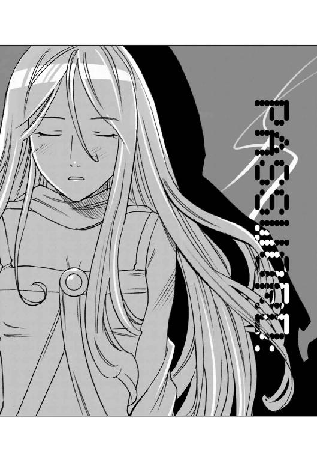
ハインツが、銀星号のどこかにインストールされていた謎の電子人格を、再び封印することを決めたその頃。
惑星エンデバーの首都、ジャマダルの官庁街に建つ七十階建てのオフィスビルの中にある『エンデバー運送業協同組合』の応接室では、フュージリアグループの総務課長であるシザムが、薄ら笑いを浮かべて、目の前にいる四十歳くらいの男に話しかけていた。
「詐欺ではありませんよ、タウンゼントさん。あなたのお買い上げになったメガフロート生成プラントのお値段は、当初の契約書どおりではないですか。あなたはその金額に納得したからサインをされた......違いますか？」
タウンゼントと呼ばれた男は怒りに満ちた目でシザムをにらんで言った。
「ああ、確かに、私はサインした。このエンデバーで造られているあのプラントは、高性能でなおかつ他のメーカーのものより安価だからだ。私はプラントの価格や性能について文句を言っているのではない......この星の輸送料金形態が詐欺だと言っているのだ！」
シザムは、ポーカーフェイスのまま肩をすくめた。
「輸送料金がいかがいたしましたか？ どう見ても正当な運賃だと思いますが？」
「何が正当なものか！ 他の星系の平均運賃の二倍以上ではないか！ こんな馬鹿な料金を取っている輸送会社などあるものか！」
「ほう......わが社の指定業者の運賃が高いとおっしゃるのでしたら、他の運送会社に依頼してみたらいかがですか？ プラント購入の際の契約には、輸送に際しては、このエンデバー星系に本拠地を置く会社を利用すること、という条項があるだけで、業者の指定はありません。自由に選択されて結構です」
タウンゼントは両手を広げて叫んだ。
「何を白々しいことを！ その業者はすべてフュージリアグループの系列会社ではないか！ 運賃はすべて横並び、差があってもほんの数クレジットだ！
君たちの会社のプラントや機械部品の価格は、確かに他の星系より安い。しかし、それは、あくまでも本体だけの値段だ。いざ、買い取ってそれを運び出そうとすれば、相場よりはるかに高い運賃を吹っかけられることになる。
安いどころか、はるかに割高につく。私は、この、価格と運賃のからくりを詐欺だと言っているのだ！」
シザムの顔つきは変わらなかった。
「苦情は運送会社に言っていただきたいものですな。運送会社がどのような運賃体系を取ろうと、それはわが社には関係のないことです。
で？ いかがいたしますか？ 契約を解除するとなると、こちらとしてもそれ相応の違約金のお支払いを請求することとなりますが？」
タウンゼントは怒りに満ちた声で言った。
「契約を結ぶときに、このからくりに気がつく者はそうおるまい。そして契約を結んだ以上、黙って高い金を払って運んでもらうか、契約解除して違約金を払うしかない。どう転んでも君たちの利益は確実ということか......帝国貴族のやり方にしてはずいぶんしみったれたやり口だよ」
帝国貴族、という言葉を聞いたとき、初めてシザムの顔つきが変わった。
「リヒト・フォン・タウンゼントくん......言葉遣いに気をつけたまえ。こう見えても私はエルキュール侯爵家につながる人間でね。世が世なら君のような地方の男爵家の人間が、対等に口をきける相手ではないのだぞ！」
シザムはそこで言葉を切ると、凶悪な微笑を浮かべて恫喝するような口調で言った。
「......不服なら、決着は決闘でつけてやってもよいのだぞ？ 名誉をかけた貴族同士の決闘ならば、たとえ殺しても犯罪にはならんのだからな......」
タウンゼントは黙ったままシザムを見つめていたが、やがて鼻息荒く立ち上がった。
「ふん、決闘などするものか、馬鹿馬鹿しい。私が買ったプラントは私のものだ。なんとしても持って帰る！」
「お好きなようにどうぞ。契約事項にあるとおり、このエンデバー星系に本拠地を置く会社でしたら、どの会社をご利用なさっても結構ですよ。
お買い求めたプラントは、搬出運搬可能な状態で引き渡すという契約事項どおりに、すでに宇宙空間輸送用の汎用コンテナ二十四個に分解して収納してございます......」
そして、シザムは嘲笑するように付け足した。
「......ただ、手荷物としてお持ち帰りするには、少々かさばるかもしれませんがね」
皮肉な微笑みを浮かべたシザムをタウンゼントはにらみつけた。
「せいぜいそうやって冷笑しているがいいさ、貴様らの言うがままになっている会社ばかりとは限らん！ 組合に入ってない貨物船だってあるはずだ！」
「残念ですな。このエンデバーの貨物業者はすべて組合に入っております。すべての仕事は組合を通すことになっておりますのでね」
自信たっぷりにうなずいたシザムに、タウンゼントはしばらく唇を嚙んで考え込んでから、
「......荷物は必ず後日受け取りに来る！ では、これで失礼する！」
鼻息荒く部屋を出て行ったタウンゼントを見送ったシザムは、しばらく黙って考え込んでいたが、やがて眉をひそめると応接セットのサイドテーブルに内蔵されている汎用端末を開いた。
通信モニターに映った若い部下に向かってシザムは静かに言った。
「このエンデバー星系の運輸局に登録されている宇宙船をすべて調査しろ。特に貨物船を重点で頼む。個人所有の自家用船もすべてだ」
『かしこまりました！』
若い部下が一礼して消えた通信スクリーンを見つめたまま、シザムは自分に言い聞かせるようにつぶやいた。
「まさかとは思うが......いや、わからん。戦争が終わって、常識知らずのよそ者が数多く流れ込んでいるからな......中には秩序もルールも理解しない、自分の利益にさえなれば良いと考える無法者もいるかもしれん」
そして三分も経たないうちに、部下からの報告があった。
『エンデバー星系の運輸局に登録されている自家用宇宙船を確認したところ、中型のコンテナ貨物船を自家用登録している者が判明しました。この者は個人営業の旅客船業者として会社を登記しております』
シザムは怪訝な顔になった。
「旅客船業者だと？ 貨物船でか？」
『はい、この業者名でさらに検索したところ、人と手荷物を運びます、というキャッチコピーを掲げて営業を始めているようです。旅客営業ですが、手荷物の最大容量は汎用貨物コンテナ四十八個となっており、間違いなく旅客輸送に名を借りた貨物輸送業者です。企業名は銀星運輸、所有船は一隻、会社登記者の名前はハヤト・フォーゲルスト・ナグモ、及びハインツ・クノール・キャンベルの二名となっております』
部下の報告を聞いたシザムは、小さく笑った。
「ふふふ、私もまだまだ未熟だな......まさか、このエンデバーで、我々フュージリアグループに逆らう馬鹿者がいるなど、想像すらしなかったよ......」
『いかが致しましょうか？ 保安上の理由をつけてこの者たちを勾引することもできますが？』
通信スクリーンの中に映った部下に向かってシザムは首を振った。
「荒事しか思いつかんようでは、この先が思いやられるな。物事はもっとエレガントに運べ。そういった超法規的な措置が許されたのは戦時中だったからだ。戦争が終わり各種の権限が行政官に移行した今となっては、そう簡単に事は運べんのだ。領主といえども帝国の法には逆らえん......忌々しいことだがな......」
シザムはそこで言葉を切ると、部下を見据えて言った。
「こいつらの情報をすべて集めろ。取引先の金融機関、借入金、船舶、従業員、知り得ることはすべてだ。その上で対処法を考える」
部下は怪訝そうな顔で聞いた。
『このような零細企業を相手するのに、そこまで調査しなくてもよろしいと思うのですが？』
「いや、念には念を入れねばならん。堅固な堤防もアリの一穴から崩れることがある。こういった連中が出て来たということは、同じような事を考える連中が出てくる可能性があるということだ。我々が為すべきは、出てくる連中をいちいち潰すのではなく、出て来られないように、その根本を絶つことだ。そのためにあらゆる情報を集めて、データ化する必要がある。そのデータが将来役に立つのだ。このフュージリアグループが定めた秩序と規則を乱そうとする無法者に、明確なメッセージを送るときにな......」
そして、シザムはにやっと笑って通信を切った。
その頃、銀星号のブリッジに陣取ったハインツは、自分の端末を使って、インストールされていた謎の電子人格の正体を確認するために、さまざまなデータベースを片っ端から調べていた。
......この、五十年前に打ち切られたピグマリオン・プロジェクトというのが、どうにも気に掛かるな。
このときに、作られたＨＱレベル電子人格は三体......そのうちの二つが消息不明か。
五十年前というと、前の大戦の頃だ。桃星回廊のこっち側に造られたローデスの橋頭堡を潰してローデスを回廊内に追い落としたときだ。
......あ、ここに、喪失理由が書いてある。
なになに？ 輸送中の事故で人格基板が損傷、廃棄か......。
まてよ？ その事故を起こした輸送船って、もしかしたらこの銀星号じゃないのか？ 確かこっちのデータベースに......。
ハインツが記録を調べようとしたとき、ブリッジに、普及品の船舶管理用電子人格特有の無味乾燥な声が響いた。
『タウンゼントグループの社長様から、メールが来ております』
ハインツは顔を上げた。
「......タウンゼントグループの社長？ あんな遠くの星系の会社の社長が何の用なんだろう？」
独り言をつぶやきながら、メール画面を開いたハインツの目が、いきなり見開かれた。
それは、荷物と人を運んで欲しいという、依頼のメールだった。
ハインツはナビゲーターシートから立ち上がって、ブリッジでぴょんぴょんと飛び跳ねた。
「やった！ やったぞ！ 仕事だ仕事だ！ 初仕事だ！ それも一流企業の仕事だぞ！」
......だが、事はそうは簡単に運ばなかった。
この日、いつものように軌道エレベーターの事務所での研修を終えて、銀星号に帰ってきたリアンは、自動調理器のあるギャレーで、ブリッジにいるハヤトたちのためにコーヒーを入れていた。
......えーと、ハインツさんさ薄めのブラックでマグカップにたーんと。ハヤトさんはミルク多めで砂糖は少しだっただわさ。
コーヒーメーカーのサーバーにコーヒーが落ち始めると、狭いギャレーの中にコーヒーの芳香が充満した。
サーバーの中に溜まり始めた焦げ茶色の液体を見ていたリアンは、ふと気がついた。
......あ、そうだ。ハヤトさんたちさお客さんに見立てて、注文を確認するセリフにして、口に出して練習してみるだわさ。
リアンは小さく咳払いをした後で、小声でつぶやくように言った。
「......こちらのお客さまは、薄めのブラックコーヒーの多め。そしてこちらのお客さまは、ミルクを多めで、お砂糖を少々でよろしいですね？」
言い終わったリアンは、ちょっと首をひねった。
......なんか、言い方が堅いだわさ。もっとこう、親しみを込めた言い方さしてみようかな。
「......こちらのお客さまは、薄めのブラックコーヒーをたっぷりと。そしてこちらのお客さまはミルクを多くして、お砂糖を少しお入れすればよろしいのですね？」
......うん、こっちの方が言い方さ柔らかいと思うだわさ。
リアンはにっこり笑って小さくうなずいた。
あの、ひどかった帝国北東部の訛りと方言は、すっかり消え、イントネーションもまったく問題が無かった。
それは毎晩の催眠学習と発音練習のおかげであったが、それを可能にしたのは、何といってもリアンの努力に他ならなかった。
ハヤトたちの注文どおりにコーヒーを調整していたリアンの耳に、ブリッジにいるハヤトたちの会話が聞こえて来たのはそのときだった。
「営業航海のフライトプラン認可が下りないってどういうことなんだ？」
それはハヤトの声だった。
「船の耐久証明は取った！ んでもって客船として登録して、受理されて、この銀星号は客船として登録された！ 銀星運輸という名前で会社も登記して、営業許可も出た！ なのに、どうして営業航海のフライトプランの認可だけが下りないんだよ！」
ハインツが憂鬱な声で答えた。
「旅客営業船としての基準を満たしていないという理由で、運輸局の行政官がフライトプランを承認しないんだ。他の許認可はすべて帝国政府の出先機関が出している。実際には代行業務だが、帝国政府の名前で勝手なことは出来ないから許認可は出さざるを得ないんだが、フライトプランの許認可だけは、出発地の行政官の裁量なんだ。エンデバー政府の運輸局は、指摘事項が改善されない限りフライトプランは許可できないと言ってきたんだ」
「なんだ、だったらその指摘事項をクリアしてしまえばいいだけのことじゃないか。どこを直せばいいんだ？」
ハヤトの声が少し明るくなったが、答えるハインツの声は変わらなかった。
「指摘事項はこの銀星号の設備じゃない。乗組員の......リアンのことを問題視している」
......え？ 私？
思わず振り返ろうとしたリアンの手が、そこに置かれていた空のコーヒーサーバーに当たった。
あ、いけない！
床に落ちたコーヒーサーバーは、クッションフロアのおかげで割れることなく一回バウンドしたが、運が悪いことにそのまま方向を変えて自動調理器にぶつかって、そこで派手な音を立てて割れた。
「おい、どうした？ 大丈夫か？」
ハヤトの声にリアンは慌ててバレリア訛り丸出しで答えた。
「すまんこってす！ コーヒーサーバーさ割ってしまっただよ！」
「そんなもの予備がある、怪我しなけりゃそれでいいよ。それより、ちょっとこっちに来て、一緒にハインツの話を聞いてくれ」
「はい！ 今さ行くだわさ」
リアンが壁面にある自動清掃装置のボタンを押すと、ギャレーの壁面の下から半球形の清掃ロボットが二台出てきた。
「ハンプとダンプ、仕事押し付けちゃってごめん。後はお願いするだわさ」
二台のロボットにそう言ってぴょこんと頭を下げると、リアンはコーヒーの入ったトレイを持って、ブリッジに向かった。
リアンの入れたコーヒーを一口飲んでから、ハインツは話しはじめた。
「当局が指摘しているのは、要するに接客係が、素人同然では乗客の安全が保てない。ということなんだ......いわば資格の部分なんだ」
「資格？ アテンダントに？」
怪訝な顔をするハヤトを見て、リアンは小さくうなずいた。
「ええ、空間客室乗務員という国家認定資格があるんです。宇宙船、軌道エレベーター、などの宇宙空間を乗客を乗せて航行する乗り物に同乗するアテンダントは、この資格を持っていることが望ましい、とされています......でも、軌道エレベーターの事務局の人や先輩アテンダントさんから、法律には『この資格を持っていることが望ましい』と書かれているだけで、絶対必要というものじゃない、だから、この検定に準じた社内資格でも問題は無いと聞きました！」
イントネーションに気をつけながらリアンが言うと、ハインツは手に持っていたコーヒーカップをコンソールの上に置いて、イライラしたようにブリッジの中を歩き回り始めた。
「そうだ、確かに運輸規則には『望ましい』と書いてあるだけだ。資格が必要とは書いてない......リアンの言うとおり、このエンデバー宇宙港の軌道エレベーターサービス社に勤務しているキャビンアテンダントでも、有資格者は十パーセントしかいない。いわゆる指導員だけで、一般乗務員は社内資格しか持っていない」
「それって、つまり俺たちに難癖つけてイヤガラセしてるってことか？」
憤慨したように言うハヤトを見て、ハインツは首を振った。
「いや......目的はイヤガラセなんだろうけど......言っていることにも一理はあるんだ。今、リアンが受けているのは軌道エレベーター会社の社内検定をもとにしたプログラムだが、正規の講習じゃない。好意で、それもボランティアで教えてもらっているに過ぎない。
資格という観点から見れば、これは正規な社内講習じゃない。講習が終わってもリアンは無資格のアルバイトみたいなものなんだ。指摘事項の解決にはならない」
ハインツの言葉を聞いたリアンは、自分の足元がすうっと消えていくような気がした。
......知らなかった。あたい、この講習を受ければ、アテンダントになれるって思い込んでいただわさ。
でも......そうなんだ。あたいが、いくらがんばっても、本気で勉強しても、あたいは本物にはなれないんだ。
資格を持っていないあたいは、アテンダントのコスプレをしている、ただのアルバイトなんだわさ......。
青ざめて下を向いたリアンを見て、ハヤトがたまりかねたように、ハインツに訴えた。
「なんとかならないのか？ こいつ......ずーっと頑張ってきたんだぜ。講習から帰ってきてからも毎日毎日夜遅くまで発音練習やったり法律の本を読んだり......なんとか資格を取らせてやる方法はないのか？」
ハインツは両手を広げて叫んだ。
「資格を取るには試験を受けなくちゃいけない！ それも国家試験だ！ 専門学校に通って勉強して来た人や、アテンダントとして仕事に就いている人が受験しても半分以上が落ちると言われているめちゃくちゃ厳しい試験なんだぞ！ 昨日今日アテンダントの真似事を始めたような女の子がホイホイ受けてあっさり合格するような、そんな甘っちょろい資格じゃないんだ！」
「そりゃあ、確かに難しいかもしれないけど......やってみなくちゃわからんだろうが！」
言い返したハヤトを、ハインツは正面から見据えた。
「お前は、試験の内容を知らないからそんなことが言えるんだ。俺はデータベースでこの試験のことを調べてみた......すごい内容だ。軍にいた頃、宇宙船の緊急脱出訓練をやったことがあるだろう？ 覚えているか？」
「あ、ああ覚えている。いきなり真っ暗にされて、重力コントロールも切られて、無重力になった宇宙船の中を手探りで救命艇まで行く訓練か......」
ハインツはうなずいた。
「そうだ、空間客室乗務員の試験には、実地試験があるんだ。事故状況下での乗客の救助を想定した真っ暗な宇宙船の中で乗客の救命艇への誘導をやらされる。訓練を受けている兵士だけだって大変な状況なのに、まったく何の訓練も受けていない乗客を誘導して、救命艇まで連れて行って脱出させるんだぞ。それも規定時間内に。これがどんなに大変なことかわかるだろう？ だから、大手の旅客会社はキャビンアテンダントに社内講習を受けさせて、社内資格ということで、この条項をクリアしているんだ」
ハヤトは両手を広げて食い下がった。
「......お前の言っていることはわかった！ この試験がむちゃくちゃ難しいってことも何もかも！......でもよ、じゃあどうするんだ？ あきらめろって言うのかよ！ ここまで来て......銀星号を手に入れて、準備万端調って、お客さんから荷物を運んでくれって注文を受けて、あのいけすかないフュージリアグループの連中の鼻を明かしてやれるっていうときに......それ全部あきらめちまうっていうのか！」
「仕方ないだろう！ こればっかりはどうしようもないんだ！」
ハインツがそう言い返したとき、リアンが叫んだ。
「私......試験を受けます！ 五日後にある、空間客室乗務員検定を受けます！ 受けて、合格してみせます！ だから......お二人もあきらめないで下さい！」
「なんだって？」
「おい、それってどういう意味だ？」
ハヤトとハインツは目を丸くしてリアンを見た。
「この試験は年に三回しか行われません。その一つが五日後に、このエンデバーステーションの三号埠頭で行われます。先輩から言われました、参考になるからぜひ見学に行って来いって......」
そして、リアンは決意をこめて言葉を継いだ。
「......でも、ハインツさんの話を聞いて決めました。私、見学には行きません......試験を受けます！ 受験申し込みはまだ受け付けているんですよね？」
ハインツは驚いたように顔を上げて聞いた。
「あ、ああ、ネットでの申し込みは、確か今日までだ。今なら間に合うが......でも、本気か？」
「本気です！ だって、私が資格を取らなければ、許可が出なくて、許可が出なければ航海ができないわけで。つまりそれは全部私が結果を出せるかどうかということにかかっているわけでしょう？ だとしたら、私がやるしかないじゃありませんか！」
ハヤトはつぶやいた。
「でも、あと五日しかないぞ......」
リアンは、胸を張って言った。
「大丈夫です！ 二十四時間あれば宇宙船だって直る、という有名なコトワザがあります！ 私には五日もあるんですから！」
ハインツはしばらく無言でリアンを見つめていたが、やがて小さく微笑んだ。
「......わかった。申し込もう。はっきり言って、俺は最初、君に出会ったとき、あまりいい印象を持っていなかった......ハヤトはそうでもなかったみたいだけど、俺には君は田舎者の頑固で視野の狭い女の子にしか見えなかった。
でも、俺は間違っていた。君は俺たちの夢を乗せたこの銀星号を支える立派な仲間だ......俺は君を信じる。そして君を応援する。がんばれ！」
「はい！」
リアンは、目に涙を滲ませて、力強くうなずいた。
その日の夕方。
惑星エンデバーの首都の空は夕日に染まっていた。
黄色と赤と、そして少し紫が混じった色に染まった高層ビル群を見下ろす高台に、夕日に照らされて黄金のように輝く豪奢な宮殿のような建物が建ち並んでいる。
帝国皇帝の宮殿を模して造られたその豪奢な建物は、このエンデバー星系を始めとする七十以上の星を領地とするエルキュール侯爵家の一族が住まう広大な屋敷だった。
その屋敷の一室で、シザムは、部下からの報告を受けていた。
「そうか、無理を承知で受験するという選択肢を選んだか......彼らについての報告書を読んだが......ひどいものだ。たった三人しか従業員のいない零細企業。それもエリート社員ならいざしらず、その正体は二十歳前後の復員兵コンビに、帝国北東辺境の農業惑星出身の田舎娘。乗り込む船ときたらスクラップ業者から買い求めた再生船......まあ、銀行に借入金が無いということは誉めてやってもいいが、どう考えても会社ごっこだ。半年もしないうちに行き詰まるのが見えている。若者が自分の未来を信じる姿は美しいものだが、これほど身の程知らずだと実に滑稽だな......案ずることは無いと思うが、まあ後は貴様に任せる」
『かしこまりました、では』
部下は一礼すると、通信を切った。
シザムが見下ろしていた、高層ビル群のただ中にあるそのオフィスでは、通信を終えた部下が大きく息を吐き、自分のシートに身を預けてつぶやいた。
「ふう......シザム閣下の気まぐれには困ったもんだぜ。フュージリアグループに逆らう可能性がある連中をとことん調べろ！ と言っていたくせに、調べたデータを見せたら、好きにしろ、任せた、だもんなあ......」
そして、部下はサブウィンドウに表示されたハヤトとハインツとリアンの写真に視線を投げて肩をすくめた。
......まあ、天下のフュージリアグループが、こんな若僧どもを相手に本気になるわけないよな。とはいえ、俺はこいつらを相手にしなくちゃならん......ただでさえ仕事が多いのに、いちいちやってられない。こんな仕事は下請けに任せるに限る。
部下は身を起こすと、通信モニターを立ち上げた。
首都から遠くはなれた衛星軌道上のエンデバー宇宙港の片隅にある一室で、一人のくたびれた雰囲気のサラリーマン風の男が、シザムの部下から連絡を受けていた。
『......というわけで、こいつの受ける試験を妨害してくれ。妨害なんかしなくとも到底合格するとは思えんが、まあ念には念をってとこだろうな。工作費は例によって別枠で回す。領収書はいらんが、効果的に使え』
「わかりました......こいつらって、あれですよね。宝くじ当てたラッキーボーイ......」
『ああ、そうだ。せっかく二十二億も当てたんだ、好きに使って遊んで暮らせばいいのに、会社ごっこなんかに手を出しやがるからこんなことになるんだ。かわいそうだが社会の仕組みというのをしっかり教えてやるのも大人の仕事だからな。後は頼んだぞ』
「了解しました」
一礼して通信を切った下請けの職員は、デスクの脇に置いてあったタバコを一本口にくわえると、火をつけて煙をため息とともに吐き出した。
......社会の仕組みを教えてやるのが大人の仕事か。
下請けの職員は、苦笑いしてつぶやいた。
「せちがらい世の中だぜ......まったく」
五日後。ハヤトは一人でリアンの試験を見届けるために、客室乗務員検定が行われているエンデバー宇宙港の三号埠頭に来ていた。
ハインツは、フライトプランの申請書の客室乗務員に有資格者がいないという指摘事項に対する改善事項報告書を作成するために地表に降りており、身体が空いていたのはハヤトだけだったのだ。
いつもなら大きな貨物船が何隻も停泊している埠頭だが、この日は、すべて他の埠頭に移動させられたのだろう、貨物船の代わりに大きな気密ドックが設営され、その中に試験用に改造された小型旅客船が浮かんでいた。
午前中に筆記試験と、口頭審問試験を終え、いよいよ午後からこの小型旅客船の中で、緊急脱出時の乗客誘導に関する実地試験が行われることになっている。
三号埠頭の入り口には、関係者以外立ち入り禁止のフェンスが張られており、その外側には、ハヤトたちの他にも、受験者の家族や企業の担当員らしい人たちが集まって、不安そうに気密ドックの中に浮かぶ試験用の旅客船を見つめていた。
......へえ、結構ギャラリーがいるんだな。
この検定に受かればどんな宇宙航行会社の試験でも一発合格だから、キャビンアテンダントになりたければ、この試験を受けるのが一番の近道だって話だ。受験者の家族や関係者が気になるのも無理は無いよな。
あたりを見回していたハヤトは、その中に、金髪のすらりとした美人がいることに気がついた。
......あれ？ あの人は確か、俺がイカダ乗りを一日でクビになって地上に降りたとき、軌道エレベーターのファーストクラスにいたアテンダントさんだぞ。あの人がリアンの指導責任者を買って出てくれたって話だったな......。
そのとき、ハヤトの視線に気づいたのだろう、金髪のアテンダントが、微笑みを浮かべてハヤトのところにやってきた。
「こんにちは、お久しぶりね」
「あ、どうも......」
ハヤトは頭の後ろに手をやって、首を少し前に出すような感じで頭を下げた後で、そっと聞いた。
「あの......どうですか？ 彼女......見込みはありそうですか？」
アテンダントは、微笑みを浮かべたまま聞いてきた。
「あんな子、どこから見つけてきたの？ いまどき珍しいわね」
リアンのことを田舎者だと馬鹿にされたような気がして、ハヤトは思わずリアンをかばった。
「確かに田舎の星から来た子ですけど、すごい努力家なんですよ、あいつ。素直だし、一生懸命だし......今回の試験はダメかもしれないけど、時間があれば絶対に合格すると思うんです！」
アテンダントは笑いながら首を振った。
「大丈夫、信じなさい」
「え？」
怪訝な顔をするハヤトを見て、そのアテンダントは黙って微笑んで見せた。
そして......実地試験が始まった。
最初に試験用の旅客船に乗り込んだ受験者の班は、アクシデントに対応しきれず、救命艇を発進させる事が出来なかった。
次の班は、救命艇に乗り込んだところで時間切れとなってしまった。
そして、三番目の班の試験が始まった。
ハヤトの見ている前で、非常用のアラームが鳴り響き、旅客船の脇にある救命艇を収納しているハッチが開いた。
次の瞬間、爆発音と共に固定用のボルトが爆破され、救命艇はそのまま旅客船から離れた。
それを遠くから見ていた受験者の関係者からどよめきが上がった。
「成功したのかな？」
ハヤトがつぶやくと、横にいたアテンダントは、小さく首をかしげた。
「うーん、確かに時間内だけど、ちょっと早すぎるわね。規定時間より二分以上短いってのは、もしかすると手順の見落としとか、乗客の積み残しとかがあるかもしれないわね。積み残しはそれだけで失格だから、危ないわよ」
「厳しいんですね」
「試験用に起こすアクシデントは、事故をそのまま再現するから、乗客役の中には気を失う人も出るし。一回一回全部状況が違うのよ。暗記でどうなるものじゃないわ、本当に機転が利く人じゃないと対応しきれないのよ」
「へえ、すごいなあ、アテンダントさんってみんなそういった試練を乗り越えてきた人たちなんですね」
「そうよ、もっと尊敬しなさい」
「はい、そうします」
素直に頭を下げたハヤトに、金髪のアテンダントは、ふふっと声を上げて笑った後で、悪戯っぽい目になった。
「リアンに、ちょっとジェラシー感じちゃうわね」
「え？」
「まあいいから応援してあげて、次の班が彼女の班よ」
「あ、はい！」
ハヤトは試験用の小型旅客船を見つめてリアンの顔を思い浮かべた。
......がんばれよ、リアン。お前の努力はみんなが認めている。だからお前は自分の能力を信じればいいんだ。お前ならできる。
ハヤトの想いを込めた視線の先にある試験用のシミュレータ装置が組み込まれた旅客船の客室に、リアンはいた。
客室は、三人掛けのシートが二列に並んでいる小型シャトルタイプのもので、シートには乗客役の男女あわせて二十人ほどの人間が座っている。
彼らは全員検定官であり、アクシデントのシチュエーションによって、パニックを起こしたり、食って掛かったりする役割があらかじめ決められているのだ。
リアンを始めとする四人の受験者は、規定のユニフォームを着て、客室の前後にあるアテンダント用のシートに座っていた。
この四人の受験者は、受験番号でランダムに選ばれており、試験開始前に検定官からそれぞれに誰がどこのポジションにつくのかを指定される。
受験者同士で決めると不公平が出るため、検定官があらかじめ指定するわけである。そしてポジションが決まった四人には一時間の準備時間が与えられ、アクシデント時にどう動くか、チームワークの段取りを決めるのだ。
アテンダント用のシートに座ったリアンは自分を落ち着かせるために深呼吸をしながら考えていた。
......試験状況開始、というアナウンスがあるとは限らないって、先輩たちは言っていただわさ。もしかしたら、今、この瞬間に灯りが消えて、重力コントロールが切断されるかもしれないだわさ。
リアンがそう思った次の瞬間。
いきなり大きな爆発音とともに客室が暗闇となり、室内に悲鳴が響き渡った。
一気に身体の重さが消えていくのと同時に、客室の中に乗客の手荷物や、紙コップの飲料などが浮かび上がり、支えを失った乗客がパニックになったように手足を振り回し始めた。
気がつくと客室後方の隔壁がひしゃげて、その隙間から白い煙のようなものが室内に侵入しはじめている。
......来た！ これは隕石衝突と、エンジン爆発の状況だわさ！
リアンは、シートから立ち上がると、息を吸って下腹に力を込めて、乗客に呼びかけた。
「この客船には救命艇が備えてございます！ これより安全な救命艇にお連れしますので、どうかシートにお戻りになって、シートベルトを着用してください！」
そして、受験生の仲間と目配せしてから打ち合わせどおりに動き始めた。
......乗客は？ 大丈夫ね、怪我人発生とか、失神者の想定は無いみたいだわさ。
リアンは小さくうなずくと、後方の座席の乗客に声をかけた。
「私が救命艇までご案内します。手荷物は持たず、手を繫いでゆっくりとお歩き下さい。私たちアテンダントの靴は、床に固着します。バランスを崩した場合は私たちにおつかまり下さい。私たちが皆様の手すりになります！」
乗客たちに呼びかけながら、前方にある救命艇へと繫がる非常口のハッチを見ると、受験者の仲間が、手はずどおりハッチを開けていた。
リアンはちらっと腕時計に視線を走らせた。
......大丈夫、規定時間内だわさ。このまま乗客がパニックを起こさなければ無事に全員を救命艇内に誘導できるだわさ！
そして、リアンたちは、わざとらしく悲鳴を上げたり、その場にしがみついて動かなくなる乗客役の検定官を優しくなだめすかして、やっとのことで救命艇に全員を収容した。
リアンのポジションは最後に船内を点検し、取り残された人がいないかどうかを確認して、非常口をロックするという役目だった。
小型の携帯ライトで客室の中を照らしながら、声をかけて回り、一人も残っていないことを確認したリアンは、非常口から救命艇に通じる連絡通路に入ると、そこで救命艇に乗っている仲間の受験生に大声で報告した。
「客室確認終わりました！ 全員移乗終了！ テイルポジション確保です！」
「了解！ 搭乗終了後に救命艇のハッチの閉鎖をお願いします！」
「了解です！」
リアンはそう答えると、すばやく救命艇に乗り込んだ。
そして、救命艇のハッチを閉め、内側にある二本のロックバーを回して気密ロックをかけようとした。
ハッチの気密ロックレバーは時計の長針と短針のような二本のレバーを回し、ちょうど十二時を指すように重ねることで気密ロックがかかるようになっている。
緊急時に作動できるように油圧などの動力を使わないのだ。
しかし、ロックバーの短い方が、何度ロックの位置に回しても、固定しなかった。手を離すとすぐに戻ってロックが外れてしまうのだ。
......あれ？ どうしたんかな？ 故障かな？ でも、ここのバーが固定できんと、ハッチの気密ロックができないだわさ！
ハッチの扉の上部についているセンサーランプは、気密が完了していないことを示す赤い表示のままだった。
ロックバーを回し二本のバーを重ねると、表示は気密状態を示すグリーンの表示に変わるのだが、手を離すとロックバーがずれてすぐに赤い表示になってしまう。
......どうしよう？ ずっと押さえておくわけにはいかないだわさ！ ハッチを閉めて、気密確認をして、指定されたシートに座ってベルトを締めなくちゃ救命艇は発進出来ないんよ！
......なしてレバーがロックできんだわさ？ これが故障だったら検定官に申し出れば、試験は中止になるかもしれんね。
リアンは、救命艇に乗り込んだ検定官に向かって申告しようとして思いとどまった。
......いんや、違うだわさ。今まで何のアクシデントもないまま、ここまで来たってことは......きっとこれも想定なんだわさ！
だが、それは想定ではなかった。
救命艇のハッチは、シザムの部下によってロックできないように細工が行われていたのである。
それは、レバーと連動するカムの部分に信号を受けると作動する小さな部品を仕込み、ロックレバーのロックを解除してしまう、というもので、フュージリアグループの息が掛かった検定官が、リアンの試験の最後の段階、つまり救命艇が発進した後に細工のスイッチを入れる手はずになっていた。
ハッチのロックをしっかりしておかなかったために、ハッチの気密が外れ救命艇内の空気が漏れる、という致命的なミスを演出するつもりだったのだ。
しかし、シザムの部下から、この演出の指示を受けた検定官は躊躇した。
この試験が実際に真空の宇宙空間で行われていたならば、こんな演出は出来ない。ミスは本当の事故につながり、間違いなく死者が出るだろう。これは大気のある気密ドックの中で行われる試験だからこそできる演出である。
とはいえ、気密ドックも完全ではない。危険性は常にある。
フュージリアグループから貰った金では、とても命をかける気はしなかった検定官は、最初からスイッチを押し、救命艇のハッチがロックできないようにした。
つまり、リアンがハッチが閉められずにもたもたしているうちに、時間切れになることを狙ったのだ。
救命艇の中に乗り込んでいる受験者の仲間から、切羽詰まったような声が飛んだ。
「気密確認、どうなっていますか？ ハッチのロックを早く！」
時間は刻々と過ぎていく。
......どうすんの？ どうすればいいんね？
呆然とするリアンを見て、乗客に扮した検定官が、思わずにやっと笑ったそのとき。
リアンの脳裏に、初めてハヤトと街を歩いた時に言われた言葉が浮かんだ。
『......君はいざというときは、俺やハインツなんかよりずっと力持ちになれるんだねえ。うん、すごいよ。たとえば、非常口のハッチが変形した隔壁とかに挟まって開かなくなっても、君ならなんとかできるかもしれないぜ......』
......そうだ、これは、あのとき、ハヤトさんが言ったのと同じ事なんだわさ！
私にはこの問題を解決できる力があるんだわさ！
リアンは何かを決意したようにうなずくと、自分のみつあみに手をやり、先端部を解いた。
そして、大きく息を吸うと、ハッチのロックレバーをがっしりつかんで、それに力を込め始めた。
ロックレバーは、宇宙船の船体を構成している超硬質軽合金と同じ材質で作られている。
「なんとか......して......みせる......だわさ！」
顔を真っ赤にしたリアンの口から、おもわず故郷訛りが漏れた。
そして、数トンの重さに耐えられるはずのロックレバーが、ゆっくり曲がり始めた。
そして、十秒ほど過ぎたとき、リアンはロックレバーから手を離して叫んだ。
「ハッチロック確認！ シートにつきます！」
リアンが走り去った後のハッチを見た検定官は、自分の目を疑った。
救命艇のハッチの真ん中にある二本のロックレバーが、まるで荷札の針金のようによじりあわされて十二時の方向を指し、ハッチについている気密表示のセンサーランプがグリーンに輝いていた。
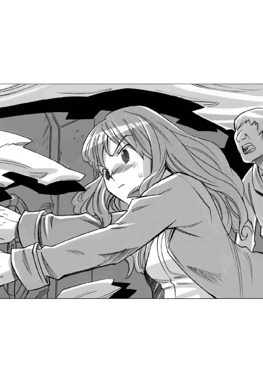
......馬鹿な！ ロックレバーをひん曲げるだと？ あの娘は化け物か！
救命艇の船内には自動発進プログラムが開始した秒読みの声が流れていた。
リアンは、その声を聞きながら、自分の座席で対衝撃姿勢を取ったまま心の中で祈った。
......このまま規定時間内に脱出が成功できますように！
やがて、秒読みが終わった......次の瞬間、救命艇と客船とを繫いでいた固定ボルトが爆破される鈍い爆発音と衝撃が救命艇の船内に伝わった。
救命艇はぐらりとゆれた。それは無事に客船を離れ、脱出に成功したことを意味していた。
乗客として乗り込んでいた初老の検定官の一人が立ち上がって、ゆっくりと言った。
「状況終了だ。おめでとう、諸君らは無事に乗客を脱出させた」
救命艇のシートに座った他の検定官が笑いながら拍手する、その音を聞きながら、リアンは大きくため息をついて肩の力を抜いた。
......終わった。
でも......合格できたかどうかはわからんだわさ。結果が出るのは判定会の終わった後だわさ。
リアンがやってのけたハッチロックのレバー固定について、判定会議は紛糾した。
「ロックレバーが故障していたにせよ、それを破壊して、無理やり試験を続行させるというのは、受験者にあるまじき行為です！ これが許されて試験に合格したとすれば、試験に合格するためなら何をしてもいいという悪しき前例をつくることになります！ 彼女は不合格とすべきです！」
「いや、それもそうだが、彼女は高重力惑星出身者だったと言うではないか。通常重力惑星出身者や、低重力惑星出身の、力の弱い者には解決できない問題を自分の怪力だけで解決して合格したのでは、出身惑星の差による差別を認めたことになる。その点からも彼女は不合格にすべきだ！」
「いや、それよりなにより、気密ハッチの故障というのは、この試験のシチュエーションの根幹に関わる部分だ。ここが正常に機能していなかったという時点で、この試験そのものが成立していなかったということではないかな？ つまり、今回の試験は、合格、不合格以前に、試験不成立ということで、再試験が妥当ではないだろうか？」
判定会議に出席していた検定官たちがざわついた。
隣の人間と小声で交わす言葉の中に「うむ......」「そう言えばそうか......」という言葉が混じっていた。
フュージリアグループに抱き込まれていた検定官たちは、思わず心の中でほくそえんだ。
再試験になれば、今度こそ不合格にできる。もう、あの怪力娘にいいようにはさせない。
リアンの不合格を主張していた検定官が手を挙げて発言した。
「えー、今回の試験は不成立ということで、再試験を行うという、意見に賛成します。後日論議を呼ぶことになるおそれがある案件ですので、仕切りなおしということで異論はありません」
判定会の雰囲気が試験のやり直しに傾いたそのとき、一人の女性の検定官が発言を求めた。
彼女はアテンダント出身で、厳しい判定を下すので有名な検定官だった。
会議の面々が注目する中で、その検定官はゆっくりと言った。
「皆さんは何か勘違いをされていらっしゃるようですね。この試験は、実際に起こるアクシデントに受験生がどう対応するか、その能力を計るものです。
実際の業務では何が起こるかわかりません。いくら法律の条文が暗記できても、規則やマニュアルを諳んじることができても、実際のアクシデントには何の役にも立ちません。その現場に立ったとき、とっさに、自分が何をすればいいのか、どうすればいいのか、最善の方法を選択し実行する能力こそが求められるのです。
......だとすれば、今回の試験で彼女がやってのけたことは、評価にこそ値するものの故障を理由に不合格もしくは再試験する理由にはならないと私は思います。
確かに、救命艇のハッチのロックが故障していた、という状況は試験の想定に含まれておりません。しかし、その想定に無いアクシデントですら、彼女はクリアしてのけたのです！ 確かに高重力惑星出身者にしかできない方法かもしれません。しかし、それが必要とされているときに、自分の持てる限りの能力を使って、そのアクシデントをクリアすることのどこが不適当なのですか？」
女性検定官は、そこで言葉を切ると、いっしょに救命艇に乗り込んでいた検定官たちを見まわした。
「もし、あれが試験ではなく、本当の事故だったらどうなったでしょう？ 私たちは全員、あそこで死亡していたはずなのです！ 私たちを助けたのは彼女の能力以外の何物でもありません！ その応用力と行動力こそが、宇宙空間における客室乗務員に最も求められている素質ではありませんか！」
その女性検定官はそこで言葉を切ると、会議に臨んでいる面々を見まわして言った。
「私は彼女の合格を強く主張いたします。もし、これが認められなければ、私はこの試験は形骸であると言わざるを得ません！
今回の試験に関して、一部の検定官に対し、企業体の幹部から働きかけがあったというウワサを聞いておりますが、もし仮にそのようなことが本当で、試験の公平性と中立性が失われるようであれば、それはすなわち私たち行政官の立場が地に落ちたということであります。
確かに企業体はこのエンデバー星系にとって無くてはならない存在です。しかし、我々は彼らの私兵でも奴隷でもありません！」
リアンの不合格を主張していた検定官は、無言のまま目をそらした。
「これが、そちらの、客室乗務員に有資格者がいないという指摘事項に対する改善事項報告書です。このとおり有資格者となりましたので、この指摘事項にあっては撤回していただきます......よろしいですね」
ハインツが差し出した書類の束の一番上には、リアンの合格認定書のコピーが誇らしげに載せられていた。
しかし、担当の行政官は書類を受け取ると、その表紙をちらっと見ただけで、そのままぽい、と脇に置いて椅子の背もたれにふんぞりかえった。
「ええ、この件については改善を認めましょう。指摘事項は撤回します......しかし、それでもそちらの出しているフライトプランに承認は出せません」
ハインツは行政官に食ってかかった。
「それはどういう意味ですか！ あなたは先日、こちらの申請に対して、こう言ったはずです。指摘事項がなくならない限りフライトプランは承認できないと！ その指摘事項はこうやってクリアしました！ なのになぜ承認しないのですか！」
行政官は、ハインツを小馬鹿にしたような目で見て言った。
「新しい指摘事項が見つかったからですよ。以前の時には気がつかなかったのですが。これもまた客船を運航する際の安全確保に関わる重要な案件でしてねえ。これがクリアされないかぎり、こちらとしても承認するわけにはいかないのですよ」
「ふざけるな！ そんな話があるか！ そんな風に次々に問題点を探し出して、認可を出さないつもりなんだろう！」
おもわず立ち上がって叫んだハヤトの顔を見て、行政官は吐き捨てるように言った。
「......ちんぴらと変わらんな、君たちは。文句があるならお帰りいただこうか。我々は法と規則にのっとって仕事をしているんだ。君たちのような秩序を乱し、規則を守らない人間のお相手をしている暇はないんだ」
「ハヤト、落ち着け」
「ああ、わかった......つい......」
たしなめられてしぶしぶ椅子に座り直したハヤトに目配せした後で、ハインツは行政官に向き直った。
「わかりました。では、問題となっている新たな指摘事項をお伺いします」
行政官は、一枚の書類を取り出してハインツに投げつけるように示した。
「これだ、君の銀星号には乗組員が足りない。緊急時のために当直員を確保しなければ、安全基準を満たしているとは言えない」
ハインツは驚いたように顔を上げた。
「それは変です！ 改正船舶管理規則では、規定以上の機能を持つ船舶管理用電子人格を搭載してあれば、船舶運航に関する乗務員は二名いればいい、ということになっております。その指摘事項はおかしいのではありませんか？」
行政官は黙って端末を開くと、その画面をハインツに見せた。
「これは、このエンデバー星系の条例や細則を定めた類典だが......確かに改正船舶管理規則ではそうなっている。しかし、こっちの旅客用船舶管理細則には、乗客の安全性を確保するために、最低限の人員を搭乗させることが望ましいと書かれている。これだ、この部分に書かれている。読めるかね？」
画面を見たハインツは、黙ってうなずいた。
「よろしい、そして、その最低限の人数については明確に規定は無い。それを決めるのは責任者であるこの私だ」
行政官は、小馬鹿にしたような目でハインツとハヤトを見て、にやにや笑いながら言葉を続けた。
「私は、船の年式の古さから勘案して、君たちの船には船長と航海士を除いて最低限十二名の乗組員が必要であると判断した。つまり、君たちはあと十一人どこからか乗組員を探してくる必要があるということだ、おわかりかね？ わかったらさっさと帰ってくれ」
条文を見たままハインツは黙って動かなかった。ハヤトはそんなハインツを見たまま同じように黙り込んでいた。
行政官は二人の沈黙を敗北の意思と取ったのだろう、勝ち誇ったように言った。
「君の船は船長と航海士を除いて十二人の乗組員が乗り込めるようになっているな。簡単なことだよ、十二人乗せればいい......そうすれば私はいつでも運航許可を出そう。もっとも、そうなるとお客さんを乗せる場所が無くなってしまうな。客を乗せられない客船に意味は無いんじゃないかね？ まあ、廃業届けはいつでも受け付けるから安心したまえ」
その言葉を聞いたハインツは、ぱっと顔を上げて行政官を鋭い目で見た。
「今のお言葉に噓はありませんね？」
「え？ なんのことだね？」
あわてたように聞いた行政官にハインツは畳み掛けた。
「十二人の乗組員がいれば、運航許可を出す、という今のお言葉です」
行政官は、一瞬言葉に詰まったが、すぐに虚勢を張るかのように笑ってうなずいた。
「えー、ああ、うむ、十二人乗れば客室は無いから営業はできないしな......運航許可は出してやろう......従業員の慰安旅行にでも行くのかね」
ハインツは静かに微笑んで答えた。
「この旅客用船舶管理細則に言うところの乗務員の数は、電子人格も含まれるのですよね」
「え？ あ、うむ、そうだ......だが、船舶管理用電子人格は、その機能によって乗組員の人数に換算される。この換算表にあるとおり、君の船に搭載されている普及型船舶管理用電子人格の機能換算は乗務員一名となっている。つまり君の船はあと十人の乗組員をそろえなければならない。アテンダントが使っている部屋の他に空いているのは十一人分だから、どっちにしろ、客は乗せられんよ」
行政官は一瞬驚いたが、すぐに余裕を取り戻した。そして、その言葉を聞いたハインツの表情にも余裕があった。
「そうですか、わかりました。電子人格の機能による人員換算は、その表に従えばよろしいのですね？ そして、あの船に船長と航海士を除いて十二人の乗組員が乗り込めば、フライトプランは承認してもらえる、これで間違いはないですね？」
行政官は、怪訝な顔になると、手持ちの資料を隅から隅まで食い入るように見て、自分の判断に間違いはないことを確認した後で言った。
「あ、ああ、そのとおりだ......しかし、いくら頑張って電子人格の機能をアップしても換算できるのは二人がいいところだぞ......いい加減に諦めたまえ」
ハインツは、にっこり笑って一枚の書類を取り出して行政官に突きつけた。
「あ、その銀星号の検査書類は古くなってます、実は船舶管理用電子人格を入れ替えまして......今はこちらのが搭載されております。これが船舶検査官の再検査済みの書類です。ＨＱレベル電子人格、パーソナルネームはクララ・ビジルニーと申します。確認していただいて結構ですよ」
行政官は、口をぽかんと開けた。
「な、なんだと？ ＨＱレベル電子人格だと？ そんな馬鹿な！ あんなものがお前のボロ船に載っているわけがないだろう！ いくらすると思っている！ ふざけるな！」
ハインツは肩をすくめてうそぶいた。
「いいえ、ふざけてなんかいませんよ、これは事実です。いくらでもご確認下さい。とにかく銀星号はＨＱレベル電子人格搭載船ですのでその機能換算表で乗組員に換算してみましょう......おやおや十六人ですか、これは困ったなあ、乗組員が余ってしまいましたよ。まあとにかくこれで従業員は確保したということで、フライトプランに承認印を押していただきます」
「え？ あ、おい、ちょっと待て、これは何かの間違いじゃないのか！」
慌てて腰を浮かした行政官を見据えて、ハヤトは言った。
「間違いじゃない！ あんたが言った言葉は全部記録している！ 自分の言葉に責任を取ってもらうぞ！ さあ、さっさと承認の印鑑を押せよ！」
「あ、いや、しかしだな......」
必死に言い逃れをしようとする行政官に、ハヤトはびしっと音がするくらいの勢いで指を突きつけた。
「逃げ道は無いぞ！ 帝国中央法務局にもすでに問い合わせ済みだ！ お前が許可を出さなければ、帝国中央法務局が調査に来るぞ！ 調査官になんと言って言い訳するつもりだ！」
ハヤトの迫力に位負けしたかのように、行政官はへたり、と、椅子の上に崩れ落ちた。
そして、震える手でハヤトの差し出した申請書に印を押しながら言った。
「仕方ない......許可は出す......が、しかし、これで終わったわけではないぞ......覚悟しておくがいい」
ハヤトは書類を取り返すと笑いながら立ち上がった。
「なんか、典型的なやられ役の台詞みたいだな......あんた、もっと気の利いたセリフを考えておいたほうがいいぜ」
憎々しげに睨み付ける行政官を見て、ハインツが、思い出したかのように付け足した。
「あ、そうそう。これはウワサですけどね、帝国税務局がフュージリアグループに査察に入るみたいですよ、裏金の流れとか全部調べるみたいです......シザムさんに、よろしくお伝え下さい」
「え？ 貴様、その情報をどこから？」
愕然とする行政官を後に残して、ハヤトとハインツはそのまま部屋を出た。
一階に降りるエレベーターの中で、ハヤトがハインツに聞いた。
「おい、お前が最後に言った、あのフュージリアグループへの査察って話、どこから仕入れたんだ？」
ハインツはポーカーフェイスのまま答えた。
「いやなに、俺の知り合いに、帝国の国内情勢にやたら詳しい爺さんがいてね......その爺さんが教えてくれたのさ」
「そんな情報流しちゃっていいのか？」
不安そうな顔をするハヤトを見て、ハインツは笑った。
「いいんだ、査察情報をリークすれば、フュージリアグループは見られちゃまずいものを隠そうとして動き出すだろ？ 隠し先を知るために動きを誘うってわけさ......あの爺さんには借りがあるから、それくらい手伝わないとな」
「......やっぱり縁だな。人の縁。こいつが俺たちを支えてくれているんだ」
ハヤトがつぶやくように言った言葉を聞いたハインツは、うなずいた。
「ああ、俺もそう思う......」
「珍しく素直だな、気持ち悪い」
「ほっとけ！」
ハインツがそう答えたとき、エレベーターが一階に着いてドアが開いた。
「さあ、出港準備だ！ 休む暇は無いぞ！」
「ああ、張り切っていこうぜ！」
二人は行政局のエレベーターから飛び出した。
流れるような流麗なラインを持つ高速旅客船や、大型の豪華客船がずらりと並ぶエンデバー宇宙港の大桟橋の片隅に、一隻のピンク色のコンテナ貨物船が停泊していた。
どう見ても不釣合いなその船のエアロックの前には、船長の制服を着て帽子をかぶったハヤトと、航海士の制服を着たハインツ、そしてダークブラウンのスーツ型のキャビンアテンダントの制服に身を包みオレンジのスカーフを首に巻いたリアンの三人が緊張した面持ちで立っていた。
ハインツがつぶやいた。
「いよいよだな」
ハヤトが答えた。
「ああ、いよいよだ。俺たちの航海がはじまるんだ」
そのハヤトの姿をちらっと見たハインツが眉をひそめて小声で言った。
「おい、ネクタイが曲がっているぞ！」
「え？ あ、ホント？」
あわてて直そうとしたハヤトの前にすっとリアンが進み出た。
「私が直します、ハヤトさん」
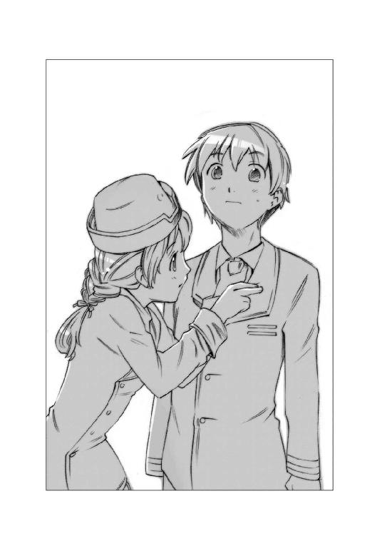
「ありがとう」
ハヤトはそう言って微笑んだ後で付け足した。
「ネクタイを直してもらっておいてなんだけど......ハヤトさんじゃなくて、船長って呼んでくれないか」
リアンは、はっと目を見開いた後で、ちょっと赤くなって頭を下げた。
「ごめんなさい......船長」
その様子を笑いながら見ていたとき、ハインツの胸ポケットにあった汎用端末が小さくピッと鳴った。
「お客さんの到着だ！ ちゃんと整列しろよ」
二人はあわてて元の位置に戻った。
やがて、乗客のタウンゼント氏と家族の声が、連絡通路から聞こえてきた。
ハヤトとハインツとリアンの三人は、にっこり笑って声を揃えて言った。
「ようこそ！ 銀星号へ！」
そして......。
銀星号の航海が始まった。
ＥＮＤ
あとがき
「銀星みつあみ航海記ＬＯＧ00俺らが出帆した動機」いかがでしたでしょうか？
この「00」は、雑誌「ザ・スニーカー」に連載されていた物語に加筆し単行本化したもので、物語の時系列から言うと、すでに書店に並んでいる「銀星みつあみ航海記ＬＯＧ01」の少し前のお話です。ハヤトとハインツがどうやって宇宙船「銀星号」を手に入れたのか。そして、どうしてリアンが仲間に加わったのか。そのあたりのいきさつが書かれておりますので、すでに「01」をお読みになった方でも、楽しく読めるお話になっていると思います。
実を言うとこの物語の主人公は、ハヤトやハインツではありません。本当の主人公は「銀星号」なのです。この「銀星号」のモデルとなった船は「銀星丸」といい、太平洋戦争末期の昭和十九年五月に就航した、日本の戦時急造型輸送船です。
すでに戦局は敗色が濃く、日本中の港の沖合いにはアメリカの爆撃機から機雷が投下されていました。この銀星丸も、就航して一年後の昭和二十年五月に下関港の沖合いに浮かぶ六連島の沖で機雷に接触して沈みました。
戦争が終わって、三年後。戦後の復興のために船舶を必要としていた日本は、この沈んだ銀星丸に目をつけました。引き揚げて、再利用できれば新たに船を作るより安上がりというわけです。そして昭和二十三年九月、銀星丸は引き揚げられ、修理されて再び就航しました。
銀星丸は戦後の復興期の日本を支えて働き続け昭和三十七年に老朽化のために廃船となり、解体されました。銀星丸は、どこにでもある、ごく普通の貨物船です。これといって特異な経歴を持っているわけではありません。
私が書きたい物語は、そのごく普通の貨物船のお話です。私たちが暮らしているこの普通の社会。店に品物が並んでいるのがあたりまえで、それを買えるのがあたりまえの社会。その「あたりまえ」を物流によって支える人間の物語です。
ハヤトとハインツ、そしてリアンたちは、高性能の戦艦に乗ったエリート軍人でも、最新鋭の探査船に乗ったエリート科学者でもありません。どこにでもいる若者たちです。
あたりまえの主人公が、あたりまえに働いて、あたりまえの社会を支える物語を、ドキドキワクワクさせて読ませたい。というのが、私の希望です。
この「銀星みつあみ航海記」は「ザ・スニーカー」での連載と書き下ろし単行本を並行して書き進める予定です。物語の続きが気になる方は「ザ・スニーカー」誌を手に取っていただければ幸いです。
（連載中の「銀星みつあみ航海記ＬＯＧ02」の一話を書き終わってほっとしている）
鷹見 一幸
カバー・口絵・本文イラスト／緒方剛志
デザイン／LIGHTNING
銀星みつあみ航海記
LOG.00 俺らが出帆した動機
鷹見一幸
平成27年1月1日 発行
(C) Kazuyuki TAKAMI 2007
本電子書籍は下記にもとづいて制作しました
角川スニーカー文庫『銀星みつあみ航海記 LOG.00 俺らが出帆した動機』
平成19年3月1日初版発行
発行者 堀内大示
発行所 株式会社ＫＡＤＯＫＡＷＡ
〒102-8177 東京都千代田区富士見2-13-3
03-3238-8745（営業）
編集 角川書店
〒102-8078 東京都千代田区富士見1-8-19
03-3238-8694（編集部）
http://www.kadokawa.co.jp/